СТРОИТЕЛЬНЫЕ НОРМЫ И ПРАВИЛА
МЕЛИОРАТИВНЫЕ СИСТЕМЫ И СООРУЖЕНИЯ
СНиП 2.06.03-85
ГОСУДАРСТВЕННЫЙ КОМИТЕТ СССР ПО ДЕЛАМ СТРОИТЕЛЬСТВА
Москва 1986
СНиП 2.08.03-85 Мелиоративные системы и сооружения/Госстрой СССР. - М.: ЦИТП Госстроя СССР. 1986.
РАЗРАБОТАНЫ Союзводпроектом Минводхоза СССР (канд. техн. наук П.Г. Фиалковский - руководитель темы, канд. техн. наук Е.И. Кормыш, Г.И. Hеугодов, P.М. Фильрозе) с участием Союзгипроводхоза, Средазгипроводхлопка, Ленгипроводхоза, Белгипроводхоза, Кубаньгипроводхоза Минводхоза СССР.
ВНЕСЕНЫ Минводхозом СССР.
ПОДГОТОВЛЕНЫ К УТВЕРЖДЕНИЮ Главтехнормированием Госстроя СССР (Д.В. Петухов).
С введением в действие СНиП 2.06.03-85 "Мелиоративные системы и сооружения" с 1 июля 1986 г. утрачивает сипу СНиП II.52-74 «Сооружения мелиоративных систем».
При пользовании нормативным документом следует учитывать утвержденные изменения строительных норм и правил и государственных стандартов, публикуемые в журнале «Бюллетень строительной техники», «Сборник изменений к строительным нормам и правилам» Госстроя СССР и информационном указателе «Государственные стандарты СССР» Госстандарта.
|
Государственный комитет СССР по делам строительства |
Строительные нормы и правила |
СНиП 2.06.03-85 |
|
Мелиоративные системы и сооружения |
Взамен |
Настоящие нормы и правила распространяются на проектирование вновь строящихся и реконструируемых мелиоративных систем и сооружений.
При проектировании мелиоративных систем и сооружений, предназначенных для строительства в Северной строительно-климатической зоне, на просадочных, набухающих, пучинистых и вечномерзлых грунтах, на площадях, подверженных оползням и селям, возводимых на подрабатываемых территориях, сейсмических районах, надлежит учитывать дополнительные требования, предъявляемые к таким сооружениям соответствующими нормативными документами, утвержденными или согласованными с Госстроем СССР.
Необходимость мелиорации земель следует устанавливать на основании анализа их сельскохозяйственного использования, составляющих водного и солевого балансов корнеобитаемого слоя почв, экономических, социальных и экологических условий.
Оценка перспективного состояния земель после мелиорации должна выполняться на основании составления прогнозов водного, солевого и питательного режимов почв.
Основные буквенные обозначения и индексы к ним, принятые в настоящих нормах согласно СТ СЭВ 1565-79, приведены в справочном приложении 1, термины и определения - в справочном приложении 2.
|
Внесены Минводхозом СССР |
Утверждены постановлением Государственного комитета СССР по делам строительства от 17 декабря 1985г. №228 |
Срок введения в действие 1 июля 1986 г. |
В состав оросительной системы входят: водохранилища, водозаборные и рыбозащитные сооружения на естественных или искусственных водоисточниках, отстойники, насосные станции, оросительная, водосборно-сбросная и дренажная сети, нагорные каналы, сооружения на сети, поливные и дождевальные машины, установки и устройства, средства управления и автоматизации, контроля за мелиоративным состоянием земель, объекты электроснабжения и связи, противоэрозионные сооружения, производственные и жилые здания эксплуатационной службы, дороги, лесозащитные насаждения, дамбы.
1.2. Осушительная система должна включать комплекс взаимосвязанных сооружений, зданий и устройств, обеспечивающий оптимальный водно-воздушный режим переувлажненных земель и надлежащие условия производства сельскохозяйственных работ для получения высоких и устойчивых урожаев сельскохозяйственных культур.
В состав осушительной системы входят: регулируемая часть водоприемника, проводящая, оградительная и регулирующая сети, насосные станции, дамбы, сооружения на сетях, средства управления и автоматизации, контроля за мелиоративным состоянием земель, объекты электроснабжения и связи, противоэрозионные сооружения, производственные и жилые здания эксплуатационной службы, дороги и лесозащитные насаждения.
В условиях периодических дефицитов влаги в корнеобитаемом слое в составе осушительных систем должны предусматриваться сооружения и устройства, обеспечивающие искусственное увлажнение почв в засушливые периоды. Целесообразность увлажнения должна быть обоснована водно-балансовыми и технико-экономическими расчетами.
1.4. На основании технико-экономических сравнений вариантов должны быть обоснованы:
границы и размеры мелиорируемой площади и полей севооборота;
земельный фонд хозяйств, изменения в составе сельскохозяйственных угодий в результате осуществления мелиоративных мероприятий, площади трансформированных в пашни современных пастбищ или других угодий;
размеры хозяйств, осваивающих мелиорируемые земли;
изменение и упорядочение границ существующих хозяйств, в том числе смежных с территорией системы;
сельскохозяйственное использование мелиорируемых земель;
требуемый водно-солевой режим почв;
проектная урожайность сельскохозяйственных культур;
способы орошения и осушения;
создание новых или расширение существующих эксплуатационных водохозяйственных организаций;
строительство производственных, жилых и культурно-бытовых зданий, сооружений, инженерных коммуникаций, необходимых для службы эксплуатации мелиоративных систем.
1.5. Технические решения по схемам подачи и сброса воды, конструкциям основных сооружений следует принимать на основе сравнения технико-экономических показателей вариантов. При этом должны быть обеспечены:
получение проектной продукции растениеводства;
экономное использование водных, земельных и топливно-энергетических ресурсов;
использование высокопроизводительной сельскохозяйственной техники при обработке мелиорируемых земель;
высокая производительность труда при эксплуатации сооружений и мелиоративной системы в целом;
комплексная автоматизация технологических процессов, при этом степень автоматизации должна быть обоснована технико-экономическими расчетами:
соблюдение требований охраны окружающей природной среды санитарно-гигиенических требований;
возможность внесения удобрений, химмелиорантов и гербицидов с оросительной водой.
1.6. При проектировании мелиоративных систем степень использования мелиорируемых земель должна определяться коэффициентом земельного использования Кul:
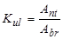
где Ant и Abr - орошаемая или осушаемая площадь, соответственно нетто и брутто, га.
К орошаемой площади нетто относится орошаемая площадь, занятая продуктивными посадками, посевами или естественными лугами и пастбищами и обеспечивающая получение проектной продукции растениеводства.
К осушаемой площади нетто относится осушаемая площадь, занятая продуктивными посадками, посевами или естественными лугами и пастбищами, а также расположенные внутри осушаемых земель и примыкающие суходольные участки площадью до 10 га (имеющие вытянутую или сложную криволинейную форму), обработка и полноценное использование которых возможно только после осушения окружающих земель.
Орошаемая или осушаемая площадь брутто включает орошаемые или осушаемые площади нетто и площади всех видов отчуждений под сооружения мелиоративных систем.
Технико-экономические показатели мелиоративной системы следует определять на 1 га мелиорированной (орошаемой или осушаемой) площади нетто и на единицу проектной продукции растениеводства.
1.7. Классы сооружений мелиоративной системы следует определять по обслуживаемой ими площади орошения или осушения:
св. 300 тыс. га ......................................................... I класс
св. 100 тыс. га до 300 тыс. га ................................ II класс
св. 50 тыс. га до 100 тыс. га ................................ III класс
50 тыс. га и менее .................................................. IV класс
Основные требования по проектированию сооружений различных классов, их отдельных конструкций и оснований, а также расчетные положения и нагрузки необходимо принимать в соответствии со СНиП II-50-74, СНиП 2.06.05-84, СНиП 2.06.06-85, СНиП II-55-79, СНиП 2.06.04-82 и с требованиями настоящих норм.
1.8. Класс нагорных каналов следует принимать равным классу защищаемого сооружения. Расчетную обеспеченность расходов воды необходимо принимать в зависимости от класса нагорных каналов. Для нагорных каналов IV класса расчетную обеспеченность расходов воды следует принимать для систем:
оросительных - 10%;
осушительных - в соответствии с п. 3.63.
1.9. Величину расчетных расходов и уровней воды в водоисточниках, водоприемниках, осушительных каналах необходимо определять согласно СНиП 2.01-14-83 с учетом особенностей формирования стока на водосборной площади.
1.10. Дороги на мелиоративных системах следует проектировать в соответствии со СНиП II-Д.5-72 и СНиП 2.05.11-83.
1.11. Расположение в плане проектируемых линейных сооружений (каналов, дорог, линий электропередач и др.) необходимо принимать с учетом рельефа, инженерно-геологических и гидрогеологических условий, требований рациональной организации сельскохозяйственного производства, существующих дорог, подземных и наземных инженерных коммуникаций и др.
Границы землепользования и севооборотных участков надлежит предусматривать по возможности прямолинейными с учетом существующих и проектируемых каналов, трубопроводов, линий электропередач, дорог и др.; поля севооборотов должны иметь, как правило, прямоугольную форму. Отступление от этих требований допускается в условиях сложного рельефа местности и примыкания к естественным границам (реки, озера, овраги и т. п.). При необходимости допускается изменять границы землепользования, при этом должен быть разработан проект нового межхозяйственного землеустройства.
1.12. Для контроля за мелиоративным состоянием земель необходимо предусматривать сеть наблюдательных скважин и средства измерения расходов воды. При площади мелиоративной системы более 20 тыс. га дополнительно следует организовывать лаборатории по контролю за влажностью и засолением почв, качеством оросительных и дренажных вод со средствами автоматической обработки информации, а также метеорологические станции и водно-балансовые площадки.
1.13. На оросительных системах следует предусматривать раздельный учет воды, подаваемой на территорию республики, области, района, хозяйства, севооборотного участка.
1.14. Для управления процессами водоподачи, водораспределения и использования воды на полях следует предусматривать автоматизацию оросительных систем. Автоматизация оросительных систем должна обеспечивать наибольший технико-экономический эффект в процессе эксплуатации мелиоративных систем, максимальное соответствие между водоподачей и водопотреблением. Весь процесс от водозабора до полива необходимо рассматривать как единый и непрерывный.
1.15. Производственные здания и сооружения эксплуатационных водохозяйственных организаций и жилые здания для работников службы эксплуатации необходимо располагать в насаленных пунктах, находящихся в пределах или вблизи мелиоративных систем.
Производственные базы эксплуатационных организаций следует размещать, как правило, на общей площадке с блокированием основных зданий с едиными вспомогательными зданиями, сооружениями и коммуникациями.
2.1. При выборе источника орошения должна быть выполнена оценка пригодности воды для орошения:
по опасности ухудшения плодородия почв (осолонцевание, засоление, обесструктуривание, выщелачивание почв и т.п.);
по солеустойчивости сельскохозяйственных культур.
Качество оросительной воды следует определять на основании специальных исследований и согласовывать с органами государственного надзора.
2.2. Гидрологический режим источника орошения и пропускная способность сети и сооружений оросительной системы должны обеспечивать своевременную подачу воды на орошаемые земли в количестве, гарантирующем получение 90 % среднегодовой продукции растениеводства за не менее чем 20-летний период наблюдений, получаемой при полном удовлетворении потребности растений в воде и обеспечении оптимальных агротехнических условий.
При этом снижение объема продукции в острозасушливые годы с обеспеченностью дефицита влаги в водном балансе 10% допускается не более 10% гарантированного.
2.3. Оросительная норма нетто Jnnt для данной сельскохозяйственной культуры должна восполнять дефицит влаги в естественном водном балансе dwb в данных метеорологических условиях и технические потери воды на орошаемом поле Vlt в результате инфильтрации ниже расчетного слоя почвы, сброса воды за пределы поля, испарения в процессе полива.
Оросительная норма нетто Jnnt определяется по формуле
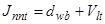
где dwb - дефицит влаги в водном балансе, мм, определяемый по формуле
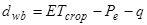
здесь - эвапотранспирация (транспирация растений и испарение с поверхности почвы), мм;
Ре - эффективные осадки, мм;
q - подпитывание расчетного слоя почвы подземными водами, мм.
При наличии на оросительной системе засоленных почв и необходимости проведения промывных поливов оросительная норма нетто Jnnt определяется по
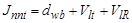
где VlR - слой воды на промывку, мм.
2.4. Величины эвапотранспирации и подпитывания почвы подземными водами следует принимать по фактическим данным 20-30 летних наблюдений. При отсутствии таких данных допускается использовать эмпирические формулы, действующие для конкретных климатических зон.
2.5. При наличии засоленных почв промывные нормы во вневегетационный период, а также увеличение оросительных норм для создания промывного режима при поливе сельскохозяйственных культур следует определять на основании прогноза водно-солевого режима почв.
2.6. Величину технических потерь на поле Vit необходимо принимать:
а) при поверхностном полива - на основании расчета или при отсутствии фактических региональных данных - согласно справочному приложению 3;
б) при дождевании:
на инфильтрацию и поверхностный сброс - не более 10% дефицита водопотребления сельскохозяйственных культур;
на испарение в зоне дождевого облака Е - в % водоподачи, определяемой по формуле
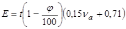
где t - максимальная температура воздуха при дождевании, °С;
j - относительная влажность воздуха при дождевании, %;
va - расчетная скорость ветра, приведенная к высоте флюгера и определяемая по формуле
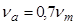
здесь vm - средняя скорость ветра за расчетный период (декаду, месяц) на высоте флюгера, м/с.
Климатические параметры следует принимать среднесуточными за расчетный период по данным метеорологических наблюдений.
2.7. Общий объем воды, забираемой из источника орошения Vw, определяется по формуле
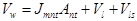
где Jmnt - средневзвешенная оросительная норма нетто сельскохозяйственных культур, м3/га, определяемая по формуле
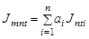
ai - доля культуры в севообороте;
Ant - орошаемая площадь нетто, га;
Vl - потери воды из оросительной сети на фильтрацию, м3;
Vls - технологические сбросы воды из оросительной сети, м3.
Схемы и степень автоматизации водораспределения должны обеспечивать сокращение технологических сбросов до величин, которые не должны превышать 5 % водопотребления нетто оросительной системы.
2.8. Коэффициент полезного использования воды на оросительной системе Еa необходимо определять как отношение объема полезно используемой воды на покрытие дефицита влаги в водном балансе сельскохозяйственных культур Vus, к разности объемов забираемой воды из водоисточника Vw, и вторично используемой воды на системе Vru, с учетом требований пп. 2.6 и 2.9:
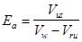
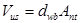
2.9. Расход воды Qbr, забираемой из источника орошения, следует определять путем суммирования расхода воды нетто и потерь воды в оросительной сети на фильтрацию.
Расход воды нетто Qnt необходимо рассчитывать как произведение ординаты укомплектованного графика гидромодуля на орошаемую площадь нетто при поверхностном поливе или как сумму расходов одновременно работающих дождевальных устройств при поливе дождеванием.
Коэффициент полезного действия оросительной сети определяется по формуле
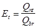
и должен быть не менее 0,8.
2.10. Расчет и построение графиков гидромодуля и полива севооборотов следует проводить на основе интегральных кривых дефицитов водопотребления сельскохозяйственных культур исходя из норм и сроков полива каждой культуры с учетом почвенно-мелиоративных условий и параметров поливной, дождевальной техники.
Для снижения непродолжительных (не более 5 сут.) пиков водопотребления допускается комплектование графиков путем сдвига поливов на более ранние сроки (2 - 3 сут.) с корректировкой поливной нормы в сторону ее уменьшения.
2.11. Границы допускаемых пределов иссушения и глубину расчетного слоя почвы по фенологическим фазам развития сельскохозяйственных культур следует принимать по данным исследований, при их отсутствии в соответствии с рекомендуемыми приложениями 4, 5.
2.12. Оросительная сеть состоит из магистрального канала (трубопровода, лотка), его ветвей, распределителей различных порядков и оросителей.
Оросители являются низшим звеном сети, подающим воду к дождевальным (поливным) машинам, дождевальным аппаратам и поливным устройствам (поливным трубопроводам, лоткам, шлангам).
2.13. Плановое расположение оросительной сети следует принимать с учетом требований п. 1.11 и обеспечения своевременной подачи необходимого объема воды из условия проведения круглосуточного полива в пик водопотребления в соответствии с расчетным режимом орошения.
2.14. Оросительную сеть следует проектировать закрытой в виде трубопроводов или открытой в виде каналов и лотков.
Выбор оптимальной конструкции оросительной сети должен проводиться на основе сравнения технико-экономических показателей вариантов сети.
При поверхностном поливе на уклонах местности более 0,003 следует, как правило, предусматривать самотечно-напорную трубчатую оросительную сеть.
2.15. Расчет магистральных каналов, их ветвей, распределителей различных порядков следует выполнять:
для определения гидравлических элементов каналов - на максимальный расход;
для определения превышения дамб и берм над уровнем воды в каналах и проверки их на неразмываемость - на форсированный расход;
для проверки уровней воды, обеспечивающих водозабор из каналов, определения местоположения водоподпорных сооружений и проверки каналов на незаиляемость - на минимальный расход.
Максимальный расход воды должен определяться по максимальной ординате графика водоподачи.
В случае совпадения периода максимальной мутности воды в источниках с временем работы каналов с расчетными расходами следует выполнять расчеты на незаиляемость.
Форсированный расход необходимо принимать равным максимальному, увеличенному на коэффициент форсировки Kf, равный при максимальном расходе:
менее 1 м3/с............................... 1,2
от 1 до 10 м3/с ................…….. 1,15
от 10 до 50 м3/с ................….....1,1
от 50 до 100 м3/с ..............….... 1,05
св. 100 м3/с ........................…....1,0
2.16. Оросители (каналы, трубопроводы, лотки) следует проектировать только на максимальный расход воды брутто.
2.17. Расход оросителей при поверхностном поливе следует определять по максимальной поливной норме в пиковый период водопотребления и орошаемой площади нетто с учетом коэффициента полезного действия оросителя.
При этом должен быть обеспечен за сутки полив площади, равный суточной производительности сельскохозяйственных машин на послеполивной обработке пропашных культур.
В случае применения поливных машин максимальный расход оросителя должен быть равен сумме максимальных расходов одновременно работающих поливных машин.
2.18. При поливе дождеванием максимальный расход оросителя брутто следует определять по графику полива, учитывающему максимальное число и расход одновременно работающих дождевальных машин с учетом коэффициента полезного действия оросителя.
2.19. Максимальный расход брутто распределителя низшего порядка должен быть равен сумме максимальных расходов одновременно работающих оросителей с учетом коэффициента полезного действия распределителя.
2.20. Максимальный расход брутто распределителя высшего порядка, а также магистрального канала, его ветвей должен быть равен сумме максимальных расходов подсоединенных к нему одновременно работающих распределителей низшего порядка с учетом коэффициента полезного действия распределителя (магистрального канала, его ветвей).
2.21. Минимальный расход воды в магистральных каналах, их ветвях и распределителях всех порядков следует принимать не менее 40 % максимального расхода.
При поливе дождеванием минимальный расход распределителя должен быть равен расходу воды минимального числа дождевальной техники, одновременно получающей из него воду на основании графика полива.
2.22. Коэффициент полезного действия Eb магистрального канала, распределителя, оросителя или их участков следует определять как отношение максимального расхода воды Qnt, забираемого из канала, к максимальному расходу воды Qbr, в начале канала с учетом потерь воды на фильтрацию и испарение по его трассе
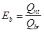
Коэффициенты полезного действия магистрального канала, его ветвей должны быть не менее 0,90, а распределителей различных порядков и оросителей - не менее 0,93.
2.23. Вдоль магистральных каналов и их ветвей, как правило, надлежит предусматривать эксплуатационные дороги, по границам полей севооборотов - полевые дороги.
2.24. Оросительные системы поверхностного полива следует проектировать, как правило, в полупустынной и пустынной зонах, а также в районах, где дождевание не обеспечивает требуемого водного режима почв.
2.25. Поверхностный полив необходимо предусматривать по бороздам, полосам, чекам.
2.26. По бороздам следует поливать пропашные культуры и многолетние насаждения при уклонах местности не более 0,05.
2.27. При поливе по бороздам в зависимости от природных условий следует применять продольную и поперечную схемы полива.
При продольной схеме полива направление борозд совпадает с направлением оросителя и уклона местности, при поперечной схеме борозды направлены поперек основного уклона (вдоль горизонталей местности) перпендикулярно оросителям. Условия применения схем полива приведены в рекомендуемом приложении 6.
2.28. Расстояния между оросителями при продольной схеме полива следует принимать в зависимости от длины поливных устройств, при поперечной схеме - от длины борозд.
Расстояния между водовыпусками в поливные устройства (между гидрантами) необходимо принимать равными длине борозд при продольной схеме и длине поливного устройства - при поперечной.
При применении поливных машин расстояние между оросителями и гидрантами должно определяться техническими характеристиками применяемых машин.
2.29. Длина борозд, расстояние между бороздами, расходы поливных струй должны определяться с учетом уклона поверхности земли, водно-физических свойств почв и обеспечивать подачу заданной поливной нормы при минимальных поверхностном и глубинном сбросах, равномерность увлажнения по длине борозды, высокую производительность труда на поливе.
2.30. Оптимальные элементы техники полива по бороздам следует назначать согласно рекомендуемым приложениям 7, 8 или по данным специальных исследований.
2.31. Распределение воды по бороздам должно производиться с применением поливных трубопроводов (передвижных, стационарных), лотков, каналов, машин.
Передвижные поливные трубопроводы (жесткие и гибкие) допускается применять на спланированных территориях с уклонами более 0,003 при поперечной и продольной схемах полива.
Жесткие трубопроводы следует применять преимущественно при поперечной схеме полива.
Полив из стационарных поливных трубопроводов надлежит применять при продольной схеме полива преимущественно для полива садов и виноградников при уклонах более 0,008.
2.32. Диаметр поливного трубопровода надлежит определять из условия обеспечения подачи расчетного расхода воды в борозды. Напор по всей длине трубопровода должен быть для работы:
передвижных поливных трубопроводов - не менее 1,0 м;
стационарных закрытых поливных трубопроводов с применением патрубков-водовыпусков при поливе:
многолетних насаждений:
постоянной струей .................. 0,5 - 1,5 м
переменной струей ................. 3,0 - 4,0 м
пропашных культур:
постоянной струей ................. 1,5 - 2,0 м
переменной струей ................ 6,0 - 7,0 м
2.33. Поливные лотки (каналы) с непосредственным выпуском воды в борозды должны применяться на массивах с уклонами до 0,003 и с почвами средней и слабой степени водопроницаемости, на которых возможно проведение полива по бороздам длиной 300 - 400 м.
Поливные лотки (каналы) следует применять, как правило, при поперечной схеме полива.
2.34. Полив по полосам следует применять для орошения сельскохозяйственных культур преимущественно сплошного сева (зерновые, травы) на спланированных участках при уклонах поверхности земли: поперечных - не более 0.002, продольных (в направлении полива) - не более 0,015.
2.35. Узкие полосы ширимой 1,8-7,2 м и длиной 200-400 м следует применять при поперечных уклонах местности 0,001-0,002.
Широкие полосы шириной 25-40 м и длиной до 600 м следует применять на спланированной поверхности с продольным уклоном не более 0,001-0,003 при отсутствии поперечных уклонов.
Подача воды в полосы должна производиться с применением сифонов, поливных машин и водовыпусков.
Элементы техники полива по полосам следует принимать в соответствии с рекомендуемыми приложениями 9, 10 или по материалам специальных исследований.
2.36. Земляные валики, ограничивающие полосы, следует устраивать для полос:
узких - с заложением откосов 1:1,
широких - с заложением откосов 1:4.
2.37. Рисовые оросительные системы следует размещать: в районах, имеющих сумму положительных температур в вегетационный период не менее 2500 °С, достаточные водные ресурсы, малопроницаемые почвы; на землях с общими уклонами поверхности не более 0,005.
Не допускается размещение рисовых систем на болотных почвах с мощностью пласта торфа в естественном состоянии более 0,5.
2.38. В состав рисовой оросительной системы кроме элементов, перечисленных в п. 1.1, должны входить: поливные (рисовые) карты, состоящие из отдельных чеков (горизонтальных площадок), картовые оросители, картовые сбросы, сбросы-оросители, при необходимости оградительные дрены и дамбы.
2.39. Поливная (рисовая) карта должна быть ограничена по периметру каналами низшего эвена оросительной, сбросной и дренажной сети и являться частью поля рисового севооборота. Площадь поля севооборота, включающего смежные поливные карты, должна быть 50-150 га.
2.40. Картовые оросители, картовые сбросы, сбросы-оросители с сооружениями, являющиеся низшим звеном оросительной, сбросной и дренажной сети, как правило, следует проектировать с автоматизированным регулированием глубины воды в чеках.
Оросительная норма риса должна включать:
суммарную величину испарения с поверхности рисового поля и транспирации растений;
объем оросительной воды, расходуемой на первоначальное насыщение почвенного слоя и создание слоя затопления;
объем боковой и вертикальной фильтрации: объем воды, расходуемой на создание проточности или на периодическую смену воды в чеках;
объем поверхностных сбросов;
объем технических потерь на утечку воды через водовыпуски.
В районах Дальнего Востока следует учитывать осадки за вегетационный период (по году 75 %-ной обеспеченности). При этом коэффициент использования осадков следует принимать равным 0,3-0,5.
2.41. Продолжительность периода первоначального затопления рисовых посевов в целом по хозяйству должен составлять не более 10 сут. на Дальнем Востоке и 12-16 сут - во всех остальных районах рисосеяния.
2.42. Значение КПД картовых оросителей при двустороннем обслуживании рисовых карт необходимо принимать равным 1,0, при одностороннем обслуживании КПД следует определять расчетом или методом ЭГДА.
2.43. При определении максимального расхода каналов оросительной сети на рисовой системе необходимо дополнительно вводить коэффициент запаса и коэффициент водооборота, а также учитывать долю риса в общей площади севооборота.
Коэффициент запаса, учитывающий увеличение водоподачи в период первоначального затопления рисовых карт, следует принимать равным 1,1 для всех каналов, за исключением картовых оросителей.
Для картовых и участковых оросителей, а также для каналов, обслуживающих часть полей севооборота, долю содержания риса в севообороте необходимо принимать равной 1,0, для остальных оросительных каналов высшего порядка - 0,75.
Коэффициент водооборота, равный отношению времени первоначального затопления рисовых карт на всей оросительной системе ко времени первоначального затопления обслуживаемой данным каналом площади, необходимо принимать по табл. 1.
Таблица 1
|
Продолжительность затопления всех посевов риса на оросительной системе, сут |
|
|||
|
10 |
12 |
16 |
||
|
Картовых оросителей и участковых каналов, обслуживающих поле севооборота, состоящее из 2-3 карт |
3 |
4 |
5 |
|
|
Участковых каналов при 4 картах в поле севооборота |
1 |
1 |
1,3 |
|
|
Участковых каналов при 5 картах в поле севооборота |
1 |
1 |
1 |
|
|
Участковых каналов (при числе карт в поле севооборота более 5) и всех остальных (высших) каналов оросительной системы |
1 |
1 |
1 |
|
2.44. Минимальный расход оросительных каналов следует определять с учетом содержания риса в севообороте.
Максимальный расход каналов водосборно-сбросной сети всех порядков необходимо определять с учетом содержания риса в севообороте и коэффициента запаса. Содержание риса в севообороте для картовых дрен - сбросов, а также для коллекторов, обслуживающих часть полей севооборота, следует принимать равным 1,0, для коллекторов высшего порядка - 0,75. Коэффициент запаса при определении максимального расхода воды в водосборно-сбросной сети, как правило, следует принимать 1,5, для районов Дальнего Востока - 1,2.
Пропускную способность каналов водосборно-сбросной сети необходимо проверять на пропуск ливневых расходов 10 %-ной обеспеченности. Минимальный расход каналов водосборно-сбросной сети всех порядков следует определять с учетом содержания риса в севообороте.
2.45. Дренажные и сбросные воды рисовых систем, как правило, следует использовать для орошения повторно. Нецелесообразность их использования должна быть обоснована.
2.46. По конструкции рисовые карты в зависимости от способа подачи, отвода воды и числа чеков необходимо проектировать:
с раздельной подачей и сбросом воды, когда вдоль одной из длинных сторон рисовой карты расположен картовый ороситель, выполненный в насыпи, как правило, двустороннего командования, а по другой - картовый сбросной канал (карты краснодарского типа). Длину рисовой карты необходимо принимать 400-1200 м, ширину - 150-250 м в зависимости от фильтрационных свойств почв. Рисовая карта должна делиться поперечными валиками на чеки. Площадь чека должна быть 2-6 га, число чеков на карте 4-5;
с раздельной подачей и сбросом воды и двумя чеками площадью 6 га каждый (карты кубанского типа). Длина рисовых карт должна быть 400-600 м, ширина 200-300 м;
с совмещенной функцией подачи и сброса воды - карта широкого фронта подачи и сброса воды (КШФ), когда подача воды осуществляется за счет переполнения заглубленного канала (сброса-оросителя). Длину поливных карт широкого фронта следует принимать не более 1200 м. Площадь чека или карты-чека в этом случае может приниматься от 6 до 12 га. При разбивке карт широкого фронта на отдельные чеки необходимо в местах примыкания поперечных валиков к сбросу-оросителю предусматривать на последнем водоподпорные сооружения.
Карты широкого фронта подачи и сброса воды, как правило, надлежит применять при уклонах местности до 0,001 и располагать длинной стороной вдоль горизонталей местности, с планированием каждой карты под одну отметку (карты-чеки).
Выбор конструкции рисовых карт следует проводить на основании сопоставления технико-экономических показателей вариантов.
2.47. Каналы и дрены рисовых систем должны обеспечивать:
первоначальное затопление отдельной рисовой карты на более чем на 3 сут, а посевов риса в целом по хозяйству - за 12-16 сут, для районов Дальнего Востока - на более чем за 10 сут;
поддержание расчетного слоя воды в чеках в требуемые агротехнические сроки;
нисходящие токи влаги на затопленном поле. Интенсивность оттока следует определять по данным опытов в аналогичных природных условиях;
сброс воды и снижение уровня подземных вод для просушки чеков перед уборкой;
понижение уровня грунтовых вод в неполивной период на глубину, обеспечивающую аэрацию плодородного слоя почвы;
условия нормального сельскохозяйственного производства на прилегающих к системе землях и на не занятых рисом полях рисового севооборота (поддержание подземных вод на требуемом уровне, устранение заболачивания и засоления).
2.48. Картовые оросители следует проектировать с отметками уровней воды, обеспечивающими затопление самого высокого чека расчетным слоем воды.
При проектировании планировочных работ разность отметок поверхности соседних чеков должна быть не более 0,4 м.
2.49. По периметру чеков необходимо устраивать канавки трапецеидального или треугольного сечения глубиной 0,5-0,8 м.
2.50. На рисовых системах необходимо предусматривать перепады уровней воды не менее:
15-20 см - на водовыпусках с расходом до 1 м3/с;
20-25 см - на регулирующих сооружениях с расходом более 1 м3/с.
2.51. Каждое поле севооборота, как правило, должно иметь самостоятельный подвод воды и отдельный водоотвод. При этом должна быть обеспечена одновременная подача воды во все подразделения (отделения, бригады) хозяйства и рисоводческие звенья.
2.52. Полив дождеванием следует применять:
на незасоленных и промытых почвах со средней интенсивностью искусственного дождя, на превышающей впитывающей способности почвы в конце полива;
при глубине залегания слабо- и среднеминерализованных подземных вод не менее 2,5 м, что должно быть обеспечено, естественным оттоком подземных вод или дренажем;
в климатических зонах, где потери воды на испарение в зоне дождевого облака, как правило, не превышают 15 %;
при повторяемости ветра в поливной период со скоростью, превышающей допускаемую для применяемого типа дождевальной техники, не более 20 %;
при поливных нормах, как правило, не более 600 м3/га.
2.53. Содержание взвешенных частиц в поливной воде и их крупность регламентируются техническими условиями применяемой дождевальной техники.
2.54. Для полива дождеванием необходимо применять следующую дождевальную технику:
широкозахватные многоопорные дождевальные машины с фронтальным перемещением, работающие в движении, с водозабором из открытой и закрытой оросительной сети;
дождевальные машины кругового действия, работающие в движении, с водозабором из закрытой оросительной сети или непосредственно из скважин;
дождевальные машины позиционного действия с фронтальным перемещением и водозабором из закрытой оросительной сети;
дальнеструйные дождевальные машины позиционного действия с водозабором из закрытой или открытой оросительной сети;
дождевальные машины с фронтальным перемещением и водозабором из открытой оросительной сети;
шлейфы позиционного действия с водозабором из закрытой оросительной сети;
полосовые шланговые дождеватели, работающие в движении, с водозабором из закрытой оросительной сети;
средне- и дальнеструйные дождевальные аппараты с водозабором из закрытой оросительной сети на стационарных системах и в комплектах ирригационного оборудования.
Дождевальную технику следует применять для проведения влагозарядковых, предпосевных, вегетационных, освежительных, посадочных, противозаморозковых поливов, а также для внесения минеральных удобрений и микроэлементов с поливной водой.
2.55. Системы с дождевальными машинами кругового действия, широкозахватными многоопорными с фронтальным перемещением и водозабором из открытой и закрытой оросительной сети, позиционного действия с фронтальным перемещением и водозабором из закрытой оросительной сети следует применять для поливов зерновых, зернобобовых, технических, овощных, бахчевых и кормовых культур. Дождевальные машины с фронтальным перемещением и водозабором из закрытой оросительной сети необходимо применять и для поливов сенокосов и культурных пастбищ.
Полив дождевальными машинами позиционного действия с водозабором из закрытой или открытой оросительной сети, с фронтальным перемещением и водозабором из открытой оросительной сети следует предусматривать при орошении овощных, бахчевых и кормовых культур, сенокосов и культурных пастбищ, а позиционного действия - и для полива садов.
Шлейфы следует применять для поливов кормовых культур, сенокосов, культурных пастбищ, садов, виноградников и ягодников.
Применение полосовых шланговых дождевателей необходимо предусматривать для поливов овощных и кормовых культур, сенокосов, культурных пастбищ, садов и ягодников.
Средне- и дальнеструйные дождевальные аппараты (на стационарных системах) следует использовать для поливов садов, виноградников, чайных и цитрусовых плантаций, ягодников и овощных культур.
2.56. Дождевальные машины, шлейфы, полосовые шланговые дождеватели следует использовать при уклонах местности, регламентированных техническими условиями на дождевальную технику, средне- и дальнеструйные дождевальные аппараты (на стационарных системах) - при уклонах не более 0,2.
Дождевальная техника должна применяться при следующих разновидностях рельефа:
широкозахватные многоопорные дождевальные машины с водозабором из открытых оросительных систем - при спокойном и слаборасчлененном;
дождевальные машины кругового и позиционного действия, средне- и дальнеструйные дождевальные аппараты (на стационарных системах) - при спокойном, слаборасчлененном, пересеченном, холмистом;
дождевальные машины позиционного действия с фронтальным перемещением и водозабором из закрытой оросительной сети, полосовые шланговые дождеватели - при спокойном, слаборасчлененном;
дождевальные машины с фронтальным перемещением и водозабором из открытой оросительной сети - при спокойном.
2.57. Конфигурация орошаемой площади должна быть, как правило, прямоугольной и соответствовать следующим требованиям:
для дождевальных машин кругового действия размеры сторон поля севооборота должны быть кратными длине водопроводящего трубопровода и иметь соотношение 1:1 или 1:2;
для дождевальных машин с фронтальным перемещением, работающих в движении, с водозабором из открытой оросительной сети, позиционного действия с фронтальным перемещением и водозабором из закрытой и открытой оросительной сети и шлейфов - одна сторона поля должна быть кратной ширине захвата искусственным дождем.
Дальнеструйные дождевальные машины позиционного действия с водозабором из закрытой или открытой оросительной сети, полосовые шланговые дождеватели, средне- и дальнеструйные дождевальные аппараты (на стационарных системах) могут применяться на орошаемых площадях любой конфигурации.
2.58. Дождевальные машины кругового действия, широкозахватные многоопорные машины с фронтальным перемещением, машины позиционного действия с водозабором из закрытой оросительной сети следует применять для культур высотой надземной части в поливной период не более 2,5 м.
Дождевальные машины с фронтальным перемещением и водозаборов из открытой оросительной сети необходимо применять для культур высотой 1,6м.
Дальнеструйные дождевальные машины позиционного действия с водозабором из закрытой оросительной сети, шлейфы, средне- и дальнеструйные дождевальные аппараты (на стационарных системах) следует применять для культур высотой до 5 м.
2.59. Оросительные системы с поливом дождевальными машинами кругового действия следует применять в зоне недостаточного увлажнения, как правило, с числом не менее 15 и при работе на одной позиции.
Для систем с дождевальными машинами с фронтальным перемещением и дальнеструйных машин позиционного действия с забором воды из открытых оросителей в земляном русле уклон дна оросителей должен быть не более 0,007.
Дальнеструйные машины не следует применять на легкозаплывающих почвах.
2.60. Дождевальная техника должна применяться, как правило, при групповой работе на площади, обслуживаемой одной насосной станцией подкачки. Эта площадь должна составлять, га:
для машин кругового действия - 800-1200;
для дождевальных машин позиционного действия с фронтальным перемещением и водозабором из закрытой оросительной сети - 400-1000;
для дальнеструйных дождевальных машин позиционного действия с водозабором из закрытой или открытой оросительной сети - 300-500;
для полосовых шланговых дождевателей - 160-300;
для шлейфов - 100-200:
для средне- и дальнеструйных дождевальных аппаратов - 50-300.
Дождевальные широкозахватные многоопорные машины с фронтальным перемещением, работающие в движении, с водозабором из открытой оросительной сети должны использоваться при групповой работе на площади 900-1600 га, дождевальные машины с фронтальным перемещением, работающие в движении, с водозабором из открытой оросительной сети на площади 300-700 га.
Допускается использование дальнеструйных дождевальных машин, шланговых дождевателей, машин с фронтальным перемещением и водозабором из открытой оросительной сети для орошения отдельных мелкоконтурных участков, площадь которых должна быть не менее сезонной нагрузки на дождевальную машину.
2.61. При поливе дождеванием полив охранной зоны воздушных линий электропередачи напряжением до 220 кВ включ. допускается водой с удельным сопротивлением не менее 700 Ом×см. При этом крайние капли струи, при максимально допускаемом для работы дождевальной техники ветре, не должны попадать за ось трассы линии электропередачи.
При удельном сопротивлении воды менее 700 Ом×см расстояние от конца струи дождевальных аппаратов до проекции на поверхность земли крайних проводов линий электропередач должно быть не менее, м, для линий электропередач:
до 20 кВ включ. ...................... 10
до 35 кВ включ. ...................... 15
до 110 кВ включ. .................... 20
от 150 до 220 кВ включ. ......... 25
от 330 до 750 кВ включ. ......... 30
Перенос линий электропередач следует обосновывать технико-экономическими расчетами.
2.62. Модификацию дождевальной машины кругового действия следует подбирать по расходу воды Qsd, л/с, исходя из условия удовлетворения среднесуточного дефицита в пиковый период водопотребления наиболее влаголюбивой сельскохозяйственной культуры севооборота по формуле
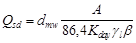
где dmw - среднесуточный дефицит водопотребления - расчётный: не менее двух соседних декад, пиковый период наиболее влаголюбивой сельскохозяйственной культуры севооборота, м3/га;
А - площадь поля, определяемая длиной водопроводящего трубопровода дождевальной машины, га;
Kday - коэффициент использования рабочего времени суток, принимаемый согласно справочному приложению 11;
gl - коэффициент, учитывающий возможные потери рабочего времени по метеорологическим условиям и определяемый по формуле
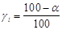
а - продолжительность периода со скоростью ветра свыше допускаемой для данного типа дождевальной техники, % продолжительности поливного периода;
b - коэффициент, учитывающий потери воды на испарение в зоне дождевого облака при дождевании, определяемый по формуле
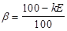
k - поправочный коэффициент, характеризующий тип дождевальной машины и равный:
1,0 - для машин кругового действия, позиционного действия с фронтальным перемещением и водозабором из закрытой оросительной сети, широкозахватных многоопорных машин с фронтальным перемещением, работающих в движении, с водозабором из открытой оросительной сети;
1,2-1,3 - для дальнеструйных дождевальных машин позиционного действия;
0,75-0,85 - для дождевальных машин с фронтальным перемещением и водозабором из открытой оросительной сети;
Е - испарение воды в зоне дождевого облака при дождевании, % водоподачи, определяемое с учетом требований п. 2.6.
Климатические параметры должны приниматься среднесуточными за расчетный период по данным ближайшей метеостанции.
2.63. Число одновременно работающих дождевальных машин или дождевальных аппаратов на севооборотном участке должно устанавливаться на основании графика полива сельскохозяйственных культур или многолетних насаждений для расчетного года с учетом принятой сезонной нагрузки на применяемую дождевальную технику и ее технической характеристики.
2.64. Для широкозахватных многоопорных дождевальных машин с фронтальным перемещением, позиционного действия с фронтальным перемещением и водозабором из закрытой оросительной сети, машин с фронтальным перемещением и водозабором из открытой оросительной сети, дальнеструйных дождевальных машин позиционного действия сезонная погрузка Ас, га, определяется по формуле
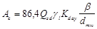
В формуле обозначения такие же, как и в п. 2.62. Коэффициент Kday принимается согласно справочным приложениям 12, 13.
При применении дождевальных машин площадь поля севооборота должна быть, как правило, равной площади, обслуживаемой дождевальной машиной, или кратной ей.
2.65. Системы капельного орошения следует применять при возделывании высокорентабельных многолетних насаждений (сады, виноградники, ягодники) и в условиях ограниченных водных ресурсов.
2.66. Системы капельного орошения надлежит располагать:
на незасоленных почвах при уровне пресных подземных вод на глубине не менее 2 м, минерализованных - не менее 4 м;
на предгорных участках со сложным рельефом и уклонами более 0,05;
на равнинных участках, как правило, с легкими почвами (песчаные, каменистые).
2.67. Качество подземных и поверхностных вод, используемых для капельного орошения, должно удовлетворять общим требованиям к оросительной воде и техническим характеристикам применяемого оборудования. В составе системы капельного орошения необходимо предусматривать узел очистки воды и ввода удобрений с поливной водой.
2.68. Допускаемое содержание взвешенных веществ и гидробионтов в поливной воде должно определяться в зависимости от типа применяемых капельниц.
2.69. Системы капельного орошения следует проектировать стационарными с надземным или подземным расположением поливных трубопроводов.
2.70. Подачу воды на системах капельного орошения необходимо предусматривать с учетом необходимости ее автоматизации, планового расположения распределительной сети и модульных участков. Размеры модульных участков следует назначать в увязке со схемой работ по организации орошаемой территории (размещение сооружений, поселков, проведение культуртехнических работ и др.).
2.71. Для распределительных трубопроводов высшего порядка применение стальных труб не допускается.
Стальная соединительная арматура должна иметь внутреннюю и внешнюю противокоррозионную защиту.
2.72. Распределительные трубопроводы низшего порядка должны выполняться из пластмассовых труб.
Длина распределительных трубопроводов не должна быть более 300 м для садов и 500 м для виноградников.
2.73. Поливные трубопроводы при надземном расположении в существующих садах и виноградниках должны размещаться вдоль рядов насаждении на высоте не более 70 см.
Поливные трубопроводы при подземном расположении во вновь создаваемых садах и виноградниках должны устраиваться на глубине не менее 50 см.
Поливные трубопроводы должны выполняться из пластмассовых труб.
Подключение поливных трубопроводов к pacпределительным следует предусматривать одно- или двухстороннее.
2.74. Капельницы должны применяться непрерывного и порционного действия с величиной промывочного расхода 2-40 л/ч.
Расстояния между капельницами на поливном трубопроводе следует определять расчетом в соответствии с впитывающей способностью корнеобитаемого слоя почвы и водопотреблением растений. Капельницы должны быть расположены на расстоянии не менее 20 см от штамба растения.
2.75. Методы очистки воды, состав и расчетные параметры водоочистных сооружений и устройств надлежит выбирать в зависимости от качества воды в источнике орошения, требований капельниц применяемых устройств автоматики.
2.76. Следует предусматривать проведение профилактических промывок трубопроводов.
2.77. При содержании в исходной воде гидробионтов более 20 мг/л необходимо предусматривать, как правило, купоросование воды в регулирующих или водопропускных сооружениях (бассейны аванкамеры, трубопроводы).
2.78. Расчетный суточный расход воды, подаваемой на капельное орошение, следует определять по формуле
, (17)
где t - продолжительность полива, ч;
Qu - максимальный часовой расход воды на полив, м3/ч;
Qlt - расход воды, м3/сут, на собственные нужды узла очистки (на промывки сеток, зернистых загрузок, на мойку территории станции, полив зеленых насаждений и вокруг станции и др.) определяется по формуле
, (18)
здесь k - коэффициент, учитывающий расход воды на собственные нужды узла очистных сооружений, принимается 0,01-0,03.
2.79. Системы синхронного импульсного дождевания следует применять:
для полива многолетних насаждений, кормовых культур без образования поверхностного стока;
при расчлененном рельефе и уклонах поверхности от 0,05 до 0,3;
на незасоленных почвах любой водопроницаемости, в том числе на маломощных.
2.80. Оросительная сеть систем импульсного дождевания должна, как правило, выполняться стационарной с подземной укладкой трубопроводов.
2.81. Системы импульсного дождевания следует проектировать из модульных участков площадью 10 га с разделением участков орошения на отдельные зоны (ярусы) с перепадами высот (отметок местности) между ними не более 25 м.
При перепаде высот на орошаемом участке более 25 м следует устанавливать усилители командных сигналов на каждом ярусе.
В случае использования системы импульсного дождевания на существующей закрытой напорной оросительной сети необходимо применять генераторы командных сигналов с дождевателями.
2.82. Трубопроводы оросительной сети систем синхронного импульсного дождевания следует располагать таким образом, чтобы подача воды по трубопроводам за генератором командных сигналов осуществлялась, как правило, по горизонтали или снизу вверх по рельефу. Допускается подача воды сверху вниз по рельефу не более чем на 10 м. Поливные трубопроводы следует располагать преимущественно параллельно горизонталям местности. Длина поливных трубопроводов должна быть не более 250 м, число дождевателей на поливном трубопроводе не более 6.
2.83. Материал труб для проводящей оросительной сети следует выбирать в соответствии с п. 2.171.
2.84. Расстояния между поливными трубопроводами и импульсными дождевателями на поливном трубопроводе следует устанавливать в соответствии с техническими характеристиками применяемого оборудования.
2.85. Запорно-регулирующая и измерительная аппаратура, генераторы и усилители командных сигналов должны устанавливаться, как правило, в колодцах.
2.86. Для систем синхронного импульсного дождевания следует применять оборудование для внесений вместе с поливной водой растворимых удобрений.
Расход поливного трубопровода Qr л/с, следует определять по формуле
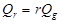
где r - число импульсных дождевателей, обслуживаемых трубопроводом;
Qg - расчетный расход заполнения импульсного дождевателя, л/с.
Расчетный расход заполнения импульсного дождевателя, л/с, следует определять по формуле
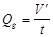
где V - объем выплеска импульсного дождевателя за цикл, л;
t - время заполнения гидропневмоаккумуляторов всех импульсных дождевателей на системе, с.
2.87. Время заполнения гидропневмоаккумуляторов всех импульсных дождевателей на системе t, с, обеспечивающее расчетный режим орошения сельскохозяйственных культур, определяется по формуле
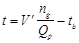
где ng - число импульсных дождевателей системы;
Qp - расчетный расход оросительной системы, л/с;
tb - время выплеска воды всеми импульсными дождевателями системы следует принимать 5-8 с.
2.88. Системы внутрипочвенного орошения, позволяющие увлажнять корнеобитаемый слой почвы капиллярным путем из подземных увлажнителей, следует применять, как правило, в степных, полупустынных и пустынных зонах при остром дефиците воды, для полива высокорентабельных сельскохозяйственных культур, а также вблизи населенных пунктов и животноводческих комплексов при использовании для орошения подготовленных городских сточных вод и животноводческих стоков.
2.89. Системы внутрипочвенного орошения следует применять с соблюдением следующих требований:
рельеф участка должен иметь уклоны не более 0,01;
почвы должны быть незасоленные, легкого, среднего и тяжелого механического состава со скоростью капиллярного поднятия не менее 0,5 мм/мин.
2.90. Вода для полива, сточные воды и животноводческие стоки должны удовлетворять следующим требованиям:
размер твердых частиц - не более 1 мм;
мутность - не более 0,04 г/л;
минерализация - не более 1 г/л.
При необходимости следует предусматривать отстойники или очистные сооружения.
2.91. Распределительная сеть должна выполняться закрытой из пластмассовых или асбестоцементных труб.
Для увлажнителей следует применять пластмассовые трубы.
2.92. При проектировании увлажнительной сети необходимо соблюдать условия:
уклон местности по длине увлажнителей должен быть не более 0,01;
глубина закладки увлажнителей в грунт - от 0,4 до 0,6 м;
максимальная длина увлажнителя - до 250 м.
2.93. Расстояние между увлажнителями для культур сплошного сева следует принимать, м: 1,0 - на легких, 1,5 - на средних и 2,0 - на тяжелых по механическому составу почвах.
На супесях и легких суглинках при высокой водопроницаемости нижнего подпахотного слоя следует укладывать увлажнители на экран из полиэтиленовой пленки шириной 0,7 м. При применении экрана из полиэтиленовой пленки расстояние между увлажнителями необходимо увеличивать до 2 м.
Расстояние между увлажнителями для садов и виноградников следует принимать равным расстоянию между рядами посадок.
2.94. Перфорация увлажнителей должна обеспечить требуемый расход воды на единицу длины увлажнителя при расчетном напоре. Диаметр отверстий следует принимать 1-2 мм, шаг - 60-100 мм; при щелевой продольной перфорации ширина щели должна быть 1-2 мм, длина - 35-40 мм, шаг - 200-400 мм.
2.95. Сбросные трубопроводы, предназначенные для промывки и опорожнения сети, следует проектировать из асбестоцементных или пластмассовых труб с глубиной заложения не менее 0,5 м. Сбросные трубопроводы необходимо оборудовать смотровыми и опорожняющими колодцами.
2.96. Расчетные расходы увлажнителя должны быть увязаны с величиной установившегося впитывания. Расход увлажнительного трубопровода Qh, м3/с, следует определять по формуле
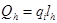
где qi - величина впитывания воды почвой на 1 м увлажнителя, м3/с, определяемая по специальным исследованиям или анализам;
lh - длина увлажнителя, м.
2.97. Трубчатые оросители следует рассчитывать на равномерную раздачу воды по длине оросителя. Ороситель по всей длине должен закладываться в почву с уклоном, параллельным пьезометрической линии напоров.
Расчетный расход трубчатого оросителя Qht, м3/с, надлежит рассчитывать по формуле
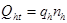
где qh - расход увлажнителя, м3/с;
nh - число одновременно работающих увлажнителей, питаемых от рассчитываемого оросителя.
2.98. Системы лиманного орошения следует проектировать в районах неустойчивого увлажнения, когда использование местного поверхностного стока для регулярного орошения по природным условиям технически невозможно или экономически нецелесообразно. Лиманное орошение необходимо предусматривать в малонаселенных районах при использовании степных участков, речных долин, пойм рек, замкнутых котловин, склонов под естественные сенокосы, кормовые (многолетние и однолетние травы, кукуруза и подсолнечник на силос, кормовая свекла), зерновые и зернобобовые культуры, с уклоном местности до 0,006, с хорошо одернованной поверхностью на незасоленных и слабозасоленных почвах.
2.99. В зависимости от водоисточника, способа регулирования и глубины затопления лиманы следует подразделять на виды согласно табл. 2.
Таблица 2
|
Виды лиманов |
||
|
по способу регулирования воды |
по глубине затопления |
|
|
Пойменные, затопляемые паводковыми водами рек |
Многоярусные с регулированием длительности затопления |
Мелководные Среднего затопления Глубоководные |
|
Проточные с регулированием длительности затопления |
Глубоководные |
|
|
Комбинированные |
Мелководные и глубоководные |
|
|
Затопляемые талыми водами, стекающими с вышерасположенных территорий |
Одноярусные |
- |
|
Многоярусные раздельного или последовательного затопления |
Мелководные и глубоководные |
|
|
Подпитываемые из каналов обводнительных или оросительных систем |
Многоярусные раздельного или последовательного затопления |
Мелководные |
2.100. По глубине наполнения лиманы подразделяются на:
мелководные глубиной затопления 15-40 см;
среднего затопления глубиной 40-70 см;
глубоководные глубиной затопления более 70 см.
2.101. При проектировании лиманов расчетную обеспеченность стока следует принимать:
для площадей лиманов 5000 га и более - на основании технико-экономических расчетов;
для районов северного Заволжья (Куйбышевская обл. и север Саратовской обл.) - 30-40 %;
для левобережья Средней Волги (область сыртов), северных и центральных областей Казахстана – 50 %;
для Прикаспийской низменности и Западного Казахстана - 60 %.
2.102. Площадь лимана нетто Аnt, га, определяется по формуле
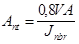
где V - объем стока расчетной обеспеченности с 1 км2, тыс. м3;
А - водосборная площадь, км2;
Jnbr - средневзвешенная норма лиманного орошения брутто, тыс. м3/га, определяемая по данным специальных исследований.
2.103. Поименные системы лиманного орошения следует применять в долинах рек или на широких выровненных участках поймы. Поименные лиманы следует заполнять водами речных паводков. Техническую схему лиманов необходимо выбирать, как правило, в зависимости от условий пропуска максимальных паводковых расходов реки: через территорию орошаемого массива, по отдельным трактам или в обход лиманов. Выбор оптимального варианта должен быть обоснован технико-экономическим расчетом.
2.104. Глубоководные лиманы необходимо проектировать, как правило, на поймах и подпойменных участках первой террасы. Лиманы среднего и мелкого затопления следует располагать на понижениях пойменных террас.
Мелководные лиманы на склонах следует устраивать на выровненных участках, пригодных для лиманного орошения по почвенным условиям с уклоном местности не более 0,002.
2.105. При уклонах поверхности менее 0,001 необходимо предусматривать одноярусные лиманы, при уклонах более 0,001 следует устраивать многоярусные лиманы; число ярусов, их размеры и конфигурация должны устанавливаться из условия рационального использования весеннего стока, наименьшего объема работ. При этом должны быть обеспечены равномерное увлажнение лиманов и нормальные условия проведения сельскохозяйственных работ.
2.106. Расстояние между дамбами (ширину яруса лимана) L необходимо определять по формуле
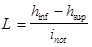
где hinf - слой воды у нижней дамбы, м;
hsup - слой воды у верхней дамбы, принимается не менее 0,05 м;
inot - средний уклон местности.
Слой воды у нижней дамбы назначается из условия обеспечения равномерного увлажнения почвы. При этом средняя глубина затопления лимана должна быть равна норме лиманного орошения, выраженной слоем воды в метрах.
2.107. При проектировании многоярусных лиманов верхний ярус допускается предусматривать глубоководным распределительным для обеспечения подачи воды во все нижележащие ярусы.
2.108. Дамбы лиманов должны быть постоянными и не препятствовать механизированным сельскохозяйственным работам. Коэффициент заложения откосов дамб должен быть 5-6, строительная высота дамб - не более 1 м, превышение гребня дамб над максимальным уровнем воды в лимане - не менее 0,3 м. Ширину дамб поверху следует принимать, как правило, 0,5-1,5 м.
2.109. Перепуск воды из яруса в ярус должен производиться через водовыпуски, расположенные в наиболее низких местах лиманов или по водообходам, создаваемым путем устройства системы земляных распределительных и направляющих дамб. Концы дамб необходимо доводить до отметки земли, соответствующей расчетному уровню воды в лимане.
2.110. При недостаточной обеспеченности площади лиманного орошения стоком с ее водосбора необходимо предусматривать устройство водосборных валов, направляющих сток в лиман с примыкающих водосборных площадей, а также подпитывание лиманов из оросительных и обводнительных каналов.
2.111. При проектировании лиманов с подпитыванием из оросительных и обводнительных каналов следует рассчитывать величину подаваемого в лиманы расхода воды.
Удельный расход q, л/с на 1 га, определяется по формуле
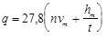
где n - коэффициент, равный 0,68.
vm - средняя скорость впитывания, определяемая по методу заливаемых площадок, см/ч;
hm - средний слой затопления, см;
t - продолжительность подачи воды, ч.
2.112. Необходимо предусматривать регулирование глубины и продолжительности затопления, в том числе в отдельных понижениях при помощи сети водосборно-сбросных каналов.
Водосборно-сбросная сеть каналов в плане должна проходить по пониженным местам и иметь минимальную протяженность.
2.113. Размеры поперечных сечений водосборных каналов внутри лиманов, предназначенных для отвода воды с пониженных участков, допускается принимать без расчета: ширину по дну - 1 м, коэффициент заложения откосов - 4, глубину - 0,5 м. Превышение бровки каналов над расчетным уровнем воды в канале должно быть не менее 0,2 м.
Расчетный расход водосборно-сбросных каналов следует устанавливать в зависимости от объема воды, подлежащего сбросу после влагозарядки, и допускаемой продолжительности стояния воды в лимане.
2.114. Оросительные системы, предназначенные для утилизации подготовленных к орошению стоков животноводческих комплексов, должны проектироваться из условия приема всего годового объема стоков для полива в теплый период года. Круглогодовое орошение допускается предусматривать в условиях отсутствия сезонного промерзания почв.
2.115. Для использования стоков на орошение необходима их предварительная подготовка, которая должна обеспечить их дегельминтизацию и карантинирование, влажность не менее 98 %, размер твердых фракций в стоках должен быть не более 10 мм.
При поливе дождевальными машинами с гидравлическим приводом влажность стоков должна быть не менее 99 %, размер твердых фракций - не более 2,5 мм.
2.116. Минимальную требуемую площадь оросительной системы для использования стоков необходимо рассчитывать по содержанию годового количества вносимых со стоками биогенных элементов (азота, фосфора, калия) с учетом выноса питательных веществ урожаем и их исходного содержания в почве.
2.117. При размещении оросительных систем с использованием стоков необходимо предусматривать водоохранные и санитарно-защитные зоны в соответствии с требованиями органов государственного надзора.
2.118. При обосновании способов орошения и техники полива стоками в зависимости от рельефных и почвенных условий необходимо руководствоваться требованиями, предъявляемыми к оросительным системам с поливом водой, а также учитывать химический и фракционный составы стоков, время проведения поливов (поливы вегетационные или круглогодовые), состав выращиваемых сельскохозяйственных культур.
2.119. При использовании стоков на орошение в зоне достаточного и избыточного увлажнения коэффициент фильтрации подпахотных слоев почв должен быть более 0,3 м/сут, при меньшем его значении следует проводить глубокое рыхление.
2.120. Расчет оросительных норм при поливе стоками следует выполнять по дефициту влаги для сельскохозяйственных культур на год расчетной обеспеченности. При этом должна быть определена годовая норма внесения подготовленных стоков по балансу вносимых в почву и выносимых с планируемым урожаем питательных веществ.
2.121. Концентрация общего азота в поливной воде при использовании стоков должна устанавливаться в зависимости от климатических условий и состава возделываемых культур.
В зоне достаточного и избыточного увлажнения в вегетационный период концентрация общего азота в поливной воде не должна превышать, г/л:
1,5 - для многолетних злаковых трав второго и последующих лет произрастания;
1,0 - для многолетних злаковых трав спустя два месяца после всходов, а также для люцерны, клевера, смеси однолетних трав без бобовых компонентов;
0,8 - для кукурузы и зерновых;
0,5 - для корнеплодов и подсолнечника.
В зоне недостаточного увлажнения концентрацию азота допускается применять в два раза меньше или использовать данные специальных исследований.
2.122. Оросительная сеть для полива стоками должна быть, как правило, закрытой тупиковой. Для закрытой сети должны использоваться асбестоцементные, чугунные, железобетонные, пластмассовые трубы. Условия применения стальных труб следует принимать в соответствии с п. 2.171.
Конструкция оросительной сети должна обеспечивать промывку водой трубопроводов, арматуры на сети, дождевальной техники после каждого полива с использованием стоков.
2.123. Оросительные системы с использованием подготовленных сточных вод следует применять для орошения и удобрения земель, а также для доочистки сточных вод в естественных биологических условиях.
2.124. Для орошения следует использовать подготовленные хозяйственно-бытовые, производственные и смешанные сточные воды.
Пригодность сточных вод для орошения должна быть определена по химическим и физическим показателям с учетом почвенных условий проектируемого объекта и согласована с органами санитарно-эпидемиологической службы и ветеринарного надзора.
2.125. Оросительные системы с использованием сточных вод следует проектировать:
с круглогодовым приемом сточных вод в пруды-накопители и с последующим использованием их для орошения только в вегетационный период;
с круглогодовым приемом и круглогодовым поливом;
с частичным, в том числе сезонным, приемом и с использованием сточных вод для орошения.
В составе оросительных систем кроме сооружений, указанных в п. 1.1, при необходимости следует предусматривать пруды-накопители, регулирующие емкости, средства контроля за состоянием окружающей природной среды.
Вариант конструкции оросительной системы в зависимости от технологии использования сточных вод должен быть обоснован технико-экономическими расчетами.
2.126. При размещении оросительных систем с использованием сточных вод необходимо соблюдать санитарно-гигиенические и ветеринарные требования.
Между границами оросительной системы, жилыми и производственными зданиями, автомобильными и железными дорогами необходимо предусматривать санитарно-защитные и водоохранные зоны.
2.127. Расчетную оросительную норму необходимо определять в зависимости от дефицита влаги для сельскохозяйственных культур года расчетной обеспеченности, а также в зависимости от химического состава сточных вод с учетом баланса внесения и выноса биогенных веществ урожаем.
2.128. При обосновании способов орошения и техники полива сточными ворами надлежит руководствоваться требованиями, предъявляемыми к оросительным системам с поливом водой.
2.129. На орошаемых сточными водами землях следует предусматривать возделывание кормовых (ведущая культура - многолетние травы), зернофуражных, технических культур.
2.130. Водосборно-сбросную сеть каналов следует проектировать для организованного сбора и отвода с территории оросительной системы: поверхностного стока (ливневых и талых вод);
воды из распределителей и оросителей при технологических сбросах и опорожнении, а также при авариях;
сбросной воды с полей при поверхностном поливе и дождевании.
2.131. Водосборно-сбросная сеть должна:
обеспечивать своевременный отвод воды в водоприемник без нарушения режима работы сооружений оросительной системы и затопления орошаемых земель;
обеспечивать, как правило, двухсторонний прием сбросной воды;
иметь минимальные протяженность и число пересечений с оросительной и коллекторно-дренажной сетью, коммуникациями.
2.132. Водосборно-сбросная сеть должна быть расположена по границам поливных участков, полей севооборотов, как правило, по пониженным местам с максимальным использованием тальвегов, лощин, оврагов.
При использовании тальвегов, лощин, оврагов в качестве водосбросных трактов следует проверять их пропускную способность и возможность размыва. При плановом размещении сбросной сети надлежит предусматривать ее совмещение с кюветами проектируемой дорожной сети оросительной системы.
2.133. При наличии на оросительной системе коллекторно-дренажной сети необходимо рассматривать возможность ее использования в качестве сбросной сети.
2.134. Водосборную сеть надлежит проектировать открытой, как правило, в земляном русле. Сбросную сеть следует проектировать открытой (каналы, лотки) и закрытой (трубопроводы).
2.135. За расчетный расход воды в каналах водосборно-сбросной сети (в зависимости от расположения и порядка канала) должен приниматься наибольший из расходов поверхностного стока с территории орошаемого участка или поверхностного сброса при поливах.
2.136. За расчетный расход поверхностного стока от ливневых и талых вод надлежит принимать паводковые расходы 10 %-ной обеспеченности.
2.137. Расчетный расход водосборных каналов, предусматриваемых для приема сбросных вод с оросительной сети при поливах не должен превышать 30 % суммы расчетных расходов одновременно действующих оросительных каналов, сбрасывающих в него воду.
Для опорожнения открытых и закрытых распределителей и оросителей, а также для промывки трубопроводов закрытой оросительной сети следует предусматривать концевые сбросные каналы.
2.138. Расчетный расход концевого сбросного канала следует принимать в пределах 25-50% расчетного расхода воды оросительного канала (трубопровода) на концевом участке.
Расчетный расход должен также обеспечивать создание транспортирующей скорости для удаления наносов из трубопровода.
2.139. При возможности опорожнения через оросительную сеть низшего порядка сбросная сеть для канала высшего порядка (трубопровода) не предусматривается. Расчетный сбросной расход при этом следует принимать равным расходу канала, по которому намечен сброс воды.
2.140. Коэффициент шероховатости каналов сбросной сети в земляном русле следует принимать согласно рекомендуемому приложению 14.
2.141. Уровень воды в водосборно-сбросном канале высшего порядка должен быть ниже уровня воды в канале низшего порядка на величину не менее 0,05 м.
Уровень воды в водосборных каналах при расчетных расходах должен быть на 0,15 - 0,20 м ниже поверхности земли.
2.142. Водоприемники сбросных вод, которыми могут служить естественные и искусственные водотоки и водоемы, должны обеспечивать отвод и аккумуляцию расчетных объемов сбросных вод без создания подпора уровней воды в водоотводящих каналах (трубопроводах).
2.143. Параметры и конструкции каналов оросительной сети должны назначаться исходя из условий обеспечения:
минимальных потерь воды на фильтрацию и сбросы;
минимальной площади отчуждения земель;
сохранности прилегающих земель;
комплексной механизации строительных работ;
минимальных эксплуатационных затрат.
2.144. Трассу канала следует выбирать в соответствии с требованиями п. 1.11. Проектировать каналы следует в выемке или полувыемке-полунасыпи. Устройство каналов в насыпи допускается при пересечении местных понижении рельефа и при необходимости самотечной подачи воды на орошаемую площадь.
2.145. При прохождении трассы канала по косогору его сечение следует принимать полностью в выемке.
Допускается устройство каналов на косогорах в полувыемке, при этом линия поверхности земли с низовой стороны косогора должна проходить через точку пересечения откоса канала с уровнем воды при расчетном расходе. В этом случае сопряжение дамбы с основанием следует принимать ступенчатым.
2.146. Поперечные сечения оросительных каналов следует принимать, как правило, трапецеидальной формы.
В зависимости от геологических условий и способа производства работ допускается применять сечения полигональной, параболической или прямоугольной формы.
2.147. Каналы оросительных систем необходимо проектировать с применением противофильтрационных покрытий. Устройство каналов без противофильтрационных покрытий допускается при обеспечении коэффициента полезного действия канала в соответствии с п. 2.22. Тип противофильтрационного покрытия следует назначать на основании сравнения технико-экономических показателей вариантов.
2.148. Ширину дамб каналов по верху или ширину берм необходимо принимать из условий производства работ и удобства эксплуатации.
Превышения гребней дамб и бровок берм каналов над максимальным уровнем воды следует назначать в соответствии с табл. 3. Максимальный уровень следует принимать из условия принятой схемы автоматизированного водораспределения.
При расходе воды в канале свыше 100 м3/с превышение гребней дамб должно определяться в соответствии со СНиП 2.06.05-84.
Таблица 3
|
Превышения гребней дамб и бровок берм канала, см |
||
|
без облицовки и с грунтово-пленочным экраном |
с облицовкой |
|
|
До 1 |
20 |
15 |
|
Св. 1 до 10 |
30 |
20 |
|
Св. 10 до 30 |
40 |
30 |
|
Св. 30 до 50 |
50 |
35 |
|
Св. 50 до 100 |
60 |
40 |
2.149. При глубине каналов до 5 м заложение откосов следует назначать по табл. 1 рекомендуемого приложения 15. Заложение откосов облицованных каналов необходимо принимать с учетом конструкции облицовки и устойчивости откосов земляного русла.
Заложение откосов каналов, проходящих в земляном русле или с грунтово-пленочным экраном, при глубине каналов более 5 м, необходимо принимать на основании опыта строительства и эксплуатации существующих каналов, находящихся в аналогичных условиях; при отсутствии аналогов заложения откосов каналов с глубиной более 5 м принимаются по расчету.
Заложение откосов дамб при высоте их до 3 м принимается по табл. 2 рекомендуемого приложения 15. Заложение откосов дамб при напоре воды более 3 м надлежит принимать в соответствии со СНиП 2.06.05-84.
2.150. Расстояние между подошвой откоса дамбы и бровкой выработки грунта резерва надлежит устанавливать в зависимости от способа производства работ и устойчивости откоса дамбы, но не менее 1,5 м при глубине выработки грунта 0,5 м и 3 м при глубине выработки более 0,5 м.
Расстояние от бровки выемки до подошвы отвала следует принимать при глубине выемки до 2,5 м – 3 м; от 2,5 до 5 м - 5 м; более 5 м - по расчету устойчивости откоса.
Расстояние от бровки выемки до подошвы отвала допускается увеличивать при соответствующем обосновании в зависимости от условий производства работ.
Откосы и дно выработок вдоль каналов должны быть спланированы и покрыты плодородным слоем почвы.
2.151. В каналах, проходящих в глубоких (более 5 м) выемках, необходимо выше максимального уровня воды через каждые 5 м по высоте предусматривать бермы. Первую берму следует устраивать на высоте h + Dh от дна канала, где h - максимальная глубина воды в канале, a Dh - превышение бровки бермы над уровнем воды, принимаемое по табл. 3.
2.152. Радиус закругления канала необходимо назначать с учетом параметров канала (площади сечения, режима работы, типа противофильтрационного покрытия и т.п.).
Для каналов, проходящих в земляном русле, минимальное значение радиуса закругления r, м, следует принимать по формуле
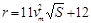
где vm - средняя скорость течения воды в канале, м/с;
S - площадь живого сечения, м2.
Для каналов с монолитными бетонными, сборными железобетонными и асфальтобетонными облицовками радиус закругления следует, как правило, определять по формуле
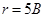
где В - ширина канала по урезу воды.
2.153. На магистральных каналах и крупных распределителях с расходом воды более 5 м3/с должны быть предусмотрены концевые сбросные сооружения. При возможности опорожнения канала через распределители низшего порядка сбросные сооружения допускается предусматривать только на этих распределителях.
2.154. На магистральных каналах и распределителях следует предусматривать аварийные водосбросные сооружения, устраиваемые в местах пересечений с балками, оврагами, местными понижениями, водоемами.
Величину аварийного расхода следует определять в зависимости от схемы водораспределения, уровня автоматизации технологических процессов, аккумулирующей способности распределительной сети, допускаемого времени ликвидации аварий.
2.155. Для защиты магистральных каналов, их ветвей и распределителей первого порядка, расположенных поперек склона, от размыва должны устраиваться нагорные каналы (или дамбы) и сооружения для пропуска дождевых и талых вод. Расчетный расход воды нагорных каналов следует определять в соответствии с п. 1.9.
2.156. Гидравлический расчет каналов в зависимости от принятой схемы водораспределения необходимо производить для установившегося (равномерного или неравномерного) или нестационарного режима движения воды в соответствии с п. 2.15 и рекомендуемым приложением 16.
2.157. Отношение ширины по дну каналов трапецеидальной формы к глубине их наполнения b следует принимать в зависимости от коэффициента заложения откосов m в пределах:
m............................................................ b
1,0........................................................ 0,8 - 3,0
1,5........................................................ 0,6 - 3,1
2,0........................................................ 0,5 - 3,4
2,5........................................................ 0,4 - 3,8
Для коэффициентов заложения откосов более 2,5 это отношение следует определять по расчету или по данным аналогов.
2.158. Уклон канала должен обеспечивать средние скорости воды в пределах
,
где vm - средняя скорость воды в канале, м/с;
v1 - допускаемая незаиляющая скорость воды, м/с;
v2 - допускаемая неразмывающая скорость воды. м/с.
2.159. Допускаемые неразмывающие скорости для каналов в земляном русле и с грунтово-пленочным экраном при расходах до 50 м3/с следует принимать в соответствии с обязательным приложением 17.
Допускаемые средние скорости для каналов с монолитными бетонными, сборными железобетонными и асфальтобетонными облицовками следует принимать по табл. 6 обязательного приложения 17.
Для каналов в земляном русле и с грунтово-пленочными экранами с расходом более 50 м3/с допускаемые средние скорости необходимо принимать на основании специальных исследований или по аналогам.
2.160. Для связных грунтов, содержащих равномерно залегающие включения гальки и гравия в количестве более 20 % (по объему), допускаемая неразмывающая скорость должна определяться как для несвязных грунтов исходя из преобладающих размеров включений. При меньшем объеме включений и при слоистом их расположении допускаемую скорость следует определять как для основного грунта.
Для каналов водосборно-сбросной сети величина допускаемой скорости может быть увеличена на 10 %, а для периодически действующих сбросных каналов на 20 % относительно допускаемой неразмывающей скорости для каналов оросительной сети.
2.161. Проверка незаиляемости канала должна осуществляться па транспортирующей способности канала или по незаиляющей скорости воды в канале, согласно рекомендуемому приложению 18.
2.162. При скоростях воды в каналах более 2 м/с следует, как правило, ограничивать доступ в них абразивных наносов с диаметром частиц более 0,25 мм.
2.163. Расчет фильтрационных потерь воды из каналов следует определять в соответствии с рекомендуемым приложением 19.
2.164. Фильтрационные потери воды через дамбы надлежит определять, как правило, для каналов с расходом свыше 10 м3/с, проходящих в насыпи или полунасыпи при подпорной фильтрации. Фильтрационные расчеты дамб следует проводить как для низконапорных плотин из грунтовых материалов согласно СНиП 2.06.05-84.
2.165. При проектировании трубчатой сети в плане необходимо учитывать требования п. 1.11. Как правило, трубчатую сеть следует предусматривать тупиковой. Применение кольцевой сети должно быть обосновано. Коэффициент полезного действия трубопровода принимается не менее 0,98.
2.166. При уклонах местности более 0,003 для производства поверхностных поливов необходимо применять самотечную трубчатую сеть. Подача воды насосами в таких условиях должна быть обоснована.
2.167. Трубчатую сеть следует рассчитывать на пропуск расчетного расхода с учетом материала труб и местных потерь напора.
2.168. За рабочее давление в трубчатой сети следует принимать наибольшее возможное по условиям эксплуатации внутреннее давление, возникающее при установившемся режиме движения воды в наиболее неблагоприятных условиях подключения дождевальных машин, установок, аппаратов.
2.169. Трубопроводы необходимо проверять на возможность возникновения гидравлического удара. При необходимости следует предусматривать установку противоударной арматуры (обратные клапаны, гидравлические затворы - обратные клапаны, водонапорные колонны). Выбор типа арматуры и места ее установки определяется расчетом. За внутреннее давление воды при гидравлическом ударе следует принимать максимальное давление, возникающее при нестационарном режиме движения воды с учетом действия противоударной арматуры.
2.170. Расчет трубопроводов на прочность необходимо выполнять при следующих сочетаниях нагрузок:
давления грунта и транспорта на опорожненный трубопровод;
рабочего давления воды в трубопроводе, давления грунта и транспорта;
давления воды в трубопроводе при гидравлическом ударе (или вакууме) и давления грунта.
на участках с расчетным внутренним давлением более 1,5 МПа (15 кгс/см2);
при устройстве переходов под железными и автомобильными дорогами, через водные преграды и овраги;
при прокладке трубопроводов по автодорожным и городским мостам, по опорам эстакад и в туннелях.
Стальные трубы следует использовать экономичных сортаментов, со стенкой, толщину которой необходимо принимать по расчету.
2.172. Трубопроводы следует устраивать подземными. Глубину заложения трубопроводов, считая от верха трубы, необходимо принимать не более 2 м.
При прокладке трубопроводов в зоне отрицательных температур материал труб и элементов стыковых соединений должен быть морозостойким.
2.173. Трубопроводы, испытывающие воздействие наземного транспорта, надлежит укладывать на глубину не менее 1 м.
2.174. Укладку трубопроводов следует предусматривать на грунт ненарушенной структуры. При этом дно траншеи должно быть предварительно выровнено или спрофилировано. При прокладке трубопроводов в скальных грунтах необходимо предусматривать выравнивание основания грунтом без твердых включений и - уплотнений.
Толщина слоя уплотненного грунта должна быть не менее 10 см.
При проектировании подземных трубопроводов следует предусматривать послойное уплотнение грунта засыпки между стенками трубы и траншеи.
2.175. Трубчатая оросительная сеть должна быть оборудована:
гидрантами-водовыпусками для подключения поливной или дождевальной техники;
поворотными затворами (задвижками), устанавливаемыми в начале каждого оросительного трубопровода;
поворотными затворами (задвижками), устанавливаемыми на ответвлениях, через которые предусматривается сброс воды при опорожнении ремонтных участков;
вантузами для удаления воздуха, которые устанавливаются в повышенных переломных точках профиля и в концевых или начальных точках оросительных трубопроводов (в зависимости от рельефа местности);
противоударной арматурой и клапанами для спуска и выпуска воздуха;
предохранительными сбросными устройствами, устанавливаемыми в концевых точках распределительных (оросительных) трубопроводов, предохраняющих от повышения давления в сети вследствие сокращения водоотбора;
регуляторами давления.
2.176. На трубопроводах диаметром 500 мм и более при технико-экономическом обосновании допускается устанавливать затворы на один типоразмер меньше.
2.177. При жесткой установке арматуры на сварных трубопроводах и в условиях возможной просадки грунта по трассе трубопровода арматуру необходимо устанавливать с монтажными компенсаторами (вставками).
На зимний период трубопроводы следует опорожнять. Опорожнение, как правило, следует предусматривать самотечным. Уклон трубопроводов к месту опорожнения должен быть не менее 0,001. Допускается опорожнение трубопроводов с помощью насосов при невозможности устройства самоточного опорожнения.
2.178. При проектировании стальных и железобетонных трубопроводов необходимо разрабатывать мероприятия по их защите от почвенной коррозии и коррозии, вызываемой блуждающими токами. Выбор методов защиты должен быть обоснован данными о коррозионных свойствах грунта и о возможности коррозии, вызываемой блуждающими токами.
2.179. Защиту наружной поверхности стальных трубопроводов от коррозии следует предусматривать в соответствии с ГОСТ 9.015-74.
Для защиты от коррозии внутренней поверхности стальных труб независимо от коррозионной активности транспортируемой воды необходимо предусматривать изоляционные покрытия: цементно-песчаные, цементно-полимерные, лакокрасочные, цинковые и другие, разрешенные для применения в хозяйственно-питьевом водоснабжении.
2.180. Защиту от воздействия сульфат-ионов на бетон железобетонных труб, включая трубы со стальным сердечником, а также от коррозии, вызываемой блуждающими токами, следует осуществлять в соответствии со СНиП 2.03.11-85.
Электрохимическую защиту трубопроводов из железобетонных труб со стальным сердечником, имеющих наружный слой бетона проницаемостью ниже нормальной с допускаемой шириной раскрытия трещин при расчетных нагрузках 0,2 мм, необходимо предусматривать при концентрации хлор-ионов в грунтах более 150 мг/л, при нормальной проницаемости бетона и допускаемой ширине раскрытия трещин 0,1 мм - более 300 мг/л.
2.181. Для железобетонных виброгидропрессованных труб с пропиткой модифицированным петролатумом в грунтах средней и сильной степени агрессивности, а также железобетонных труб со стальным сердечником, пропитанных модифицированным петролатумом в грунтах с содержанием хлор-ионов до 500 мг/л, электрохимическую защиту трубопроводов допускается не предусматривать.
2.182. При проектировании электрохимической защиты трубопровода из стальных и железобетонных труб всех типов необходимо предусматривать мероприятия, обеспечивающие непрерывную электрическую проводимость трубопроводов.
2.183. Катодную поляризацию железобетонных труб со стальным сердечником надлежит проектировать так, чтобы создаваемые на поверхности металла защитные поляризационные потенциалы были не ниже 0,65 В и не выше 1,2 В по медносульфатному электроду сравнения.
2.184. При электрохимической защите железобетонных труб со стальным сердечником с помощью протекторов величину поляризационного потенциала следует определять по отношению к медносульфатному электроду сравнения, установленному на поверхности трубы, а при защите с помощью катодных станций - по отношению к медносульфатному электроду, расположенному в грунте.
2.185. Оросительную сеть из лотков (лотковые каналы) необходимо предусматривать в случаях:
сложных топографических и геологических условиях;
на участках, где каналы должны проходить в насыпи;
на участках со скальными, сильно фильтрующими и просадочными грунтами;
на косогорных участках, подверженных оползневым явлениям.
Коэффициент полезного действия лоткового канала следует принимать не менее 0,95.
2.188. Лотковую сеть надлежит прокладывать, как правило, по наибольшему уклону местности. Выбор конструкций лотковых каналов принимается на основе сравнения технико-экономических показателей вариантов с учетом топографических, геологических и климатических условий.
2.187. Сопряжение лотков с различной глубиной следует предусматривать путем совмещения дна смежных лотков. Подошвы стоек лотковых опор должны быть расположены на глубине не менее глубины промерзания грунтов основания.
2.188. Глубину лотка для каждого участка канала следует назначать из условия превышения бортов лотка над максимальным горизонтом воды не менее чем на 10 см.
При использовании на лотковой сети автоматических регуляторов уровня глубина лотка Hl, см, должна удовлетворять условию
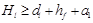
где dl - глубина наполнения лотка при пропуске расчетного расхода, см;
hf - гидравлические потери в автоматическом регуляторе при пропуске расчетного расхода, см;
а1 - превышение борта лотка над максимальным уровнем воды, принимается равным 5 см.
2.189. Гидравлический расчет лотковых каналов следует проводить по формулам равномерного, неравномерного и нестационарного движения потока в соответствии с рекомендуемым приложением 16.
2.190. Максимальная скорость течения воды в лотковых каналах не должна превышать 6 м/с. Минимальная скорость должна назначаться из условия обеспечения транспортирования наносов.
2.191. Для предотвращения непроизводительных сбросов воды из каналов следует предусматривать аккумулирующие емкости.
Гидротехнические сооружения должны оборудоваться регуляторами автоматического действия.
На автоматизированных гидротехнических сооружениях следует предусматривать гидравлические перепады, обеспечивающие работоспособность автоматических регуляторов.
Головные водозаборные узлы, водовыделы в хозяйства и каналы сбросной сети необходимо оборудовать средствами водоучета.
2.192. Дренаж на орошаемых землях должен обеспечивать отвод избытка солей из корнеобитаемого слоя почв, а также поддерживать уровень подземных вод, исключающий возможность вторичного засоления и заболачивания почв.
2.193. Необходимость устройства дренажа следует устанавливать на основе анализа водно-солевого режима почв объекта мелиорации и прилегающей территории в существующих и проектных условиях с учетом биологических особенностей сельскохозяйственных культур и требований охраны окружающей природной среды. При составлении прогнозов водно-солевого режима следует использовать аналитические методы расчета, аналоговое и математическое моделирование.
2.194. Дренаж в комплексе с мелиоративными и агромелиоративными мероприятиями должен обеспечивать уровень содержания подвижных солей в корнеобитаемом слое засоленных почв на уровне, не превышающем показателей, приведенных в рекомендуемом приложении 20.
2.195. Допускаемая (критическая) глубина залегания подземных вод, обеспечивающая оптимальный водно-солевой режим почв, должна устанавливаться для каждой природно-климатической зоны на основании специальных исследований, имеющегося опыта эксплуатации мелиоративных систем и прогноза водно-солевого режима почв.
2.196. На площадях нового орошения ввод земель в сельскохозяйственное освоение должен предусматриваться после окончания строительства постоянного дренажа, если по прогнозу водно-солевого режима потребность в дренаже возникает в период до 10 лет от начала освоения. При сроке подъема грунтовых вод более 10 лет освоение земель должно опережать строительство дренажа.
2.197. При проектировании дренажа необходимо предусматривать использование дренажных вод на орошение, промывки и другие нужды. Невозможность или нецелесообразность их использования должна быть обоснована.
2.198. При проектировании дренажа должны учитываться режим орошения, техника полива, плановое расположение оросительной сети, рельеф, агротехника сельскохозяйственных культур.
2.199. В зависимости от природных условий территории, нуждающейся в дренировании, на основании технико-экономических расчетов необходимо предусматривать дренаж:
систематический - дрены или скважины вертикального дренажа расположены равномерно на орошаемых землях;
выборочный - дрены или скважины приурочены к отдельным участкам орошаемых земель с неудовлетворительным мелиоративным состоянием;
линейный - дрены или скважины расположены по фронту питания подземных вод.
2.200. Тип дренажа на орошаемых землях (горизонтальный, вертикальный или комбинированный) выбирается исходя из природных и хозяйственных условий на основании технико-экономического сравнения вариантов. Основным типом является горизонтальный дренаж, вертикальный дренаж следует применять при дренировании грунтов проводимостью более 100 м2/сут и в случае, когда слабопроницаемые грунты подстилаются пластами с напорными водами.
Комбинированный дренаж следует предусматривать, как правило, при двухслойном или многослойном строении водоносного пласта, когда верхний слабопроницаемый слой мощностью до 15м подстилается водонапорным пластом мощностью не более 15 м.
2.201. Дренаж на орошаемых землях на весь период эксплуатации надлежит проектировать постоянным (горизонтальным, вертикальным или комбинированным). Для проведения капитальных промывок постоянный дренаж при необходимости может дополняться временным открытым.
2.202. Для повышения эффективности дренажа при промывках на слабопроницаемых почвах следует предусматривать их глубокое рыхление и внесение мелиорантов для оструктуривания почв.
2.203. При проектировании дренажа на засоленных или склонных к засолению землях необходимо предусматривать промывной режим орошения. Интенсивность питания подземных вод следует определять на основании прогноза водно-солевого режима почв мелиорируемой территории и использования опыта эксплуатации существующих дренажных систем на объектах-аналогах.
2.204. Постоянные горизонтальные дрены необходимо проектировать закрытыми из труб с водоприемными отверстиями и защитным фильтром или из пористых труб (трубофильтров).
Коллекторы для приема воды из дрен и отвода ее за пределы мелиорируемой территории следует проектировать как закрытыми, так и открытыми, при этом внутрихозяйственные коллекторы должны быть, как правило, закрытыми. Коллекторы, проходящие через населенные пункты, необходимо проектировать только закрытыми.
2.205. Для закрытого горизонтального дренажа следует применять безнапорные неметаллические трубы, которые должны выдерживать давление грунта, временную нагрузку от сельскохозяйственных машин и быть стойкими к воздействию агрессивной среды.
2.206. Параметры постоянного горизонтального, вертикального и комбинированного дренажа следует рассчитывать на среднегодовую нагрузку периода постоянной эксплуатации мелиоративной системы.
Параметры временного дренажа необходимо определять исходя из обеспечения заданной скорости отвода промывных вод в период капитальных промывок с учетом работы постоянного дренажа.
2.207. Глубину заложения дрен и расстояние между ними следует рассчитывать в зависимости от гидрогеологических условий объекта и требуемого водно-солевого режима по формулам установившегося режима фильтрации с проверкой динамики подземных вод в характерные периоды (вегетационный, предпосевной и др.) по формулам неустановившегося режима.
2.208. В сложной гидрогеологической и почвенно-мелиоративной обстановке, при отсутствии аналогов для обоснования параметров дренажа необходимо предусматривать исследования на моделях или на опытно-производственных участках с типичными природно-хозяйственными условиями.
2.209. Глубина заложения дрен с учетом технологии производства работ, как правило, не должна превышать 4 м. Длину дрен следует принимать 400-1000 м. Диаметр дренажных труб следует определять гидравлическим расчетом. При пропуске максимального расхода допускается напорное движение воды в дренах.
2.210. Уклоны дрен и закрытых коллекторов следует принимать в соответствии с п. 3.86. Максимальные уклоны открытых коллекторов необходимо устанавливать исходя из допускаемых неразмывающих скоростей, минимальные - в соответствии с п. 3.69.
2.211. Сопряжение закрытых дрен с закрытыми и открытыми коллекторами должно обеспечивать отвод дренажных вод без образования подпоров в дренах.
2.212. Смотровые колодцы следует устанавливать в истоках дрен, в местах поворота дрен и коллекторов, изменения уклона и диаметра труб, впадения дрен в закрытые коллекторы, а также в местах, необходимых для промывки дренажных линий.
2.213. Плановое расположение скважин вертикального дренажа необходимо увязывать с геологическим и гидрогеологическим строением, рельефом, границами мелиорируемого участка. Скважины следует размещать по возможности вблизи существующих линий электропередач и трансформаторных подстанций.
2.214. При выборе конструкций скважин вертикального дренажа необходимо учитывать гидрогеологические условия, требуемое понижение уровня грунтовых вод, дебит, технологию бурения и параметры насосно-силового оборудования. При проектировании скважин следует предусматривать, как правило, применение неметаллических труб.
2.215. Диаметр бурения скважин вертикального дренажа необходимо принимать не менее 600 мм. Глубина скважины, определяемая глубиной залегания и мощностью водосодержащих грунтов, не должна превышать 100 м. Длину отстойника следует принимать не более 1 м.
2.216. Длину фильтра необходимо принимать с учетом мощности водоносного пласте. Если мощность водоносного пласта менее 10м, то длина фильтра принимается равной его мощности. При мощности водоносного пласта более 10 м длину фильтра следует принимать 0,7-0,8 его мощности, но не более 25 м. Скважность фильтра должна составлять 25-30 %.
2.217. Диаметр фильтрового каркаса следует подбирать из условия пропуска максимального расхода и обеспечения свободного монтажа и демонтажа насосно-силового оборудования, размещения средств автоматики и телемеханики.
2.218. В прифильтровой зоне скважины необходимо предусматривать однослойную фильтровую обсыпку. В качестве обсыпки следует применять отсортированные гравийные смеси. Толщина обсыпки должна быть не менее 15 см.
2.219. При разработке проектной документации на строительство системы вертикального дренажа необходимо предусматривать, чтобы устройство линий электропередач производилось одновременно или опережало строительство скважин.
2.220. Проектный режим работы системы скважин вертикального дренажа должен быть разработан на основании данных мелиоративного состояния орошаемых земель в увязке с графиком нагрузок на энергосистеме, планами текущих и капитальных ремонтов скважин и насосно-силового оборудования.
2.221. Работа насосных агрегатов на скважинах вертикального дренажа должна быть автоматизирована по уровню воды в скважинах.
2.222. Вокруг скважин вертикального дренажа необходимо предусматривать ограждаемую площадку не более 150 м2, располагаемую на 0,3 м выше отметки окружающей территории.
2.223. Сопряжение скважин комбинированного дренажа с горизонтальными дренами должно обеспечивать свободный (без подпора) отвод дренажных вод. Подключение скважин к закрытым коллекторам и дренам должно быть закрытого типа.
3.1. При проектировании осушительных систем должны быть установлены причины избыточного увлажнения территории и величина каждой из составляющих водного баланса во время весеннего, летне-осеннего дождевого паводков и в посевной период.
3.2. В зависимости от причин избыточного увлажнения на осушаемом массиве необходимо предусматривать:
защиту от поступления поверхностных вод с окружающей водосборной площади;
защиту от затопления паводковыми водами водоемов и водотоков;
отвод поверхностного стока на осушаемом массиве;
перехват и понижение уровней подземных вод на осушаемом массиве;
защиту от подтопления фильтрационными водами из водоемов и водотоков.
3.3. Способы осушения и конструктивные решения осушительных систем должны обеспечивать создание на осушаемом массиве необходимого водно-воздушного режима почв с учетом изменения во времени приходных элементов водного баланса.
3.4. Защиту осушаемого массива от поступления поверхностных вод со склонов следует обеспечивать путем устройства нагорных каналов, регулирования стока вод со склонов в водоемах на тальвегах.
3.5. Защита территории от затопления паводковыми водами водотоков и водоемов должна обеспечиваться путем устройства оградительных дамб, зарегулирования паводковых вод в водоемах, увеличения пропускной способности русел рек, перераспределения стока между соседними водосборными площадями. При защите от затопления необходимо соблюдать также требования СНиП 2.06.15-85.
3.6. Защита территории от поступления фильтрационных вод из рек, озер, водохранилищ должна обеспечиваться путем устройства береговых дрен или линейной системы скважин вертикального дренажа с учетом требований СНиП 2.06.15-85.
3.7. Осушительную сеть необходимо проектировать в сочетании с мероприятиями по организации поверхностного стока и повышению фильтрационной способности грунтов.
3.8. Для перехвата подземных вод, поступающих с прилегающего водосбора, следует предусматривать устройство ловчих каналов или дрен, линейной системы скважин вертикального дренажа, учащение систематического горизонтального дренажа. Для понижения уровней подземных вод на осушаемом массиве необходимо применять, как правило, закрытую осушительную сеть.
3.9. Тип осушительных систем с самотечным отводом воды или с ее откачкой насосами должен выбираться в зависимости от требований охраны окружающей природной среды и гидрологического режима водоприемника.
3.10. Обвалование осушаемого массива оградительными дамбами (устройство польдеров) необходимо применять:
на приморских, затапливаемых приливом или нагоном волны равнинах;
в поймах рек, подверженных затоплению весенними и летне-осенними поводками на сроки, превышающие допускаемые для данного вида сельскохозяйственного использования земель;
на приозерных заболоченных низменностях и на затапливаемых территориях, примыкающих к водохранилищам, для ликвидации зон мелководья.
3.11. Осушительные системы без устройства оградительных дамб с откачкой воды насосами следует применять:
на безуклонных территориях, подтапливаемых водами морей, рек, озер, водохранилищ;
при осушении замкнутых впадин во избежание строительства глубоких проводящих каналов;
на участках вдоль железных и автомобильных дорог при экономической нецелесообразности переустройства существующих водопропускных сооружений.
3.12. Для осушения сельскохозяйственных земель следует применять горизонтальный дренаж. Вертикальный дренаж допускается применять при осушении территории, сложенной однородными песками, торфяниками любой мощности, супесями и легкими суглинками мощностью до 2 м, которые подстилаются водоносными пластами с проводимостью более 150 м2/сут.
Линейную систему вертикального дренажа для защиты сельскохозяйственных угодий от подтопления фильтрационными водами рек, водохранилищ, озер или для перехвата поступающих на объект подземных вод следует применять при проводимости подстилающих пород не менее 300 м2/сут.
3.13. На осушительных системах с увлажнением за счет повышения уровня подземных вод должно обеспечиваться равномерное по площади увлажнение почвы в допускаемые для сельскохозяйственных культур сроки.
Подпочвенное увлажнение применяется в грунтах с коэффициентом фильтрации более 0,5 м/сут, при уклонах поверхности до 0,005 с использованием мелиорируемых земель под полевые севообороты и сенокосы.
3.14. Осушительные системы с увлажнением (орошением) дождеванием допускается проектировать при любой водопроницаемости почв и уклонах поверхности, позволяющих применять дождевальную технику.
3.15. Водозабор из подземных водоносных пластов необходимо предусматривать только для увлажнения дождеванием. При осушении земель вертикальным дренажем в качестве водозаборных следует использовать скважины вертикального дренажа.
3.16. Режим увлажнения (орошения) сельскохозяйственных культур на осушаемых землях следует определять в соответствии с разд. 2.
3.17. При осушении земель водно-воздушный режим почвы (режим осушения) должен обеспечивать получение проектной урожайности. Режим осушения характеризуется следующими показателями: влажностью и аэрацией почвы, продолжительностью затопления почвы и подтопления ее верхних слоев в различные периоды вегетации, глубиной залегания подземных вод.
3.18. Осушительная система должна обеспечивать:
проходимость сельскохозяйственной техники при проведении полевых работ;
влажность почвы в корнеобитаемом спое в вегетационный период: для зерновых культур – 65-75 % полной влагоемкости; для овощей, картофеля и корнеплодов - 60-80 %; для трав – 65-85 %;
норму осушения (оптимальную глубину залегания подземных вод) - в соответствии с табл. 4.
Допускается уточнять приведенные значения норм осушения на основании водно-балансовых расчетов.
Таблица 4
|
нормы осушения, см |
|||
|
период предпосевной обработки и уборки урожая |
первый месяц вегетации |
в среднем за вегетацию |
|
|
Полевые, кормовые, овощные севообороты |
40-60 |
- |
90-110 |
|
Пастбища |
- |
70-90 |
90-110 |
|
Сенокосы |
- |
40-60 |
60-80 |
|
Примечание. Меньшие значения норм осушения принимаются для песчаных и супесчаных почв, большие - для связных минеральных почв и торфяников. |
|||
3.19. Допускаемая продолжительность затопления осушаемых земель при использовании их в севооборотах без озимых культур устанавливается исходя из обеспечения оптимальных сроков сева.
Осушаемые земли в системе севооборотов с озимыми культурами не должны затапливаться водами весенних паводков.
3.20. Предельные сроки весеннего затопления луговых трав следует принимать по табл. 5. Допускается использовать данные региональных исследований.
Таблица 5
|
Предельные сроки затопления, сут |
|
|
Клевер красный, клевер белый, ежа сборная, овсяница красная |
10 |
|
Люцерна, клевер розовый |
15 |
|
Тимофеевка луговая, мятлик луговой, овсяница луговая, полевица белая |
30 |
|
Костер безостый, лисохвост луговой, бокмания обыкновенная, пырей ползучий |
45 |
|
Канареечник тростниковидный |
60 |
3.21. Отвод поверхностных вод с осушаемых земель в период летне-осенних дождей должен обеспечиваться в течение, сут:
0,5 - для зерновых культур;
0,8 - для овощей, силосных культур, корнеплодов;
1,0 - для многолетних трав.
3.22. Сроки отвода избыточной влаги из корнеобитаемого слоя в период летне-осенних дождей следует принимать по табл. 6. Допускается использовать данные региональных исследований.
Таблица 6
|
Максимальная продолжительность стояния уровней грунтовых вод, сут |
||
|
в пахотном слое |
в корнеобитаемом слое |
|
|
Полевые, кормовые, овощные севообороты, пастбища |
1,5 |
5 |
|
Сенокосы |
3 |
7 |
3.23. Регулирующая сеть должна обеспечивать отвод поверхностных вод и понижение уровня подземных вод на осушаемом массиве в следующие расчетные периоды:
от прохождения пика весеннего паводка до начала полевых работ;
от прохождения пика весеннего паводка до начала вегетации трав (для пастбищ и сенокосов);
в период выпадения летне-осенних дождей и уборки урожая.
3.24. Регулирующая сеть по принципу действия подразделяется на: закрытые дрены и открытые осушители, понижающие уровень подземных вод в требуемые сроки; закрытые и открытые собиратели, отводящие в расчетное время избыточные поверхностные воды.
Выбор конструкции регулирующей сети в конкретных природных условиях должен быть обоснован водно-балансовыми расчетами, опытом эксплуатации существующих осушительных систем или специальными исследованиями.
3.25. Глубину заложения закрытой и открытой регулирующей сети необходимо определять в зависимости от требуемой нормы осушения с учетом водопроницаемости грунтов по глубине, осадки и сработки торфа.
Минимальную глубину заложения закрытой и открытой регулирующей сети, как правило, следует принимать в минеральных грунтах 1,1 м, в торфяных (после осадки) - 1,3 м. Увеличение глубины заложения регулирующей сети более 1,5 м должно быть обосновано.
3.26. Расстояние между дренами, осушителями, открытыми и закрытыми собирателями, скважинами необходимо устанавливать для расчетных периодов в соответствии с п. 3.27 с учетом типа водного питания и изменения элементов водного баланса в процессе сельскохозяйственного использования осушаемых земель.
При расчете регулирующей сети допускается пользоваться формулами, приведенными в рекомендуемом приложении 21.
при использовании вод только с собственной водосборной площади - как при расчете сети в режиме осушения;
при использовании внешних источников - как при расчете сети в режимах осушения и увлажнения, причем из полученных значений расстояний принимается меньшее.
На осушительных системах с дождеванием расстояния между дренами следует определять как при расчете сети в режиме осушения.
3.28. Регулирующая сеть должна быть, как правило, закрытой. Закрытая регулирующая сеть является обязательным способом осушения земель под полевые и овощекормовые севообороты, технические культуры, сады, ягодники, пастбища.
3.29. Открытую сеть допускается применять:
для предварительного осушения массива в период строительства закрытого дренажа;
в грунтах с содержанием в верхнем метровом слое камня размером свыше 30 см в количестве 2 % и более; при осушении сенокосов;
при содержании закисного железа в грунтовых водах осушаемого массива более 14 мг/л;
в случаях, когда расстояние между каналами регулирующей сети по расчету составляет не менее 100 м;
при залегании на глубине менее 1 м скальных и других равных им по трудности разработки грунтов;
на первом этапе осушения - в соответствии с п. 3.33.
3.30. Регулирующую сеть следует располагать перпендикулярно основному направлению потока поверхностных вод (поперечная схема). При уклонах местности менее 0,006 допускается располагать закрытые дрены и открытые осушители вдоль уклона местности (продольная схема). Закрытые и открытые собиратели следует устраивать только по поперечной схеме.
3.31. Регулирующая сеть не должна пересекать дороги, подземные коммуникации, лесонасаждения. При пересечении с линиями электропередач и телефонными линиями расстояния до их опор следует принимать в соответствии с действующими правилами охранных зон.
3.32. Предварительное осушение открытой сетью каналов следует проектировать при необходимости улучшения условий проведения культур технических работ и строительства закрытого дренажа.
Каналы предварительного осушения следует проектировать в увязке с постоянной осушительной сетью. Как правило, каналы предварительного осушения не должны пересекать трасс закрытой осушительной сети.
на первом этапе следует проектировать осушение открытой сетью каналов до завершения основной осадки торфяной залежи, вытайки подземного льда, а также сводки древесно-кустарниковой растительности. На первом этапе необходимо предусматривать первичное окультуривание и сельскохозяйственное использование территории;
на втором этапе следует осуществлять реконструкцию сети путем проектирования на топографической основе, полученной после первого этапа, мероприятий, обеспечивающих наиболее эффективное использование осушаемых земель (строительство закрытого дренажа, оросительной сети, планировка поверхности и т.д.).
3.34. Материал труб для закрытой регулирующей сети необходимо принимать в соответствии с п. 2.205.
3.35. Минимальный диаметр труб для закрытой регулирующей сети необходимо принимать 50 мм. Уклоны дрен и закрытых собирателей при минимальном диаметре должны быть, как правило, 0,003 и более. Допускается увеличение диаметра дрен на безуклонных равнинах (при невозможности обеспечить минимально допускаемый уклон), в условиях притока подземных вод, при повышенном содержании в подземных водах закисного железа, на осушительных системах с подпочвенным увлажнением.
3.36. При минимальном диаметре длину дрен и закрытых собирателей следует принимать не более 250 м, а в мелкозернистых водонасыщенных песках и илах - не более 150 м. При осушении окраин массива длина дрен принимается не менее 50 м.
3.37. При проектировании закрытого дренажа на слабопроницаемых почвах необходимо предусматривать, как правило, устройство объемных фильтров (обсыпок) толщиной не менее 20 см. При проектировании закрытых собирателей объемный фильтр должен быть выполнен до подошвы пахотного горизонта.
3.38. В качестве материала объемного фильтра, как правило, необходимо использовать местные естественные или искусственные материалы: песчано-гравийную смесь, крупнозернистый песок с содержанием частиц диаметром более 0,5 мм не менее 40 % (по массе), гравий, щебень, шлак, измельченную древесно-кустарниковую растительность, опилки, керамзит, торф со степенью разложения не более 15 %, вынутый из дренажной траншеи и оструктуренный химическими мелиорантами грунт. Коэффициент фильтрации объемного фильтра должен быть не менее 1 м/сут.
3.39. Стыки и перфорацию дренажных труб следует защищать рулонными защитно-фильтрующими материалами на основе минеральных, синтетических или полимерных волокон (стеклохолст, полиэтилен-холст, полотно нетканое мелиоративное).
3.40. При осушении торфяников мощностью более 1,5 м, а также при закладке дренажа в оплывающих грунтах керамические дренажные трубы необходимо соединять муфтами с водоприемными отверстиями или укладывать трубы на сбиваемые между собой деревянные основания (стеллажи).
3.41. Подключение закрытой регулирующей сети к коллекторам следует проектировать впритык с использованием, как правило, соединительной арматуры или внахлестку. При подключении впритык дрены должны сопрягаться с коллекторами под углом 60-90°.
Подключение дрен к коллекторам диаметром 175 мм и более следует предусматривать через вспомогательные коллекторы меньшего диаметра, объединяющие ряд дрен.
3.42. Применение закрытой регулирующей сети из пластмассовых труб, укладываемых бестраншейным способом, допускается:
на минеральных почвах и предварительно осушенных торфяниках с коэффициентом фильтрации 0,1 м/сут и более;
на почвах с коэффициентом фильтрации менее 0,1 м/сут с заполнением дренажной щели фильтрующими материалами, обеспечивающими гидравлическую связь дрены с поверхностными водами;
при содержании валунов в верхнем метровом слое грунта не более 150 м3/га; валунов диаметрами 30 - 60 см - 120 м3/га, более 60 см - 30 м3/га;
при содержании пней не более 3%;
при содержании погребенной древесины диаметром более 10 см 1 % и менее.
3.43. При содержании в подземных водах осушаемой территории до 3 мг/л закисного железа мероприятия по защите закрытого дренажа от заиления железистыми соединениями допускается не предусматривать.
3.44. При содержании закисного железа в подземных водах осушаемой территории 3 - 8 мг/л необходимо предусматривать:
ловчие каналы для перехвата потока ожелезненных вод;
проектирование дренажных систем с прямолинейными закрытыми коллекторами одного порядка;
увеличение уклонов устьевых участков дрен на длине 6-10 м до 0,01 и более;
увеличение или обеспечение постоянства скоростей движения воды в коллекторе вниз по течению;
применение объемных органических фильтров из древесно-кустарниковой растительности.
3.45. При содержании закисного железа 8-14 мг/л дополнительно необходимо предусматривать одно из следующих мероприятий:
увеличение минимальных уклонов коллекторов до 0,003, дрен до 0,006;
увеличение диаметров дрен до 75-100 мм на минеральных и до 100-150 мм на торфяных почвах;
устройство дрен, впадающих в открытую проводящую сеть;
гидравлическую промывку закрытых коллекторов и дрен.
3.46. Расчетные расстояния между дренами необходимо уменьшить на 10% при содержании закисного железа в грунтовых водах 3 - 8 мг/л и на 20 % при содержании его 8-14 мг/л. При содержании закисного железа более 14 мг/л следует проектировать открытую сеть c последующей ее реконструкцией на закрытую сеть после уменьшения содержания в грунтовых водах закисного железа.
Допускается применение других способов защиты закрытого дренажа от заиления железистыми соединениями, обоснованных специальными исследованиями или опытом эксплуатации.
3.47. Проектирование открытой регулирующей сети в плане необходимо вести с учетом следующих основных требований:
каналы систематической регулирующей сети должны быть, как правило, параллельны между собой, увязаны с границами землепользования и полей севооборотов;
длина каналов должна быть 700-1500 м. Допускается уменьшение длины при осушении окраин массива;
сопряжение каналов регулирующей сети с проводящими каналами следует назначать под прямым или близким к нему углом;
при осушении затапливаемых речных пойм каналы следует располагать по направлению потока паводковых вод;
выборочную регулирующую сеть (тальвеговые каналы) необходимо проектировать по наиболее низким местам поверхности и минерального дна болота.
3.48. Параметры поперечных сечений каналов надлежит принимать конструктивно с учетом требований ОСТ 33-23-79.
Глубину каналов, проходящих по тальвегам, необходимо назначать 1-1,5 м.
3.49. Проектирование открытой регулирующей сети в вертикальной плоскости необходимо вести с учетом следующих требований:
уклон дна каналов должен быть не менее 0,0003 и, как правило, не более 0,0005 - для песчаных, 0,003 - для суглинистых и 0,005 - для глинистых грунтов;
дно регулирующих каналов, впадающих в гидравлически нерассчитываемые каналы (с расходом воды до 0,5м3/с), должно быть выше дна принимающего канала на 10 см, а дно регулирующих каналов, впадающих в гидравлически рассчитываемые каналы (с расходом воды более 0,5м3/с), допускается располагать ниже уровня меженных вод в них не более чем на 10 см.
3.50. При проектировании осушительной сети необходимо предусматривать следующие мероприятия:
планировку поверхности поля с засыпкой ям, карьеров, ликвидируемых каналов с сохранением или восстановлением гумусового слоя почвы, (устройство искусственных ложбин, колодцев-поглотителей, закрытых собирателей, поглотительных колонок на дренах, глубокое рыхление и кротование почв, сгущение дренажа;
складирование грунта при устройстве каналов на низовую сторону.
Разравнивание вынутого из каналов грунта необходимо выполнять слоем не более 15 см с устройством в понижениях рельефа прорезей в откосах (воронок) для сброса поверхностных вод.
3.51. Ликвидацию замкнутых понижений местности глубиной более 25 см необходимо производить путем их частичной засыпки и устройства ложбин для стока воды из понижения по естественному уклону. При этом нарушенный гумусовый слой почвы должен быть восстановлен. При плоском рельефе замкнутые понижения местности следует ликвидировать путем сочетания мероприятий по засыпке, нарезке ложбин, устройству колодцев-поглотителей, закрытых собирателей, поглотительных колонок на дренах.
3.52. При проектировании искусственных ложбин (должны соблюдаться следующие требования:
глубина ложбин должна быть 0,4-0,6 м;
заложение откосов ложбин следует принимать не менее 1:5 на сенокосах и 1:10 на пашне;
длина ложбин при безуклонном рельефе не должна превышать 400 м;
уклон ложбин следует принимать не менее 0,001;
гумусовый слой должен быть сохранен;
вдоль бровок ложбин необходимо проектировать закрытые дрены;
гидравлический расчет ложбин необходимо выполнять при расходе воды более 20 л/с и уклоне более 0,005. Если скорость воды превышает допускаемую на размыв, следует предусматривать другие мероприятия по ускорению поверхностного стока.
3.53. Колодцы-поглотители следует проектировать при водосборной площади замкнутого понижения 3 га и более. При меньшей площади и невозможности устройства искусственных ложбин необходимо предусматривать устройство закрытых собирателей или дрен с пунктирной засыпкой дренажной траншей до пахотного слоя фильтрующими материалами (поглотительные колонки), сгущение дренажа.
3.54. Глубокое рыхление следует применять на минеральных почвах с коэффициентом фильтрации подпахотных горизонтов менее 0,2 м/сут и отсутствии в зоне рыхления камней размером более 30 см. Рыхление необходимо выполнять на глубину 0,6-0,8 м, как правило, с внесением извести для нейтрализации кислотности почв в зоне рыхления и их оструктуривания. Допускается применение других оструктуривающих мелиорантов.
3.55. Кротование слабопроницаемых почв необходимо применять при отсутствии камней. Глубину кротовин следует принимать 0,5-0,7 м, расстояние между кротовинами - 1-1,5 м, диаметр - 5-7 см.
3.56. Кротование допускается применять при осушении болот без погребенной древесины при степени разложения торфа менее 45 % и мощности пласта торфа болев 0,8 м.
Диаметр кротовин на торфяниках должен быть 12-15 см, глубина заложения - 0,7-0,8 м, расстояние между кротовинами при закрытом дренаже - 6-10 м, при открытой сети - 8-12 м при их длине до 150 м с выходом в открытую сеть.
3.57. Кротование и глубокое рыхление почв следует предусматривать под углом 60-90° по отношению к регулирующей сети.
3.58. Щелевание следует проводить при предварительном осушении болот, в том числе с наличием погребенной древесины, при степени разложения торфа менее 45% и мощности торфяной залежи болев 1.2м.
Нарезку щелей следует предусматривать, как правило, по перекрестной схеме, щели-собиратели, имеющие выход в открытую сеть, необходимо нарезать перпендикулярно осушительным каналам через 100-150 м. Их длина должна быть не более 500 м. Параллельно открытой сети следует нарезать щели-осушители через 8-10 м. Глубина щелей – 1 м.
3.59. Открытую и закрытую проводящие сети при осушении минеральных почв необходимо размещать по наиболее низким отметкам поверхности, а при осушении болот - по наиболее низким отметкам минерального дна болота.
3.60. Проводящую сеть следует проектировать, как правило, прямолинейной с минимальным числом пересечений существующих и проектируемых дорог, подземных коммуникаций, линий электропередач. Пересечение каналов и закрытых коллекторов с различными коммуникациями должно быть под прямым или близким к нему углом. Протяженность каналов и закрытых коп-лекторов всех порядков должна быть минимальной.
3.61. Глубину проводящей сети следует устанавливать минимально допустимой зависимости от величины и условий пропуска расчетного расхода воды и глубины впадающей открытой и закрытой регулирующей сети. Строительную глубину проводящей сети, проходящей по болотам, следует принимать с учетом осадки и сработки торфа.
3.62. При подаче воды на увлажнение по каналам и закрытым коллекторам проводящей осушительной сети должен быть обеспечен требуемый режим осушения. Параметры каналов и закрытых коллекторов следует устанавливать гидравлическим расчетом на больший из расходов при работе сети в режиме осушения или увлажнения.
3.63. Расчет каналов проводящей сети и естественных водотоков, являющихся водоприемниками осушительных систем, следует выполнять в зависимости от характера использования сельскохозяйственных земель.
Расчетную обеспеченность расходов воды следует принимать на основании технико-экономического сравнения вариантов. При площади осушаемых земель до 2 тыс. га допускается проводить расчет проводящей сети на пропуск расходов 10%-ной обеспеченности при использовании земель под полевые севообороты, пастбища и сенокосы, 5%-ной обеспеченности - при использовании земель под овощные севообороты и многолетние насаждения.
3.64. Расчетными периодами являются: при использовании осушаемых земель под полевые севообороты с озимыми и многолетние насаждения - весенний и летне-осенний паводки; под овощные и полевые севообороты без озимых - предпосевной период и летне-осенний паводок; под пастбища и сенокосы - летне-осенний паводок; под все виды сельскохозяйственного использования земель - меженный период.
3.65. В случае, когда расчетным периодом является весенний паводок, расчет каналов следует выполнять из условия пропуска расчетных расходов воды без затопления осушаемых земель.
3.66. Расчет каналов на предпосевной период и летне-осенний паводок следует выполнять в увязке с работой регулирующей сети по созданию требуемого водно-воздушного режима почв с учетом своевременного освобождения ее от подпора.
3.67. Гидравлический расчет каналов следует проводить при расходах воды более 0,5 м3/с, а также при меньших расходах, когда уклон канала превышает 0,0005 для песчаных, 0,003 для суглинистых и 0,005 для глинистых грунтов.
3.68. Гидравлический расчет каналов необходимо выполнять по формулам равномерного движения воды для следующих створов: устье канала, выше впадения каждого гидравлически рассчитываемого канала, при переломе уклонов (для обоих уклонов), на участках с постоянными уклонами при изменении площади водосбора более чем на 20 %.
Уклон поверхности воды в каналах при пропуске максимального расчетного расхода должен быть близким уклону местности.
Расчет каналов следует выполнять согласно рекомендуемым приложениям 14, 15, 16 и обязательному приложению 17.
3.69. Уклон дна гидравлически нерассчитываемых каналов следует принимать, как правило, не менее 0,0003, при осушении безуклонных территорий - допускается 0,0002.
3.70. Параметры поперечных сечений каналов проводящей сети с расходом до 10 м3/с следует принимать согласно ОСТ 33-23-79. При расходе воды более 10 м3/с параметры поперечных сечений каналов следует определять расчетом в зависимости от геотехнических свойств грунтов и гидрогеологических условий.
3.71. Сопряжение в плане магистральных каналов с водоприемниками и проводящих каналов между собой необходимо назначать под углом менее 90° Водоприемник на участке сопряжения необходимо предохранять от заиления или размыва.
3.72. Сопряжение в вертикальной плоскости каналов между собой и водоприемниками следует проектировать по уровням воды с учетом следующих требований для каналов:
гидравлически рассчитываемых - горизонт в горизонт;
гидравлически нерассчитываемых (для дна) - не более чем на 10 см ниже меженного уровня в принимающем гидравлически рассчитываемом канале;
гидравлически нерассчитываемых - дно в дно.
3.73. Радиусы поворотов гидравлически нерассчитываемых каналов должны быть не менее 20 м, гидравлически рассчитываемых с расходом до 5 м3/с - не менее 5В, где В - ширина канала по урезу воды при максимальном расчетном расходе воды.
3.74. Для закрытой проводящей сети следует применять керамические, пластмассовые, асбестоцементные и другие безнапорные трубы, отвечающие требованиям п. 2.205.
3.75. При проектировании закрытых коллекторов в плане следует избегать пересечения отдельных понижений с наличием плывунов, сапропелем, илистых грунтов. Трассы закрытых коллекторов, проходящих по тальвегам, следует располагать на 0,2 - 0,3 м выше дна тальвегов. Закрытые коллекторы не должны проходить по руслам существующих каналов.
3.76. Трассы закрытых коллекторов следует проектировать на расстоянии от древесных и кустарниковых насаждений, не менее указанных в табл.7.
3.77. При пересечении закрытыми коллекторами древесных и кустарниковых насаждений должна быть предусмотрена глухая изоляция стыков керамических труб или прокладка коллекторов из асбестоцементных, канализационных керамических, железобетонных, бетонных труб. Длину глухих участков коллекторов следует определять с учетом требований к величине минимальных расстояний до древесных и кустарниковых насаждений, указанных в табл.7.
|
Растительность |
Минимальное расстояние, м |
|
Лиственные деревья |
20 |
|
Хвойные деревья |
30 |
|
фруктовые деревья |
7 |
|
Ольха, ива, шиповник, смородина |
15 |
|
Кустарники других пород |
10 |
3.78. Сопряжение коллекторов между собой необходимо проектировать внахлестку, с применением соединительных деталей, колодцев-перепадов при разнице в глубинах сопрягаемых коллекторов более 0,3 м, колодцев-отстойников, когда скорость воды во впадающем коллекторе превышает скорость воды в принимающем более чем на 30 %, а также в пылеватых грунтах. При угле поворота коллекторов в плане более 60° допускается устройство смотровых колодцев.
3.79. Сопряжение регулирующей сети с коллекторами диаметром 175 мм и более следует выполнять в соответствии с п. 3.41.
3.80. Закрытые коллекторы должны быть оборудованы смотровыми колодцами или колодцами-отстойниками:
в местах подключения к закрытому коллектору высшего порядка двух и более коллекторов низшего порядка;
через каждые 500 м при длине коллектора 1 км и более;
при подключении к коллектору диаметром 200 мм и более одного или нескольких коллекторов низшего порядка;
в местах изменения уклона коллектора с большего на меньший (в направлении течения воды) при снижении скорости течения воды менее 0,3 м/с.
3.81. Сопряжения коллекторов с каналами и водоприемниками необходимо производить при помощи устьевых сооружений, располагаемых на участках, не подверженных размыву и заилению. Низ устьевой трубы коллекторов следует проектировать не менее чем на 10 см выше расчетного меженного уровня в принимающем канале или водоприемнике, но не менее 50 см выше их дна.
3.82. На осушительных системах с подпочвенным увлажнением или дождеванием при пересечении закрытых коллекторов с оросительными каналами должно быть предусмотрено заглубление верха коллектора под дно канала не менее чем на 0,3 м, изоляция стыков коллектора на всей полосе пересечения и крепление русла оросительного канала в полосе пересечения на длине 10-15 м.
3.83. При пересечениях коллекторов с оросительными трубопроводами расстояние между ними в свету должно быть не менее 0,3 м, при меньшем расстоянии следует устанавливать потайные железобетонные колодцы.
3.84. На участках пересечения коллекторов с дорогами, включая полосы отчуждения, следует применять бетонные, железобетонные или асбестоцементные трубы, стыки которых должны быть забетонированы или перекрыты глухими муфтами.
3.85. В плывунах и торфяниках должна предусматриваться укладка коллекторов из керамических труб на сбиваемые между собой деревянные основания (стеллажи).
3.86. Уклоны коллекторов необходимо принимать, как правило, не менее 0,002 при диаметре до 200 мм и не менее 0,0005 при диаметре более 200 мм.
3.87. Диаметр коллекторов следует определять гидравлическим расчетом по формулам равномерного движения как для безнапорных труб при полном заполнении их водой.
3.88. Скорость течения воды в коллекторах при пропуске расчетных расходов, и полном заполнении их водой необходимо принимать в пределах 0,3 - 1,5 м/с.
При скоростях движения воды более 1,5 м/с необходимо изолировать стыки керамических труб, применять конструкции труб с глухими соединениями, устраивать колодцы-перепады или применять другие технические решения для снижения скорости воды.
3.89. Гидравлический расчет коллекторов следует выполнять в местах подсоединения дрен и изменения уклона, в местах соединения коллекторов различных порядков, в створе впуска поверхностных вод из фильтров-поглотителей.
3.90. Нагорные каналы для перехвата поверхностных вод надлежит проектировать вдоль верховой границы осушаемой территории, а при осушении болот, как правило, - совмещать с линией нулевой залежи торфа.
Глубину нагорных каналов следует принимать не менее 1 м, а форму поперечного сечения с уположенным верховым откосом - в соответствии с ОСТ 33-23-79.
3.91. Ловчие каналы и дрены для перехвата подземных вод необходимо проектировать параллельно гидроизогипсам или гидроизопьезам по линии выклинивания или наиболее близкого залегания водоносного пласта. Трассы ловчих каналов или дрен по возможности следует намечать в границах залегания грунтов, не подверженных оплыванию.
3.92. При осушении притеррасных болот грунтово-напорного водного питания следует предусматривать устройство разгрузочных самоизливающихся скважин; условия применения линейной системы скважин с откачкой воды насосами приведены в п. 3.12.
3.93. Минимальную глубину ловчих каналов и дрен следует назначать из условия их вреза под уровень грунтовых вод или в напорный водоносный пласт не менее чем на 0,3 - 0,5 м.
Максимальную глубину ловчих каналов и дрен необходимо определять с учетом их влияния на прилегающую к осушаемому массиву территорию.
3.94. Параметры поперечных сечений ловчих каналов при глубине до 3,5 м следует принимать в соответствии с ОСТ 33-23-79, а при глубине более 3,5 м - расчетом, с учетом геотехнических свойств грунтов и гидрогеологических условий.
3.95. Ловчие дрены следует проектировать диаметром не менее 125 мм с устройством, как правило, кругового гравийного фильтра толщиной 20 - 25 см.
3.96. Нагорные каналы должны рассчитываться на пропуск в бровках расходов воды расчетной обеспеченности в соответствии с п. 3.63.
3.97. Расход подземных вод при проектировании ловчих каналов и дрен определяется на основании фильтрационных расчетов с учетом гидрогеологических условий осушаемой территории.
3.98. Ловчие каналы при глубине до 3 м допускается совмещать с нагорными. При глубине ловчего канала более 3 м нагорный канал необходимо проектировать выше по уклону на расстоянии, необходимом для проезда экскаватора при ремонте ловчего канала.
3.99. На распаханных водосборах каналы оградительной сети следует проектировать ниже подошвы склона на 30 - 50 м и создавать вдоль внешних бровок задернованные или лесные полосы.
3.100. При проектировании каналов и дрен оградительной сети необходимо соблюдать требования пп. 3.67 - 3.74, 3.76, 3.77, 3.81.
3.101. Водотоки и водоемы в естественном состоянии могут быть использованы в качестве водоприемника для сброса воды самотеком, если они отвечают следующим требованиям:
обеспечивают сброс воды с осушительной сети без подпора во все расчетные периоды без ущерба для других целей хозяйственного использования водотока или водоема;
не вызывают ухудшения водного режима земель, расположенных ниже по течению от массивов осушения, после сброса в них дренажных вод;
имеют устойчивое русло.
Если водоприемник не отвечает одному из перечисленных требований, следует предусматривать откачку воды насосами, устройство при необходимости оградительных дамб. Понижение уровня воды в водоприемнике допускается в случаях, когда это не противоречит требованиям охраны окружающей природной среды.
3.102. Гидравлический расчет для проверки пропускной способности водотоков следует выполнять по формулам неравномерного движения для следующих створов:
в устье, при проведении регулировочно-выправительных работ на части реки - в замыкающем створе;
выше и ниже каждого впадающего притока или канала, расчетный расход которого превышает 10 % расчетного расхода водотока;
на бесприточных участках - в створах, где площадь водосброса отличается от площади водосбора вышележащего расчетного створа на 20 %;
при резком изменении формы поперечного сечения русла и поймы;
в створах сооружений, создающих подпор.
3.103. Расчет уровенного режима воды в реке-водоприемнике для сопряжения с проводящей сетью следует выполнять для расходов воды в расчетные периоды в соответствии с пп. 3.63, 3.64.
4.1. Гидротехнические сооружения на каналах (лотках) следует проектировать в соответствии со СНиП II-50-74, п. 1.7 и с настоящим разделом.
Сооружения должны обеспечивать:
регулирование водоподачи и уровней, плановое водораспределение (водовыпуски, вододелители, водомерные сооружения, перегораживающие сооружения);
сопряжение бьефов (быстротоки, перепады);
возможность пересечения каналами (лотками) дорог, коллекторов, водотоков, оврагов (трубчатые переезды, дюкеры, акведуки);
регулирование качества воды (отстойники, песколовки, бассейны-смесители);
недопущение переполнения каналов и лотков, опорожнение трубопроводов (сбросные сооружения);
рыбозащиту.
4.2. Местоположение, компоновку и тип сооружений следует выбирать в зависимости от их назначения, природных условий района строительства, наличия строительных материалов, условий и способов производства работ и эксплуатации.
Как правило, следует использовать типовые проекты сооружений. При отсутствии типовых проектов допускается применять имеющиеся экономичные или разрабатывать индивидуальные проекты с максимальным использованием типовых решений отдельных узлов сооружений.
4.3. При проектировании сооружений должны быть обеспечены заданные гидравлические условия как в пределах самого сооружения, так и на примыкающих к нему участках верхнего и нижнего бьефов;
устойчивость и прочность сооружения в целом и отдельных его частей;
фильтрационная прочность грунтов основания;
надежность и удобство в эксплуатации, возможность осмотра и ремонта сооружения;
выполнение требований по охране окружающей природной среды;
высокий уровень индустриализации строительства;
экономное расходование дефицитных строительных материалов;
широкое применение местных строительных материалов.
4.4. Расчетную обеспеченность расходов воды и селевых потоков при проектировании сооружений для пропуска талых, дождевых вод и селевых потоков под (или над) оросительными каналами необходимо принимать в зависимости от класса защищаемых оросительных каналов.
4.5. Расчет сооружений на осушительных каналах следует выполнять на расход воды, пропускаемый каналом при полном его заполнении в створе сооружения, но не более расхода воды расчетной обеспеченности, определяемой в зависимости от класса сооружения по СНиП II-50-74 (основной расчетный случай).
4.6. Расчетную обеспеченность максимальных расходов воды при проектировании мостов и трубчатых переездов при пересечениях осушительных каналов с железными и автомобильными дорогами следует определять согласно СНиП II-39-76 и СНиП II-Д.5-72.
4.7. Превышение верха стен и откосов сооружения над уровнем воды d канале при пропуске через сооружение расчетного расхода воды следует принимать по табл. 3 как для каналов с облицовкой.
4.8. При аэрации потока и наличии сбойного течения превышение стен и откосов сооружения над расчетным уровнем воды с учетом аэрации воды следует принимать по табл. 8.
Таблица 8
|
Расчетный расход воды, м3/с |
До 1 |
1-10 |
10-30 |
30-50 |
50-100 |
|
Превышение верха стен и откосов, см |
20 |
30 |
40 |
50 |
60 |
|
Примечание. В быстротоках трапецеидального сечения с заложением откосов более 1:1,5 приведенные данные надлежит увеличивать на 18 %. |
|||||
4.9. Для сооружений, устраиваемых в ограждающих дамбах, а также при расходах воды в каналах более 100 м3/с, превышение верха стен и откосов над расчетным уровнем воды необходимо устанавливать с учетом ветрового нагона воды и высоты наката ветровых волн в верхнем бьефе.
4.10. Превышение низа пролетного строения акведука и открытых шлюзов-регуляторов с переездами над максимальным расчетным уровнем воды в водотоке, определенным в зависимости от классов этих сооружений, должно быть не менее 0,5 м.
4.11. Опоры акведука, пересекающего водоток, следует защищать от воздействия льда. Глубину заложения опор акведука следует назначать с учетом возможного максимального размыва русла.
4.12. Гидравлический расчет дюкера надлежит производить исходя из обеспечения скорости воды в трубопроводе не менее, чем в канале при пропуске расчетного расхода. Окончательно параметры поперечного сечения дюкера следует выбирать с учетом технологии его очистки.
4.13. Водосбросные сооружения на оросительных каналах, как правило, следует проектировать автоматического действия.
4.14. Конструкцию и габариты переездов через каналы (совмещенных и несовмещенных с гидротехническими сооружениями) следует принимать в соответствии со СНиП II-Д.5-72, СНиП 2.05.11-83, СНиП 2.05.03-84.
4.15. При проектировании сооружений на закрытой оросительной сети должны быть учтены требования СНиП 2.04.02-84.
4.16. Водозаборные сооружения, подающие воду в трубчатую сеть, должны быть оборудованы средствами водоучета или стабилизаторами расхода. Компоновка этих сооружений и их конструкция должны исключать поступление в трубопровод плавающих предметов, донных наносов и воздуха.
4.17. Гидранты и водовыпуски из трубопроводов в поливные и дождевальные устройства в случае необходимости должны быть оборудованы арматурой, обеспечивающей возможность регулирования напора и расхода.
4.18. Водовыпуски для опорожнения и промывки трубопроводов следует устанавливать в пониженных местах и а конце трассы трубопроводов в увязке с планом оросительной и водосбросной сети.
4.19. Ширину берм и горизонтальных площадок у сооружений необходимо устанавливать в зависимости от общей компоновки сооружений, условий удобства их эксплуатации, при этом ее размер должен быть не менее 3 м.
4.20. Высоту засылки грунта над трубами в местах переезда следует принимать по расчету.
5.1. При проектировании мелиоративных насосных станций необходимо соблюдать требования СНиП II-50-74 и настоящего раздела.
Расчетную подачу воды насосных станций следует определять по максимальной ординате графика водопотребления с учетом коэффициентов форсировки, принимаемых в соответствии с п. 2.15, или по максимальному количеству и параметрам одновременно работающих дождевальных машин, а на осушительных системах - по максимальной ординате графика откачки с учетом использования регулирующих емкостей.
5.2. Мелиоративные насосные станции по надежности подачи (откачки) воды следует подразделять на три категории:
I категория - насосные станции, остановка которых может повлечь за собой опасность для жизни людей или значительный ущерб народному хозяйству - насосные станции откачки огражденных защитными дамбами предприятий, населенных пунктов, насосные станции, подающие воду сельскохозяйственным культурам, не допускающим перерыва в орошении более суток.
II категория - насосные станции, не входящие в определение I категории надежности, насосные станции многоступенчатых каскадов, не имеющих достаточных регулирующих емкостей или сбросных сооружений; насосные станции, подающие воду к сельскохозяйственным культурам, не допускающим перерыва в орошении на период более двух суток; осушительные насосные станции, остановка которых на период до двух суток ведет к затоплению полей и гибели урожая.
III категория - насосные станции, остановка которых возможна на период более двух суток и не относящиеся к I и II категориям надежности.
5.3. За максимальный расчетный уровень воды следует принимать:
при заборе воды из каналов - уровень воды с учетом возможного появления положительной волны при включении (отключении) последнего агрегата насосной станции, ветровой волны и нагона;
при заборе воды из водохранилищ и рек - на основании табл. 9.
Таблица 9
|
Расчетный уровень |
Обеспеченность расчетного максимального и минимального уровней воды в зависимости от категории надежности насосных станций, % |
||
|
I |
II |
III |
|
|
Максимальный |
1 |
3 |
5 |
|
Минимальный - из условия обеспечения водозабора |
97 |
95 |
90 |
5.4. Тип и число насосных агрегатов следует выбирать из условия наиболее точного обеспечения графика водоподачи на основании технико-экономических сравнений вариантов.
Число насосных агрегатов на насосных станциях, как правило, следует принимать при подаче воды, м3/с:
до 1 ........... 2-4
1-5 .......….. 3-5
5-30 .....….. 4-6
св. 30 ......... 5-9
Число агрегатов допускается увеличивать при установке в одном здании нескольких групп насосов с разными напорами, а также при отсутствии освоенного оборудования.
Число агрегатов может быть уменьшено, если насосные станции подают воду в открытые водоемы, имеющие регулирующие емкости, достаточные для остановки насосов на срок до одних суток.
5.5. Допускается применение различных типов насосного оборудования при соответствующем технико-экономическом обосновании.
5.6. Для более точного обеспечения графика водоподачи следует рассматривать необходимость установки в сочетании с основными насосными агрегатами агрегатов с подачей воды, равной 20-30 % основного насоса. Число агрегатов с меньшей подачей принимается в соответствии с графиком водоподачи и наличием регулирующей емкости; их подача должна входить в суммарную подачу насосной станции, напор соответствовать напору основных насосов.
5.7. Число резервных агрегатов следует принимать при категории надежности:
|
I |
1 резервный агрегат при числе рабочих до 6 включ. 2 резервных агрегата при числе рабочих 7 и более |
|
II |
1 резервный агрегат при числе рабочих до 8 включ. 2 резервных агрегата при числе рабочих 9 и более |
|
III |
резервный агрегат не предусматривается |
При соответствующем обосновании резервный агрегат разрешается хранить на складе.
Число основных резервных агрегатов может быть увеличено при работе насосных станций в тяжелых условиях: при перекачке агрессивных вод, а также вод, содержащих абразивные взвеси, при большой загрузке насосов (более 5500 ч. в году).
5.8. Необходимое насосно-силовое оборудование следует подбирать на основании технико-экономического сравнения вариантов различных насосных агрегатов в зависимости от их подачи, КПД при средневзвешенном напоре, допускаемой высоты всасывания, наличия насосов данного типа на оросительной системе, возможности наиболее точного обеспечения графика водоподачи и работы насосов в диапазоне колебаний напоров без регулирования подачи задвижкой, эксплуатационных и конструктивных преимуществ.
5.9. Для закрытых оросительных систем с дождевальными машинами, работающими в движении, на насосных станциях с насосами, имеющими нестабильные рабочие характеристики (Нтах при Q ¹ 0) устанавливаются два вспомогательных насоса с суммарной подачей 3-5 % расчетного расхода закрытой сети плюс расход воды одной дождевальной машины.
На насосных станциях с насосами, имеющими стабильные рабочие характеристики, необходимо предусматривать два вспомогательных насоса с подачей каждого, равной 3-5 % расчетного расхода сети.
5.10. Для закрытых оросительных систем с дождевальными машинами позиционного действия при определении числа насосных агрегатов следует учитывать многократные пуски и остановки агрегатов и продолжительность остывания электродвигателей.
5.11. На осушительных насосных станциях с подачей воды до 1 м3/с при наличии регулирующих емкостей следует устанавливать два однотипных насоса; при отсутствии регулирующих емкостей необходимо увеличивать число основных насосов или устанавливать разнотипное оборудование: два насоса с соотношением подач 1:2 или 1:3. На насосных станциях с подачей воды до 400 k/с, которые могут быть отключены на время, достаточное для ремонта или замены оборудования, допускается установка одного агрегата.
5.12. На осушительных насосных станциях с подачей воды 1-5 м3/с при наличии регулирующих емкостей следует устанавливать не менее 3, а при подаче более 5 м3/с - не менее 4 однотипных насосов. При отсутствии регулирующих емкостей допускается установка разнотипных насосов с соотношением подач 1:1:2, 1:2:2, 1:1:4, 1:1:3, 1:1:2:2 или 1:1:3:3.
5.13. Осушительные насосные станции следует проектировать автоматическими с пуском в зависимости от уровня воды в нижнем бьефе.
В качестве приводов насосов допускается применять двигатели внутреннего сгорания при специальном обосновании (отсутствие источника электроснабжения и нецелесообразность строительства линий электропередач).
5.14. Конструкция водозаборных сооружений должна обеспечивать: забор воды с минимальными гидравлическими потерями, задержание мусора и взвешенных частиц в случае подачи воды в дождевальные машины, рыбозащиту;
очистку решеток и сеток рыбозащитных или сороудерживающих устройств.
5.15. Водозаборные сооружения насосных станций I и II категорий надежности следует проектировать незатопляемыми, для насосных станций III категории надежности допускается затопление водозаборов кратковременными паводками, если время прохождения паводка не совпадает с временем работы насосных станций.
5.16. Водозаборные сооружения следует проектировать с учетом руслоформирующих процессов в сочетании с русловыправительными сооружениями.
5.17. Параметры основных элементов водозабора (входные окна, сетки, трубы, каналы, камеры и др.) необходимо определять гидравлическими расчетами при максимальной подаче воды и минимальных уровнях в водоисточнике.
5.18. Открытые и закрытые водоводы должны обеспечивать пропуск воды в соответствии с графиком водоподачи, откачки и режимами уровней воды в водоисточнике. Размеры каналов следует определять с запасом 5-6 % по сравнению с расчетной подачей насосной станции.
5.19. Конструкция и компоновка элементов всасывающих трубопроводов насосов должны исключать возможность засасывания воздуха и образования воздушных мешков. Всасывающий трубопровод должен иметь непрерывный подъем к насосу с уклоном не менее 0,005. Все соединения всасывающих трубопроводов должны быть герметичными.
5.20. При длине всасывающего трубопровода более 30 м и диаметре более 500 мм экономичный диаметр трубопровода необходимо определять на основании технико-экономических расчетов.
5.21. Число всасывающих трубопроводов должно быть равно числу насосов, при обосновании допускается устройство общего всасывающего трубопровода (коллектора).
5.22. Диаметры всасывающих трубопроводов длиной до 50 м следует принимать по допускаемым скоростям воды: для трубопроводов d 300-500 мм рекомендуемая скорость 1-1,5 м/с, для d 500- 800 мм - 1,5-1,9 м/с и для d свыше 800 мм - 2 м/с. При этом диаметр трубопровода должен быть не менее диаметра входного патрубка насоса.
5.23. Поворот трассы подводящего канала следует выполнять на расстоянии не менее 10B (B - ширина канала по урезу воды, м). В стесненных условиях поворот трассы канала, в том числе в пределах аванкамеры, допускается при условии применения направляющих стен. При проектировании аванкамеры, как правило, следует принимать центральный угол конусности не более 45°, уклон дна в сторону водоприемника - не более 0,4, скорость подхода воды к водоприемным отверстиям - не более 1 м/с.
5.24. При наличии в забираемой воде взвешенных частиц необходимо рассматривать целесообразность устройства отстойников перед водозаборами.
5.25. Здание насосной станции должно обеспечивать оптимальный режим работы оборудования, защиту обслуживающего персонала и оборудования от атмосферных воздействий, а также наибольшие удобства и надежность эксплуатации при минимальных капиталовложениях и сроках строительства.
5.26. Габаритные размеры подземной части здания должны быть наименьшими из условия размещения и удобств эксплуатации оборудования, а также прочности и устойчивости самого сооружения. Вспомогательное оборудование, подсобные помещения, в том числе монтажные площадки по возможности следует выносить в наземную часть здания.
5.27. При проектировании следует предусматривать применение блочно-комплектных насосных станций заводского изготовления.
5.28. Число ниток напорного трубопровода длиной до 100 м следует принимать равным числу насосов. При длине трубопровода 100-300 м объединение нескольких ниток в одну должно быть обосновано технико-экономическими расчетами, а при длине более 300 м такое объединение обязательно. Число насосов, подключаемых к одной нитке напорного трубопровода, необходимо определять технико-экономическим расчетом.
5.29. Водовыпускное сооружение должно обеспечивать: плавное сопряжение напорных трубопроводов с отводящим каналом; автоматическое предотвращение обратного тока воды при включении агрегатов; возможность распределения воды, если от сооружения отходят несколько каналов.
5.30. Местоположение водовыпускного сооружения на тракте водоподачи, как правило, следует принимать в точке пересечения поверхности земли с дном отводящего канала при уклонах, местности менее 0,05. При просадочных и сильно фильтрующих грунтах, а также при уклонах поверхности земли более 0,15 водовыпускное сооружение рекомендуется располагать полностью в выемке. Во всех остальных случаях место водовыпускного сооружения необходимо определять конструктивными решениями.
5.31. Превышение верха сифона над максимальным уровнем воды с учетом ветровых волн, волн пуска и остановки агрегатов и потерь напора в успокоительном колодце и переходном участке, следует принимать не менее 0,2 м.
5.32. Аварийные сбросы следует рассчитывать на разницу между максимальной расчетной производительностью станции и тем расходом, пропуск которого по отводящему каналу гарантирован в аварийных случаях.
Запас гребня дамб над максимальным горизонтом воды при устройстве сброса воды может быть уменьшен на 40 %.
5.33. Запас по высоте стен и камер, а также дамб обвалования в пределах водовыпускного сооружения следует принимать на 0,2 м больше, чем для магистральных каналов.
5.34. Водовыпускные сооружения следует оборудовать запорными устройствами для автоматического отключения напорных трубопроводов: быстропадающими, дисковыми, обратными клапанами или захлопками. На сифонных оголовках должны быть установлены клапаны срыва вакуума механического или гидравлического действия.
Для ремонта затворов следует предусматривать установку ремонтных заграждений.
В случаях, когда на напорных трубопроводах насосов запорные органы имеют независимые приводы, допускается при специальном обосновании совмещать в одном затворе функции ремонтного и аварийного.
5.36. На водовыпускном сооружении с затвором следует предусматривать воздухоподводящие трубы (для выпуска и впуска воздуха).
5.36. Сопряжение водовыпускного сооружения с отводящим каналом должно быть плавным. Дно и борта переходного участка должны быть облицованы. При сопряжении водовыпускного сооружения с отводящим каналом облицовку переходного участка следует выполнять из бетонных или железобетонных плит с искусственной шероховатостью или из камня.
5.37. Гидравлический расчет водоводов необходимо выполнять после выбора их форм, напорных коммуникаций и диаметров труб. Расчетом должны учитываться все варианты работы насосов (включая и аварийные), колебания уровней воды в водовыпуске и водоприемнике или давления в закрытой сети, повышение шероховатости стенок во время эксплуатации.
5.38. При гидравлическом анализе работы насосов следует учитывать: величины обточки их рабочих колес или углы разворота лопаток, допускаемые высоты всасывания; при этом должен быть составлен водно-энергетический расчет и даны рекомендации по эксплуатации насосных агрегатов для всех вариантов их работы и геометрических напоров.
6.1. При проектировании оградительных дамб должны соблюдаться требования п. 1.7 и настоящего раздела.
6.2. Оградительные дамбы в зависимости от сельскохозяйственного использования земель могут быть затопляемые или незатопляемые. При выращивании на обвалованной территории озимых культур, многолетних насаждений необходимо проектировать незатопляемые дамбы, защищающие территорию от затопления в течение всего года. В остальных случаях выбор типа дамб (затопляемые или незатопляемые) следует устанавливать на основании технико-экономического сравнения вариантов.
Затопляемые дамбы, защищающие от затопления в период летне-осенних дождей при подъеме воды в водотоке или водоеме, надлежит проектировать с учетом воздействия весеннего паводка на почву, дороги, осушильную сеть.
6.3. Расположение дамб в плане следует назначать на основании гидрологических и гидравлических расчетов водотоков с учетом топографических особенностей местности и требований охраны окружающей природной среды.
6.4. При проектировании дамб расчетное значение максимальных уровней воды необходимо принимать в зависимости от расчетной обеспеченности расходов воды для данного класса дамбы.
Для незатопляемых дамб расчетным является максимальный паводок в течение года (весенний или летне-осенний), для затопляемых - летне-осенний паводок.
6.5. Превышение гребня дамб над уровнем воды для основного расчетного случая следует определять согласно СНиП 2.06.05-84 с учетом стеснения потока реки оградительными дамбами, ветрового нагона и высоты наката волны, также осадки тела дамбы и основания. Величину запаса по высоте незатопляемых дамб необходимо принимать равной 0,5 м, а для затопляемых 0,3 м.
Отметка гребня дамбы должна быть не менее отметки уровня воды при прохождении расхода воды расчетной обеспеченности, соответствующей поверочному расчетному случаю.
6.6. Отсыпку тела дамб следует предусматривать из местных грунтов, отвечающих требованиям СНиП 2.06.05-84. Допускается применение плодородного слоя почвы и торфа, как правило, со степенью разложения 50 % и более. Откосы и гребень дамб из торфа необходимо покрывать защитным слоем минерального грунта толщиной не менее 0,5 м.
6.7. Резервы грунта для отсыпки дамб надлежит располагать с внешней стороны польдера на расстоянии двойной высоты дамб на глинистых грунтах и четырехкратной высоты на легких минеральных и торфяных грунтах.
6.8. Ширину гребня оградительных дамб следует принимать из условия производства строительных работ и эксплуатации. При высоте дамб более 1,5 м ширина гребня должна быть не менее 3 м.
6.9. Эксплуатационную дорогу необходимо предусматривать вдоль дамб со стороны обвалованной площади. При соответствующем обосновании допускается располагать эксплуатационную дорогу по гребню дамб с устройством съездов и разъездов не более чем через 0,5 км.
6.10. Откосы дамб должны быть защищены от размывающего воздействия атмосферных осадков, потока, волны, сбойного течения на поворотах, ледохода.
6.11. Заложение откосов дамб при напоре до 3 м следует принимать по табл. 10 с учетом физико-механических свойств грунтов тела дамб и технологии производства работ, при напоре более 3 м - в соответствии со СНиП 2.06.05-84.
Таблица 10
|
Грунты |
Заложение откосов |
|
|
верхового |
низового |
|
|
Глинистые |
От 1:1,5 до 1:2,5 |
От 1:1,5 до 1:2,5 |
|
Песчаные |
" 1:2 " 1:3 |
" 1:1,5 " 1:3 |
|
Торфяные |
" 1:2,5 " 1:3 |
" 1:2 " 1:2,5 |
6.12. В затопляемых дамбах необходимо предусматривать устройство шлюзов-регуляторов или водосливов для выравнивания уровней воды в верхнем и нижнем бьефах в период прохождения паводка. Порог водослива следует назначать на отметке максимального уровня летне-осеннего паводка расчетной обеспеченности.
7.1. При проектировании мелиоративных систем необходимо предусматривать проведение культуртехнических работ, строительную планировку поверхности и капитальную промывку.
7.2. В зависимости от природных особенностей мелиорируемых земель должны выполняться следующие виды культуртехнических работ: расчистка площадей от древесно-кустарниковой растительности, пней, погребенной древесины; уничтожение кочек; ликвидация мохового очеса; очистка почв от камней на глубину до 0,4 м; первичная обработка почв; выравнивание поверхности.
7.3. При культуртехнических роботах должны быть предусмотрены:
сохранение гумусового слоя почв;
раздельное складирование сведенной древесно-кустарниковой растительности и камней вне полос отчуждения линий электропередач и связи, железных и автомобильных дорог, приканальных полос для последующего использования;
размещение куч и валов древесно-кустарниковой растительности на территории, не затапливаемой весенними водами.
7.4. Проектируемая первичная обработка почвы должна включать разделку пласта, глубокую и полную разделку дернины, травянистой растительности и мелких древесных остатков.
7.5. Строительная планировка земель должна обеспечивать:
равномерное увлажнение почвы при поливе и сокращение потерь воды на фильтрацию в подпочвенные слои;
ускорение отвода поверхностных, почвенных и подземных вод при осушении;
обеспечение условий механизации полива и обработки сельскохозяйственных культур.
7.6. Строительную планировку орошаемых земель следует производить при поливе:
затоплением (чеки рисовых систем) - под горизонтальную плоскость;
по бороздам и полосам, как правило, под наклонную плоскость;
дождеванием - путем ликвидации отдельных понижений и повышений.
Точность планировки орошаемых земель должна быть не менее 5 см, а для рисовых систем - 3 см.
7.7. Строительную планировку осушаемых земель, как правило, необходимо проектировать для ликвидации понижений и повышений глубиной или высотой более 5 см в соответствии с пп. 3.50, 3.51.
7.8. Строительную планировку земель следует проектировать без предварительного снятия плодородного слоя почвы, если срезки и насыпи существенно не влияют на плодородие почв. В остальных случаях следует предусматривать предварительное снятие и последующее восстановление гумусового слоя почвы.
Для улучшения плодородия почвы, сниженного в результате планировочных работ, должны предусматриваться мероприятия по его восстановлению.
7.9. При наличии в пределах мелиорируемой территории засоленных земель, промывка которых не может быть обеспечена при эксплуатации оросительной системы, должна предусматриваться их капитальная промывка.
7.10. При необходимости следует предусматривать первичное окультуривание земель: известкование кислых почв, фосфоритование, внесение органических и минеральных удобрений, гипсование солонцовых и содовозасоленных почв, предпосевную обработку почв, посев трав при создании лугов.
8.1. При проектировании мелиоративных систем и сооружений необходимо соблюдать следующие требования:
размещать мелиоративные системы и сооружения с учетом экологической значимости природных объектов осваиваемого района;
повторно использовать сбросные и дренажные воды;
создавать специальные инженерные сооружения или устройства и проводить необходимые мероприятия (водоочистные, противоэрозионные, лесозащитные, рыбозащитные, рыбопропускные, переходы для животных через каналы и проходящие по поверхности трубопроводы) с учетом технологии сельскохозяйственного производства;
сброс вод с мелиоративных систем должен проводиться в соответствии с „Правилами охраны поверхностных вод от загрязнения сточными водами", утвержденными Минводхозом СССР, Минздравом СССР и Минрыбхозом СССР.
8.2. Границы мелиоративной системы, строительных площадок, трасс, места расположения водозаборных, водосбросных сооружений следует назначать с учетом:
территориальных комплексных схем охраны окружающей природной среды, схем охраны вод малых рек;
границ имеющихся заповедников, заказников, территорий (акваторий) обитания особо охраняемых видов флоры и фауны, памятников природы и статуса их охраны;
данных по местам обитания и миграциям ценных, редких, исчезающих, особо охраняемых видов флоры и фауны и статуса их охраны;
данных по местам обитания, массовой концентрации (мест размножения, нагула, зимовки), миграциям промысловых и хозяйственно ценных видов флоры и фауны.
8.3. Природные объекты (вода, почва, воздух, флора, фауна), подлежащие защите, должны устанавливаться на основании:
зоогеографической, охотохозяйственной, геоботанической, почвенной, лесохозяйственной, гидрогеологической характеристик места расположения мелиоративной системы и прилегающих территорий в пределах зоны понижения, повышения уровня грунтовых вод;
ихтиологической, рыбохозяйственной, гидрологической, гидробиологической, гидрохимической характеристик акватории (в размере зоны 2000 м выше и 2000 м ниже створа водозаборного, водосбросного сооружения) водоисточника, водоприемника;
сведений о санитарно-эпидемиологической обстановке;
данных об особо охраняемых видах флоры и фауны, памятников природы, заповедников, находящихся в зоне влияния мелиоративной системы и сооружений.
8.4. Состав и тип природоохранных мероприятий, сооружений, устройств следует назначать на основе данных, характеризующих современное и прогнозируемое состояние (по физическим, химическим, биологическим показателям) природных объектов в увязке с типом, параметрами, режимом работы мелиоративной системы и сооружений.
8.5. Конструкцию, типоразмер, режим работы сооружения или устройства следует выбирать в соответствии с п. 4.2, с учетом биологических особенностей флоры и фауны.
8.6. При проектировании водозаборов на рыбохозяйственных водоемах необходимо предусматривать по согласованию с органами рыбоохраны установку специальных приспособлений для предохранения рыбы от попадания в водозаборные сооружения.
8.7. Рыбозащитные, рыбопропускные сооружения следует проектировать в соответствии со СНиП II-50-74, СНиП II-65-79.
8.8. При размещении, проектировании, строительстве и вводе в эксплуатацию новых, реконструкции и расширении существующих мелиоративных объектов на рыбохозяйственных водоемах необходимо по согласованию с органами рыбоохраны предусматривать в проектах и сметах и осуществлять мероприятия по сохранению рыбных запасов, а при строительстве плотин - и мероприятия по полному использованию водохранилищ под рыбное хозяйство.
8.9. При проектировании и строительстве новых, расширении и реконструкции действующих оросительных и осушительных систем необходимо предусматривать по заданию минрыбхоза СССР более полное использование водных ресурсов для развития товарного рыбоводства и увеличения запасов ценных видов рыб.
8.10. На мелиоративных системах следует предусматривать защитные лесные насаждения.
8.11. В зависимости от природных условий защитные лесные полосы (лесополосы) надлежит проектировать следующего назначения: полезащитные, водоохранные, почвозащитные, озеленительные.
8.12. Площадь, предусматриваемая под создание полезащитных лесополос, должна составлять не более 4 % площади орошения. Площадь лесополос вдоль магистральных и распределительных каналов следует устанавливать в зависимости от длины каналов и ширины лесополосы с учетом создания свободного доступа к каналам для очистки и ремонта. Длину лесополосы необходимо принимать не менее 60 % длины канала.
Площадь для остальных групп лесополос (вдоль дорог, вокруг прудов, у поселков, насосных станций, на неиспользованных в сельском хозяйстве землях и т. п.) следует назначать исходя из конкретных условий объекта.
8.13. Полезащитные лесные полосы надлежит располагать в двух взаимно перпендикулярных направлениях:
продольном (основные) - поперек преобладающих в данной местности ветров (суховейных, вызывающих пыльные бури, метелистых);
поперечном (вспомогательные) - перпендикулярно продольным.
При проектировании организации территории орошаемых земель следует предусматривать, чтобы поля севооборотов и отдельные поливные участки длинной стороной располагались поперек направления преобладающих ветров или с отклонением от него не более чем на 30°.
8.14. На подверженных водной эрозии склонах крутизной более 1,5° продольные почвозащитные и водоохранные лесные полосы необходимо располагать поперек склонов, по горизонталям в увязке с общей организацией территории, агротехническими и гидротехническими противоэрозионными мероприятиями.
8.15. Расстояние между полезащитными лесополосами необходимо принимать в зависимости от:
типа почв (черноземные, каштановые, сероземные, полупустынные, пустынные) и степени подверженности их эрозии;
расчетной высоты древесных пород Н и дальности их эффективного влияния 30Н на ветровой режим;
способов и техники полива. При этом расстояние между продольными лесными полосами не должно превышать 800 м, поперечными - 2000 м, а на песчаных почвах -1000 м.
8.16. Продольные полезащитные лесополосы надлежит предусматривать трех-, а поперечные двухрядными. Водоохранные лесные насаждения для защиты магистральных каналов и их ветвей необходимо проектировать трехрядными с одной стороны канала и двухрядными с каждой стороны. Вдоль одной стороны открытых коллекторов следует предусматривать лесные полосы из трех рядов. Вдоль крупных магистральных каналов и коллекторов лесные полосы надлежит принимать из 4-5 рядов с одной или обеих сторон.
8.17. При проектировании каналов вне орошаемых земель или по их границе лесные полосы следует создавать с опушкой из кустарников со стороны степи.
8.18. Крайний ряд насаждений вдоль каналов следует размещать на расстоянии, как правило, не менее 3 и от подошвы дамбы или откоса выемки. При высоте дамбы (глубине выемки) более 3 м это расстояние следует увеличивать до 4-5 м.
Ряд лесных насаждений следует предусматривать на расстоянии от края лотков 2,5 - 3 м, от трубопроводов – 2 м.
Расстояние между закрытыми коллекторами (дренами) и лесополосами следует принимать в соответствии с п. 3.76.
8.19. Защитные лесные полосы по границам орошаемых земель с участками интенсивной эрозии почвы следует предусматривать многорядными (4-5 рядов).
8.20. Защитные лесные насаждения вокруг прудов и водоемов следует проектировать из одного, двух или трех поясов. Первый пояс (берегоукрепительный) необходимо располагать в зоне расчетного подпорного уровня из двух и более рядов кустарников ив. Второй пояс посадок (ветроломные и дренирующие) из тополей и древовидных ив следует размещать между отметками расчетного и форсированного подпорных уровней. Третий пояс (противоэрозионный) надлежит предусматривать выше форсированного уровня из засухоустойчивых пород деревьев.
8.21. На обвалованных площадях в поймах рек следует предусматривать создание защитных лесных полос комплексного назначения из 2-4 рядов древесных пород (преимущественно тополей), размещаемых по границам участков, а также каналов проводящей осушительной сети.
8.22. Защитные лесные полосы в питомниках, садах, виноградниках, на чайных, цитрусовых плантациях следует размещать в виде сети взаимодействующих лесных полос: по внешним границам орошаемой территории - из 2-3 рядов, внутри орошаемой территории - из 1-2 рядов. Расстояние между первым рядом деревьев сада или других насаждений и лесополосой должно быть не менее принятой в саду (плантации) ширины междурядья.
8.23. Лесополосы вдоль дорог необходимо размещать на расстоянии 2,5-3 м от бровки кювета. Размещение лесополос вдоль линий электропередач и связи должно выполняться в соответствии с действующими нормативами по их строительству и эксплуатации.
8.24. Способы и технику полива защитных лесных насаждений следует предусматривать такими же, как и для орошаемых сельскохозяйственных угодий. Допускается создание дополнительной оросительной сети и применение поливной техники только для полива лесополос.
8.25. При использовании дождевальной техники для полива сельскохозяйственных культур необходимо использовать ее и для полива лесополос.
8.26. Ликвидация существующих лесных, кустарниковых полос и насаждений допускается только при технико-экономическом обосновании с учетом их экологического значения.
8.27. На линейных сооружениях (каналах, трубопроводах) следует предусматривать специальные переходы для диких животных. Конструкцию и число переходов необходимо принимать на основании данных о путях миграций в зависимости от количества, видовых морфометрических и поведенческих особенностей мигрирующих животных.
8.28. Для водопоя и выхода попавших в каналы копытных животных следует предусматривать на трассе магистральных каналов через каждые 800 м уположенные участки.
8.29. Не допускается предусматривать уничтожение древесно-кустарниковой растительности химическими способами в местах массового обитания животных.
8.30. Противоэрозионные гидротехнические сооружения в зависимости от назначения надлежит проектировать:
водозадерживающие - валы-каналы, валы-террасы, запруды, полузапруды;
водонаправляющие - нагорные каналы, валы и каналы для рассредоточения концентрированных потоков воды;
водосбросные (сопрягающие) - быстротоки, перепады.
8.31. Противоэрозионные сооружения в комплексе с другими мероприятиями на орошаемых и осушаемых землях должны обеспечивать прекращение развития овражной сети, уменьшать и в дальнейшем создавать условия для прекращения эрозионных процессов на всем орошаемом или осушаемом массиве.
8.32. Проектирование противоэрозионных гидротехнических сооружений необходимо вести с учетом минимального отвода земель под сооружения, сохранения конфигурации полей севооборотов, удобной для обработки. Допускается совмещать сооружения различного назначения. Тип и конструкцию противоэрозионных гидротехнических сооружений следует назначать с учетом требований п. 4.2.
8.33. Класс противоэрозионных сооружений, защищающих орошаемые или осушаемые земли, следует определять в соответствии с п. 1.7. Расчетные максимальные расходы воды должны определяться в соответствии со СНиП II-50-74.
8.34. Мероприятия и требования по охране водных и связанных с ними природных ресурсов при проектировании мелиоративных систем должны определяться на основе схем комплексного использования и охраны водных ресурсов и схем развития мелиорации бассейна, региона.
8.35. При проектировании в составе мелиоративной системы водохранилищ как источников водозабора или приемников возвратных вод мероприятия по охране вод должны определяться в соответствии со СНиП 2.04.02-84.
8.36. На мелиоративных системах и прилегающих к ним территориях необходимо предусматривать мероприятия по охране вод от истощения, изменения водного режима охраняемых природных комплексов, сохранения или улучшения водного режима и условий водопользования.
8.37. Лесомелиоративными мероприятиями для охраны вод от загрязнения необходимо предусматривать создание водоохранных лесных зон и лесополос, соответствующих общей системе защитного лесоразведения. Водоохранные зоны следует создавать по берегам водоемов, водохранилищ с сохранением естественной растительности и включением в них деревьев и кустарников, имеющих хозяйственную ценность и высокий водоохранный эффект.
8.38. Санитарно-гигиенические мероприятия следует предусматривать для обеспечения санитарных требований к режиму (расходы, запасы, уровни поверхностных и подземных вод) и качеству вод, определяемых „Правилами охраны вод от загрязнения сточными водами". При использовании водных объектов мелиоративной системы или источников, находящихся в зоне ее влияния, для хозяйственно-питьевого водоснабжения требования к охране источника и водопроводных сооружений определяются в соответствии со СНиП 2.04.02-84.
Справочное
А - мелиорируемая площадь;
Aс - площадь, поливаемая дождевальной машиной за сезон (сезонная нагрузка);
Ant - мелиорируемая площадь нетто;
Abr - мелиорируемая площадь брутто;
В - ширина канала по урезу воды;
Е - испарение;
Ea - коэффициент полезного использования воды на оросительной системе;
Еt - коэффициент полезного действия сети;
Eb -коэффициент полезного действия канала;
ЕТcrop - эвапотранспирация;
Jn - оросительная норма;
Jnnt - оросительная норма нетто;
Jmnt - средневзвешенная оросительная норма нетто;
Jnd - осушительная норма;
Рe - эффективные осадки;
Qnt - расход воды нетто;
Kf - коэффициент форсировки расхода;
Qbr - расход воды брутто;
Qef - фильтрационные потери;
Qsd - расход воды дождевальной машины;
Qht - расход трубчатого увлажнителя;
Qcol - расчетный расход;
Qh - расход увлажнительного трубопровода;
R - гидравлический радиус;
S - площадь живого сечения;
Vus - объем полезно используемой воды;
Vw - объем забираемой воды;
Vl - потери воды из сети на фильтрацию;
Vlt - технические потери воды на поле;
Vls - технологические сбросы воды из оросительной сети;
Vr - объем воды, подлежащий отводу;
Т- водопроводимость пласта;
b - ширина канала по дну;
Всr - ширина канала по урезу воды при критической глубине воды;
ad - расстояние между дренами;
dd - глубина до оси дрены;
dwh - дефицит влаги в водном балансе;
dwbm - средневзвешенный дефицит влаги в водном балансе;
dmw - среднесуточный дефицит водопотребления;
dc - глубина наполнения канала;
Hl - глубина лотка;
dl - глубина наполнения лотка;
dcr - критическая глубина;
hinf- слой воды у нижней дамбы;
hm - средний слой затопления;
hsup - слой воды у верхней дамбы;
Dh - превышение бровки бермы (дамбы) над уровнем воды;
hf - гидравлические потери;
Lnot - средний уклон местности;
icr - критический уклон;
L - расстояние между дамбами лиманов;
m - коэффициент заложения откоса;
ns - число импульсных дождевателей;
nst - число импульсных дождевателей на системе;
nh - число одновременно работающих увлажнителей;
hd - расстояние от оси дрены до водоупора;
lh - длина увлажнителя;
q - удельный расход воды (гидромодуль);
qi - величина впитывания воды почвой;
j - относительная влажность воздуха;
r - радиус закругления канала;
va - расчетная скорость ветра;
vm - средняя скорость ветра;
X - смоченный периметр;
t - толщина облицовки;
n - коэффициент шероховатости;
С - коэффициент Шези;
Кul - коэффициент земельного использования;
Kday - коэффициент использования рабочего времени суток;
gl - коэффициент, учитывающий потери рабочего времени по метеорологическим условиям;
Справочное
Аэрозольное орошение - орошение мельчайшими каплями воды для регулирования температуры и влажности приземного слоя атмосферы.
Водоприемник гидромелиоративной сети - водоток, водоем, понижение рельефа местности и (или) зона неполного водонасыщения горных пород, используемые для сброса в них дренажных и (или) оросительных вод.
Вертикальный мелиоративный дренаж - мелиоративный дренаж, состоящий из трубчатых колодцев.
Влагозарядковый полив - полив, проводимый с целью увеличения запаса воды в почве к началу вегетационного периода.
Внутрипочвенное орошение - орошение земель путем подачи воды непосредственно в корнеобитаемую зону изнутри.
Гидромелиорация - совокупность мероприятий и сооружений, обеспечивающих улучшение природных условий сельскохозяйственного использования земель путем регулирования водного режима почв.
Гидромелиоративная система - комплекс взаимодействующих сооружений и технических средств для гидромелиорации земель.
Гидромелиоративная борозда - временный канал мелиоративной сети, прокладываемый на поле и проходимый для сельскохозяйственных машин.
Горизонтальный мелиоративный дренаж - мелиоративный дренаж, дрены которого занимают горизонтальное положение или имеют уклон.
Гидромодуль - объем воды, подаваемый на единицу орошаемой площади в единицу времени.
Дождевание - поверхностное орошение искусственным дождем.
Дождевальная машина - поливная машина с рабочими органами для дождевания.
Дождевальная установка - установка для позиционного полива дождеванием.
Дождевальный аппарат - рабочий орган с подвижными частями для получения и распределения искусственного дождя по площади полива.
Дождевальная насадка - рабочий орган для получения и распределения искусственного дождя по площади полива, не имеющий подвижных частей.
Допускаемая интенсивность дождевания - интенсивность искусственного дождя, при которой не образуется поверхностный сток.
Допускаемый уклон поверхности поливного участка - уклон поверхности поливного участка, допускающий применение данного способа полива и поливной техники.
Дренажная вода при осушении земель - вода, поступившая в результате осушения земель в осушительную сеть.
Дренажный сток при осушении земель - сток дренажных вод по осушительной сети.
Импульсное дождевание - дождевание в импульсном режиме.
Капельное орошение - локальное орошение с помощью поливных капельниц.
Коэффициент полезного действия оросительной сети - отношение объема воды, поданной при орошении, к объему воды, изъятой из водоисточника в оросительную сеть.
Кротовый мелиоративный дренаж - горизонтальный мелиоративный дренаж в виде кротовых дрен.
Кротовая дрена - мелиоративная дрена в виде цилиндрической полости в почве.
Ловчая дрена - мелиоративная дрена оградительной осушительной сети, предназначенная для перехвата притока подземных вод к осушенным землям.
Локальное орошение - орошение ограниченного объема почвы вблизи растения.
Межполивной период - период между двумя следующими один за другим поливами.
Мелиоративный дренаж - часть осушительной сети, обеспечивающая сбор и отвод воды в проводящую сеть или водоприемник.
Мелиоративная дрена - элемент регулирующей гидромелиоративной сети для сбора и отвода поверхностных и подземных вод.
Мелиорируемые земли - земли мелиоративного фонда, на которых осуществляется мелиорация.
Мелиоративные фонд - земли, пригодные для хозяйственного использования и нуждающиеся в мелиорации.
Модуль дренажного стока - количество воды, принимаемое осушительной сетью с единицы площади осушенных земель в единицу времени.
Нагорная дрена - мелиоративная дрена оградительной осушительной сети, предназначенная для перехвата поверхностного стока к осушенным землям.
Норма осушения - расстояние от поверхности земли до поверхности подземных вод, обеспечивающее оптимальные условия выращивания сельскохозяйственной культуры.
Обводнение пастбищ - совокупность мероприятий по обеспечению питьевой водой животноводства на безводных и маловодных территориях.
Оградительная осушительная сеть - часть мелиоративного дренажа, обеспечивающая перехват вод, притекающих к осушаемым землям.
Оросительная норма - объем воды, подаваемый за год на единицу площади нетто поливного участка.
Оросительный период - часть вегетационного периода от начала первого полива до окончания последнего полива сельскохозяйственной культуры.
Оросительная сеть - гидромелиоративная сеть для подвода воды от водоисточника к поливному участку.
Оросительная система - гидромелиоративная система для орошения земель.
Орошаемые земли - земли, на которых имеется постоянная или временная оросительная сеть, связанная с источником орошения, водные ресурсы которого обеспечивают полив этих земель.
Орошение земель - гидромелиорация с подводом воды на земли с недостаточной природной водообеспеченностью.
Осушительно-оросительная система - оросительная система с осушительной сетью на орошаемых землях.
Осушаемые земли - земли, на которых имеется осушительная сеть, обеспечивающая нормальный водно-воздушный режим для произрастания на них сельскохозяйственных культур и насаждении.
Осушение земель - гидромелиорация путем отвода воды из почвы и (или) с ее поверхности.
Осушительная сеть - гидромелиоративная сеть для приема избыточных поверхностных и (или) подземных вод и их отвода в водоприемник.
Осушительная система - гидромелиоративная система для осушения земель.
Осушительный коллектор - водовод проводящей осушительной сети для отвода воды, собранной оградительной и регулирующей осушительными сетями.
Переувлажненные земли - земли, почвы которых содержат воду в количестве, затрудняющем их хозяйственное использование.
Поверхностное орошение - орошение земель с распределением воды по их поверхности.
Полив - однократное искусственное увлажнение почвы и (или) приземного слоя атмосферы.
Поливная сеть - гидромелиоративная сеть, предназначенная для распределения воды по поливному участку.
Поливная полоса - обвалованная полоса земли, имеющая продольный уклон и горизонтальная в поперечном сечении, затапливаемая водным потоком с одновременным просачиванием в почву.
Поливной участок - участок орошаемых земель, обслуживаемый одним оросителем при одинаковых способах полива, поливной технике и режиме орошения.
Поливной чек - обвалованная часть поливного участка, затапливаемая водой с последующим просачиванием ее в почву.
Поливная техника - совокупность машин, механизмов и орудий для осуществления полива.
Поливная машина для орошения - передвижная машина для распределения и подачи воды на поливном участке.
Поливная борозда - гидромелиоративная борозда, распределяющая водный поток по поверхности почвы с одновременным просачиванием воды через ее дно и откосы.
Полив напуском - полив почвы путем заполнения поливных чеков.
Потребность в оросительной воде - разность между необходимым для получения планового урожая и налитым количеством доступных для растений природных вод.
Промывной полив - полив, проводимый с целью уменьшения содержания в почве вредных для растений веществ.
Противозаморозковый полив - полив дождеванием для защиты растений от заморозка.
Распределительная борозда - гидромелиоративная борозда временной поливной сети, распределяющая воду между поливными бороздами или полосами.
Режим орошения - совокупность норм и сроков поливов.
Способ орошения земель - комплекс определенных мер и приемов распределения воды на поливном участке и (или) превращения водного потока в почвенную и атмосферную влагу.
Способ осушения земель - комплекс определенных мер и приемов сбора и отвода поверхностных и (или) подземных вод.
Увлажнительно-осушительная сеть - гидромелиоративная сеть, в которой осушительная сеть используется для увлажнения земель.
Удобрительный полив - полив водой, содержащей питательные вещества для растений.
Справочное
|
Уклон |
Степень водопроницаемости почвы |
Потери воды, % |
||
|
испарение |
инфильтрация |
сброс |
||
|
0,05-0,02 |
Сильная Средняя Слабая |
1,5 2,1 6,0 |
23,0 11,4 12,2 |
5,9 10,8 11,8 |
|
0,02-0,01 |
Сильная Средняя Слабая |
1,6 2,7 4,0 |
16,8 6,5 6,2 |
14,7 19,8 22,9 |
|
0,01-0,005 |
Сильная Средняя Слабая |
1,1 2,0 4,5 |
11,5 4,4 3,0 |
15,0 21,6 23,6 |
|
0,005-0,001 |
Сильная Средняя Слабая |
0,7 1,7 59 |
15,8 11,0 8,8 |
9,4 10,5 12,4 |
|
Примечание. Степень водопроницаемости характеризуется удельным впитыванием воды, л/с на 100 м борозды, определяемым при водно-физических изысканиях на типовых участках: сильная - 0,4-0,2; средняя-0,2-0,1; слабая-0,1. |
||||
Рекомендуемое
|
Сельскохозяйственные культуры |
Почвы |
|||
|
супеси |
легкие суглинки |
средние суглинки |
тяжелые суглинки |
|
|
Сахарная свекла |
65, 65, 65, 60 |
70, 70, 70, 65 |
70, 75, 70, 70 |
75, 80, 75, 75 |
|
Кукуруза |
65, 65, 65, 60 |
70, 70, 70, 65 |
70, 75, 75, 70 |
75, 80, 80, 75 |
|
Озимые |
65, 65, 65, 60 |
70, 70, 70, 65 |
70, 75, 70, 70 |
75, 80, 75, 75 |
|
Яровые |
65, 65, 65, 60 |
70, 70, 70, 65 |
70, 75, 70, 70 |
75, 80, 80, 75 |
|
Томаты |
65, 65, 65, 60 |
70, 70, 70, 65 |
70, 75, 75, 70 |
75, 80, 80, 75 |
|
Картофель |
65, 65, 65, 60 |
70, 70, 70, 65 |
70, 75, 75, 70 |
75, 80, 80, 75 |
|
Люцерна |
65, 65, 65, 60 |
70, 70, 65, 65 |
70, 75, 70, 70 |
75, 80, 75, 75 |
|
Примечание. Пороги иссушения соответствуют основным фазам, приведенным в рекомендуемом приложении 5. |
||||
Рекомендуемое
|
Сельскохозяйственные культуры |
Основные фенологические фазы (над чертой), глубина расчетного слоя Н (под чертой), см |
||||
|
Сахарная свекла |
Посев - всходы 50 |
2-4 настоящих 60 |
Период усиленного 80 |
Период нарастания 80 |
|
|
Кукуруза |
Посев - всходы 50 |
6-7 настоящих 70 |
Выметывание 80 |
Молочная спелость 80 |
|
|
Озимая пшеница |
Возобновление 60 |
Трубкование - 80 |
Цветение - налив 80 |
Молочная спелость 80 |
|
|
Яровая пшеница |
Посев - всходы 50 |
Кущение 60 |
Трубкование - 80 |
Цветение 80 |
Молочная 80 |
|
Томаты |
Высадка в грунт 40 |
Образование 50 |
Цветение 70 |
Съемная спелость 80 |
|
|
Картофель |
Посадка 50 |
Бутонизация - 50 |
Клубнеобразование 70 |
Прекращение роста 70 |
|
|
Люцерна второго-третьего года |
Возобновление 80 |
Стеблевание - 100 |
Цветение 100 |
- |
|
|
Яблоня |
Набухание 80 |
Цветение 100 |
Созревание 100 |
- |
|
|
Виноград |
Распускание 80 |
Цветение почек 100 |
Созревание 100 |
- |
|
Рекомендуемое
|
Уклоны поливных |
Степень водопроницаемости почвы |
||
|
борозд |
сильная |
средняя |
слабая |
|
0,0500 - 0,0250 |
|
|
|
|
0,0250 - 0,0075 |
|
|
|
|
0,0075 - 0,0025 |
|
|
|
|
0,0025 - 0,0010 |
|
|
|
|
Менее 0,001 |
|
|
|
|
Примечания: 1. Степень водопроницаемости почв определяется согласно примеч. справочного приложения 3. 2. Над чертой знак "плюс" означает необходимость применения продольной схемы полива, знак "минус" - нецелесообразность применения денной схемы. Под чертой - аналогично для поперечной схемы. |
|||
Рекомендуемое
|
Степень водопроницаемости почвы |
Показатели |
Уклон поливных борозд, i |
|||||
|
0,05-0,03 |
0,02 |
0,01 |
0,005 |
0,003-0,002 |
менее 0,001 |
||
|
Сильная |
l |
50 |
80 |
110 |
200 |
250 |
200 |
|
q1 |
0,3 |
0,48 |
0,63 |
1,20 |
2,00 |
1,6 |
|
|
q2 |
0,2 |
0,32 |
0,42 |
0,80 |
1,00 |
0,8 |
|
|
Средняя |
l |
90 |
140 |
190 |
320 |
350 |
300 |
|
q1 |
0,14 |
0,21 |
0,30 |
0,48 |
0,70 |
0,60 |
|
|
q2 |
0,09 |
0,14 |
0,19 |
0,32 |
0,35 |
0,30 |
|
|
Слабая |
l |
150 |
200 |
250 |
400 |
450 |
400 |
|
q1 |
0,07 |
0,09 |
0,12 |
0,18 |
0,28 |
0,24 |
|
|
q2 |
0,05 |
0,06 |
0,08 |
0,12 |
0,14 |
0,12 |
|
|
Обозначения, принятые в таблице: q1 - добегающая струя, л/с; q2 - доувлажняющая струя, л/с; при i = 0,005,..., 0,04 = 1,6, при i = 0,003 = 2,0; l - длина борозд, м. Примечания: 1. Степень водопроницаемости почв определяется согласно примеч. справочного приложения 3. 2. Рекомендуемая ширина междурядий b: при i > 0,005 b = 0,6 м; при i £ 0,005 b = 0,9 м. |
|||||||
Рекомендуемое
|
Степень водопроницаемости почвы (установившееся удельное впитывание), л/с на 100 м |
Показатели |
Уклон поливных борозд, i |
|||||
|
0,05-0,03 |
0,02 |
0,01 |
0,005 |
0,003-0,002 |
менее 0,001 |
||
|
Сильная |
l |
50 |
80 |
110 |
180 |
200 |
150 |
|
q |
0,22 |
0,35 |
0,50 |
0,80 |
0,90 |
0,70 |
|
|
Средняя |
l |
110 |
135 |
160 |
260 |
300 |
250 |
|
q |
0,13 |
0,15 |
0,18 |
0,30 |
0,35 |
0,30 |
|
|
Слабая |
l |
150 |
180 |
210 |
350 |
400 |
350 |
|
q |
0,05 |
0,06 |
0,08 |
0,12 |
0,15 |
0,12 |
|
|
Примечания: 1. Степень водопроницаемости почв определяется согласно примеч. справочного приложения 3. 2. Рекомендуемая ширина b: при i £ 0,005 b = 0,9 м; при i > 0,005 b = 0,6 м; |
|||||||
Рекомендуемое
|
Почвы |
Уклон поливного участка |
Длина полос, м |
Удельный расход поливной струи, л/с на 1 м ширины полосы |
|
Супеси и легкие суглинки |
0,002 - 0,005 |
60 |
3 - 4 |
|
0,005 - 0,007 |
70 |
2,5 - 3,5 |
|
|
0,007 - 0,015 |
80 |
2,5 - 3,5 |
|
|
Средние суглинки |
0,002 - 0,005 |
70 |
2,5 - 3,5 |
|
0,005 - 0,007 |
90 |
2,0 - 3,0 |
|
|
0,007 - 0,015 |
120 |
1,8 - 2,8 |
|
|
Тяжелые суглинки |
0,002 - 0,005 |
80 |
2,0 - 2,5 |
|
0,005 - 0,007 |
100 |
2,0 - 2,5 |
|
|
0,007 - 0,015 |
150 |
1,5 - 2,0 |
|
|
Глины |
0,002 - 0,005 |
90 |
2,0 - 2,5 |
|
0,005 - 0,007 |
120 |
2,0 - 2,5 |
|
|
0,007 - 0,015 |
200 |
1,5 - 2,0 |
Рекомендуемое
|
Степень водопроницаемости почвы (средняя) за 1-й час впитывания, см/ч |
Уклон поливного участка |
Длина полос, м |
Удельный расход поливной струи, л/с на 1 м ширины полосы |
|
Сильная (более 18) |
0,002 - 0,004 |
150 - 200 |
12 - 10 |
|
0,004 - 0,007 |
200 - 250 |
10 - 8 |
|
|
0,007 - 0,010 |
250 - 300 |
8 - 6 |
|
|
Средняя (9-18) |
0,002 - 0,004 |
200 - 250 |
10 - 8 |
|
0,004 - 0,007 |
250 - 300 |
8 - 6 |
|
|
0,007 - 0,010 |
300 - 350 |
6 - 5 |
|
|
Слабая (менее 9) |
0,002 - 0,004 |
250 - 300 |
8 - 6 |
|
0,004 - 0,007 |
300 - 350 |
6 - 5 |
|
|
0,007 - 0,010 |
350 - 400 |
5 - 4 |
Справочное
|
Модификация машины |
Поливная норма, м3/га |
Кday |
|
ДМУ-А362-50 |
300 |
0,855 |
|
400 |
0,855 |
|
|
500 |
0,855 |
|
|
600 |
0,855 |
|
|
800 |
0,855 |
|
|
ДМУ-А17-55 |
300 |
0,841 |
|
400 |
0,841 |
|
|
500 |
0,841 |
|
|
600 |
0,841 |
|
|
800 |
0,841 |
|
|
ДМУ-Б379-75 |
300 |
0,848 |
|
400 |
0,848 |
|
|
500 |
0,838 |
|
|
600 |
0,848 |
|
|
800 |
0,848 |
|
|
ДМУ-Б409-80 |
300 |
0,842 |
|
400 |
0,842 |
|
|
500 |
0,842 |
|
|
600 |
0,842 |
|
|
800 |
0,842 |
|
|
ДМУ-Б434-90 |
300 |
0,836 |
|
400 |
0,836 |
|
|
500 |
0,836 |
|
|
600 |
0,836 |
|
|
800 |
0,836 |
|
|
ДМУ-А337-65 |
300 |
0,866 |
|
400 |
0,866 |
|
|
500 |
0,866 |
|
|
600 |
0,866 |
|
|
800 |
0,866 |
|
|
ДМУ-Б463-90 |
300 |
0,831 |
|
400 |
0,831 |
|
|
500 |
0,831 |
|
|
600 |
0,831 |
|
|
800 |
0,831 |
|
|
ДМУ-Б488-90 |
300 |
0,828 |
|
400 |
0,828 |
|
|
500 |
0,828 |
|
|
600 |
0,828 |
|
|
800 |
0,828 |
|
|
ДМУ-Б518-90 |
300 |
0,822 |
|
400 |
0,822 |
|
|
500 |
0,822 |
|
|
600 |
0,822 |
|
|
800 |
0,822 |
|
|
ДМУ-Б542-90 |
300 |
0,819 |
|
400 |
0,819 |
|
|
500 |
0,819 |
|
|
600 |
0,819 |
|
|
800 |
0,819 |
|
|
ДMУ-Б572-90 |
300 |
0,817 |
|
400 |
0,817 |
|
|
500 |
0,817 |
|
|
600 |
0,817 |
|
|
800 |
0,817 |
|
|
ДМУ-А392-50 |
300 |
0,845 |
|
400 |
0,845 |
|
|
500 |
0,845 |
|
|
600 |
0,845 |
|
|
800 |
0,845 |
Справочное
|
Поливная норма, м3/га |
Значение Кс |
Значение Kday при круглосуточной работе машины |
|
ДКШ-64 "Волжанка" |
||
|
200 |
0,67 |
0,630 |
|
300 |
0,75 |
0,700 |
|
400 |
0,79 |
0,740 |
|
500 |
0,815 |
0,765 |
|
600 |
0,83 |
0,780 |
|
800 |
0,85 |
0,795 |
|
1000 |
0,86 |
0,805 |
|
ДФ-120 "Днепр" |
||
|
200 |
0,635 |
0,605 |
|
300 |
0,700 |
0,665 |
|
400 |
0,740 |
0,705 |
|
500 |
0,765 |
0,730 |
|
600 |
0,780 |
0,745 |
|
800 |
0,805 |
0,770 |
|
1000 |
0,820 |
0,780 |
|
Примечание. Значение Kday учитывает потери рабочего времени на смену позиции машины, выравнивание водопроводящего пояса, устранение мелких поломок и возможные потери времени из-за прекращения подачи воды насосной станцией, а также потери, возникающие по другим причинам. |
||
Справочное
|
Схема полива и длина бьефа |
Значение Kday при круглосуточной работе машины при длине гона, м |
|||||||
|
200 |
300 |
400 |
500 |
600 |
700 |
800 |
900 |
|
|
ДДН- 70 |
||||||||
|
Схема 100´100 м |
0,700 |
0,760 |
0,790 |
0,810 |
0,830 |
0,838 |
0,845 |
0,853 |
|
ДДН-100 |
||||||||
|
Схема 145´120 м Полив по кругу |
0,757 |
0,793 |
0,812 |
0,823 |
0,831 |
0,837 |
0,842 |
0,845 |
|
ДДА-100МА |
||||||||
|
Длина бьефа, м |
||||||||
|
150 - 200 |
0,577 |
0,646 |
0,687 |
0,714 |
0,733 |
0,747 |
0,759 |
0,768 |
|
200 - 300 |
0,638 |
0,696 |
0,728 |
0,749 |
0,765 |
0,775 |
0,784 |
0,790 |
|
300 - 400 |
0,687 |
0,733 |
0,759 |
0,775 |
0,787 |
0,794 |
0,801 |
0,807 |
|
400 - 600 |
0,728 |
0,765 |
0,784 |
0,796 |
0,804 |
0,810 |
0,814 |
0,818 |
|
600 - 1000 |
0,769 |
0,793 |
0,807 |
0,814 |
0,820 |
0,824 |
0,827 |
0,830 |
Рекомендуем
Таблица 1
|
Расход воды в канале м3/с, каналы |
Коэффициенты шероховатости п оросительных каналов в земляном русле |
|
|
в связных и песчаных грунтах |
в гравелисто-галечниковых грунтах |
|
|
Более 25 |
0,0200 |
0,0225 |
|
1 - 25 |
0,0225 |
0,0250 |
|
Менее 1 |
0,0250 |
- |
|
Каналы постоянной сети периодического действия |
0,0275 |
- |
|
Оросители |
0,030 |
- |
|
Примечания: 1. Для каналов водосборно-сбросной сети значение коэффициента шероховатости повышается на 10 % по сравнению со значением того же коэффициента для оросительных каналов и округляется до ближайшего принятого в таблице значения. 2. Для каналов, выполняемых взрывным способом, значение коэффициента шероховатости повышается на 10 - 20 % в зависимости от размеров принимаемой доработки сечений канала. |
||
Таблица 2
|
Характеристика поверхности ложа канала |
Коэффициенты шероховатости п каналов в скале |
|
Хорошо обработанная поверхность |
0,02 - 0,025 |
|
Посредственно обработанная поверхность без выступов |
0,03 - 0,035 |
|
То же, с выступами |
0,04 - 0,045 |
Таблица 3
|
Облицовка |
Коэффициенты шероховатости п каналов с облицовкой |
|
Бетонная хорошо отделанная |
0,012 - 0,014 |
|
Бетонная грубая |
0,015 - 0,017 |
|
Сборные железобетонные лотки |
0,012 - 0,015 |
|
Покрытия из асфальтобитумных материалов |
0,013 - 0,016 |
|
Одернованное русло |
0,03 - 0,035 |
Таблица 4
|
Характеристика русла |
Коэффициенты шероховатости п естественных водотоков |
|
Естественное русло в благоприятных условиях (чистое, прямое, незасоренное, земляное, со свободным течением) |
0,025 - 0,033 |
|
То же, с камнями |
0,03 - 0,04 |
|
Периодические потоки (большие и малые) при хорошем состоянии поверхности и формы ложа |
0,033 |
|
Земляные русла сухих логов в относительно благоприятных условиях |
0,04 |
|
Русла периодических водотоков, несущих во время паводка заметное количество наносов с крупногалечниковым или покрытым растительностью ложем, периодические водотоки, сильно засоренные и извилистые |
0,05 |
|
Чистое извилистое ложе с небольшим числом промоин и отмелей |
0,033 - 0,045 |
|
То же, но слегка заросшее и с камнями |
0,035 - 0,05 |
|
Заросшие участки рек с очень медленным течением и глубокими промоинами |
0,05 - 0,08 |
|
Заросшие участки рек болотного типа (заросли, кочки, во многих местах почти стоячая вода и пр.) |
0,075 - 0,15 |
|
Поймы больших и средних рек, сравнительно разработанные, покрытые растительностью (трава, кустарники) |
0,05 |
|
Значительно заросшие поймы со слабым течением и большими глубокими промоинами |
0,08 |
|
То же, с неправильным косоструйным течением и большими заводями и др. |
0,1 |
|
Поймы лесистые со значительными мертвыми пространствами, местными углублениями, озерами и др. |
0,133 |
|
Глухие поймы, сплошные заросли (лесные, таежного типа) |
0,2 |
Рекомендуемое
Таблица 1
|
Грунт |
Коэффициенты заложения т откосов каналов в зависимости от грунта, слагающего русло |
|
|
Откосы |
||
|
подводные |
надводные |
|
|
Скальный |
0,00 - 0,50 |
0,00 - 0,25 |
|
Полускальный |
0,50 - 1,00 |
0,50 |
|
Галечник и гравий с песком |
1,25 - 1,50 |
1,00 |
|
Глина, суглинок тяжелый и средний, торф мощностью пласта до 0,7 м, подстилаемый этими грунтами |
1,00 - 1,50 |
0,50 - 1,00 |
|
Суглинок легкий, супесь или торф мощностью пласта до 0,7 м, подстилаемый этими грунтами |
1,25 - 2,00 |
1,00 - 1,50 |
|
Песок мелкий или торф мощностью пласта до 0,7 м, подстилаемый этими грунтами |
1,50 - 2,50 |
1,00 - 2,00 |
|
Песок пылеватый |
3,00 - 3,50 |
2,50 |
|
Торф со степенью разложения до 50 % |
1,25 - 1,75 |
1,25 |
|
Торф со степенью разложения более 50 % |
1,50 - 2,00 |
1,50 |
Таблица 2
|
Грунт |
Коэффициенты заложения т наружных откосов дамб каналов устраиваемых в насыпи или полунасыпи |
Грунт |
Коэффициенты заложения т наружных откосов дамб каналов устраиваемых в насыпи или полунасыпи |
|
Глина, суглинок тяжелый и средний |
0,75 - 1,0 |
Супесь |
1,0 - 1,5 |
|
Суглинок легкий |
1,0 - 1,25 |
Песок |
1,25 - 2,0 |
|
Примечания к таблицам 1 и 2: 1. Первое значение заложения для каналов с расходом воды менее 0,5 м3/с, второе - с расходом воды более - 10 м3/с. 2. Заложение внутренних и наружных откосов каналов может быть увеличено по сравнению с указанными в таблицах, если это необходимо по условиям применения прогрессивных методов производства строительных работ. |
|||
Рекомендуемое
1. При равномерном движении воды в каналах расход Q, м3/с, следует определять по формуле
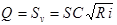
где S - площадь живого сечения, м2;
v - скорость течения воды, м/с;
С - коэффициент Шези, м0,5/с;
R - гидравлический радиус, м;
i - гидравлический уклон.
Для каналов с гидравлическим радиусом R £ 5 м коэффициент Шези следует определять, как правило, по формуле
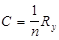
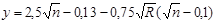
где n - коэффициент шероховатости, определяемый по таблицам 1 - 4 рекомендуемого приложения 14.
Допускается определять коэффициент Шези по формуле
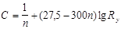
Для практических расчетов значение коэффициента Шези в формуле (2) допускается принимать по гидравлическим справочникам.
Для приближенных расчетов допускается использование формулы
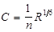
Для каналов с гидравлическим радиусом R > 5 м коэффициент Шези следует определять по каналам, работающим в аналогичных условиях.
2. При неравномерном движении воды в каналах необходимо определять соотношение бытовой hо и критической dcr глубин, при которых возможны кривые подпора или спада.
Критическую глубину dcr, м, следует определять подбором по уравнению
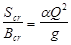
где Scr - площадь живого сечения, соответствующая критической глубине, м2;
Всr - ширина канала по урезу воды при критической глубине, м;
a - коэффициент, вводимый для учета кинетической энергии и равный 1,1;
Q - расход воды в канале, м3/с;
g - ускорение свободного падения, м/с2.
Критическую глубину dcr, м, для каналов трапецеидального сечения следует определять по формуле
dcr = k dcrf, (7)
где k = 1 - 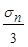
sn = 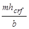
dcrf - критическая глубина в условном прямоугольном сечении, ширина по дну которого равна ширине по дну рассчитываемого канала трапецеидального сечения, м;
b - ширина трапецеидального канала по дну, м;
m - коэффициент заложения откоса.
Критическую глубину в условном прямоугольном русле следует определять по формуле
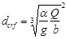
где Q - расход, равный расходу рассчитываемого канала трапецеидального сечения, м3/с;
a = 1,1.
Критический уклон icr, следует определять по формуле
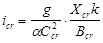
где Сcr - коэффициент Шези для канала с критической глубиной dcr;
Хcr - смоченный периметр канала при критической глубине, м;
остальные обозначения те же, что и в формуле (6)
Исходя из полученных значений dcr и icr назначаются значения глубины наполнения и уклона дна канала.
Околокритический режим работы канала не допускается.
3. Параметры каналов с нестационарным движением воды при автоматизированном водораспределении следует устанавливать с у четом динамических характеристик автоматических регуляторов и потребителей.
Параметры нестационарного движения воды необходимо определять по специальным номограммам и графикам с окончательной проверкой методами численного интегрирования системы дифференциальных уравнений или приближенными инженерными методами, базирующимися на применении ЭВМ.
Обязательное
Таблица 1
Таблица 2
|
Средний размер частиц грунта, мм |
Допускаемые неразмывающие средние скорости потока для однородных несвязанных грунтов, м/с, при глубине размыва до 5 % глубины наполнения канала и при коэффициенте однородности грунта, слагающего ложе канала k0 |
|||||||||||||||
|
k0 = 0,5 |
k0 =0,3 |
k0 = 0,2 |
k0 =0,15 |
|||||||||||||
|
при глубине потока, м |
||||||||||||||||
|
0,5 |
1 |
3 |
5 |
0,5 |
1 |
3 |
5 |
0,5 |
1 |
3 |
5 |
0,5 |
1 |
3 |
5 |
|
|
0,25 |
0,44 |
0,47 |
0,52 |
0,55 |
0,53 |
0,58 |
0,64 |
0,68 |
0,62 |
0,67 |
0,76 |
0,80 |
0,65 |
0,75 |
0,85 |
0,89 |
|
0,37 |
0,48 |
0,52 |
0,58 |
0,61 |
0,59 |
0,64 |
0,72 |
0,75 |
0,65 |
0,75 |
0,84 |
0,89 |
0,66 |
0,83 |
0,94 |
1,00 |
|
0,50 |
0,53 |
0,57 |
0,64 |
0,67 |
0,63 |
0,70 |
0,79 |
03 |
0,67 |
0,81 |
0,92 |
0,97 |
0,66 |
0,86 |
1,03 |
1,09 |
|
0,75 |
0,59 |
0,65 |
0,73 |
0,77 |
0,68 |
0,79 |
0,89 |
0,94 |
0,70 |
0,87 |
1,05 |
1,11 |
0,66 |
0,88 |
1,17 |
1,24 |
|
1,00 |
0,63 |
0,70 |
0,79 |
0,83 |
0,71 |
0,83 |
0,96 |
1,02 |
0,70 |
0,89 |
1,13 |
1,20 |
0,66 |
0,87 |
1,26 |
1,34 |
|
2,00 |
0,79 |
0,89 |
1,04 |
1,10 |
0,83 |
1,01 |
1,26 |
1,34 |
0,76 |
0,99 |
1,41 |
1,56 |
0,70 |
0,93 |
1,44 |
1,72 |
|
2,50 |
0,84 |
0,96 |
1,13 |
1,20 |
0,87 |
1,06 |
1,36 |
1,46 |
0,78 |
1,02 |
1,48 |
1,70 |
0,71 |
0,94 |
1,48 |
1,79 |
|
3,00 |
0,88 |
1,02 |
1,21 |
1,28 |
0,90 |
1,11 |
1,44 |
1,56 |
0,80 |
1,04 |
1,54 |
1,78 |
0,73 |
0,96 |
1,51 |
1,84 |
|
5,00 |
1,01 |
1,18 |
1,45 |
1,56 |
0,98 |
1,23 |
1,67 |
1,86 |
0,86 |
1,11 |
1,68 |
1,98 |
0,78 |
1,01 |
1,58 |
1,95 |
|
10,00 |
1,18 |
1,42 |
1,82 |
2,00 |
1,00 |
1,38 |
1,87 |
2,26 |
0,95 |
1,21 |
1,83 |
2,22 |
0,86 |
1,10 |
1,67 |
2,07 |
|
15,00 |
1,29 |
1,57 |
2,05 |
2,28 |
1,17 |
1,48 |
2,13 |
2,48 |
1,02 |
1,29 |
1,92 |
2,34 |
0,93 |
1,17 |
1,74 |
2,14 |
|
20,00 |
1,38 |
1,68 |
2,22 |
2,48 |
1,23 |
1,55 |
2,24 |
2,64 |
1,07 |
1,35 |
1,99 |
2,42 |
0,98 |
1,23 |
1,80 |
2,20, |
|
25,00 |
1,44 |
1,76 |
2,36 |
2,65 |
1,28 |
1,61 |
2,33 |
2,75 |
1,11 |
1,40 |
2,05 |
2,48 |
1,01 |
1,27 |
1,85 |
2,25, |
|
30,00 |
1,50 |
1,83 |
2,47 |
2,79 |
1,32 |
1,66 |
2,40 |
2,84 |
1,15 |
1,44 |
2,10 |
2,54 |
1,04 |
1,31 |
1,90 |
2,30 |
|
40,00 |
1,59 |
1,95 |
2,64 |
3,01 |
1,39 |
1,74 |
2,52 |
2,99 |
1,20 |
2,52 |
2,19 |
2,63 |
1,07 |
1,38 |
1,99 |
2,38 |
|
75,00 |
1,79 |
2,22 |
3,05 |
3,51 |
1,51 |
1,94 |
2,79 |
3,31 |
1,28 |
1,68 |
2,43 |
2,88 |
1,13 |
1,51 |
2,20 |
2,62 |
|
100,00 |
1,87 |
2,35 |
3,24 |
3,75 |
1,56 |
2,02 |
2,93 |
3,48 |
1,30 |
1,74 |
2,55 |
3,02 |
- |
- |
- |
- |
|
150,00 |
1,98 |
2,52 |
3,54 |
4,09 |
1,60 |
2,14 |
3,14 |
3,71 |
- |
- |
- |
- |
- |
- |
- |
- |
|
примечания: 1. k0 = dm/ d 2. См. примеч. к табл. 1. |
||||||||||||||||
Таблица 3
|
Расчетное удельное сцепление, 105 Па |
Допускаемые неразмывающие средние скорости потока для связанных грунтов при содержании легкорастворимых солей менее 0,2% массы грунта, м/с, при глубине потока, м |
|||
|
0,5 |
1 |
3 |
5 |
|
|
0,005 |
0,39 |
0,43 |
0,49 |
0,52 |
|
0,01 |
0,44 |
0,48 |
0,55 |
0,58 |
|
0,02 |
0,52 |
0,57 |
0,65 |
0,69 |
|
0,03 |
0,59 |
0,64 |
0,74 |
0,78 |
|
0,04 |
0,65 |
0,71 |
0,81 |
0,86 |
|
0,05 |
0,71 |
0,77 |
0,89 |
0,98 |
|
0,075 |
0,83 |
0,91 |
1,04 |
1,10 |
|
0,10 |
0,96 |
1,04 |
1,20 |
1,27 |
|
0,125 |
1,03 |
1,13 |
1,30 |
1,37 |
|
0,15 |
1,13 |
1,23 |
1,41 |
1,49 |
|
0,175 |
1,21 |
1,33 |
1,52 |
1,60 |
|
0,20 |
1,28 |
1,40 |
1,60 |
1,69 |
|
0,225 |
1,36 |
1,48 |
1,70 |
1,80 |
|
0,25 |
1,42 |
1,55 |
1,78 |
1,88 |
|
0,30 |
1,54 |
1,69 |
1,94 |
2,04 |
|
0,35 |
1,67 |
1,83 |
2,09 |
2,21 |
|
0,40 |
1,79 |
1,96 |
2,25 |
2,38 |
|
0,45 |
1,88 |
2,06 |
2,35 |
2,49 |
|
0,50 |
1,99 |
2,17 |
2,05 |
2,63 |
|
0,60 |
2,16 |
2,38 |
2,72 |
2,83 |
|
Примечания: 1. См. примеч. к табл. 1. 2. Расчетное удельное сцепление должно определяться как произведение нормативного удельного сцепления на коэффициент однородности этого грунта. За нормативное удельное сцепление должно приниматься среднее значение сцепления, полученное по денным испытаний (не менее 25). Коэффициент однородности глинистого грунта определяется по формуле 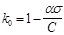 где a - коэффициент, характеризующий вероятность минимального сцепления и равный: для магистральных каналов - 2,65; для распределителей первого порядка - 2,6; для распределителей последующих порядков - 2; s - стандарт кривой распределения (средняя квадратичная ошибка); С - нормативное удельное сцепление грунта. Для распределителей низких порядков, каналов водосборно-сбросной и коллекторно-дренажной сети при отсутствии данных значения расчетного удельного сцепления допускается принимать по СНиП 2.02.01-83 и СНиП 2.02.02-85. |
||||
Таблица 4
|
Расчетное удельное сцепление, 105 Па |
Допускаемые неразмывающие средние скорости потока для связанных засоленных грунтов при содержании легкорастворимых солей 0,2 - 3,0 % массы грунта, м/с, и при глубине потока, м |
|||
|
0,5 |
1 |
3 |
5 |
|
|
0,005 |
0,36 |
0,40 |
0,46 |
0,49 |
|
0,01 |
0,39 |
0,43 |
0,49 |
0,52 |
|
0,02 |
0,41 |
0,45 |
0,52 |
0,55 |
|
0,03 |
0,43 |
0,48 |
0,55 |
0,59 |
|
0,04 |
0,46 |
0,51 |
0,58 |
0,62 |
|
0,05 |
0,48 |
0,53 |
0,61 |
0,65 |
|
0,075 |
0,51 |
0,56 |
0,64 |
0,69 |
|
0,10 |
0,55 |
0,61 |
0,70 |
0,75 |
|
0,125 |
0,60 |
0,67 |
0,76 |
0,81 |
|
0,15 |
0,65 |
0,72 |
0,82 |
0,88 |
|
0,175 |
0,70 |
0,77 |
0,89 |
0,94 |
|
0,20 |
0,75 |
0,82 |
0,93 |
1,00 |
|
0,225 |
0,80 |
0,88 |
1,00 |
1,07 |
|
0,25 |
0,82 |
0,91 |
1,04 |
1,10 |
|
0,30 |
0,90 |
0,99 |
1,12 |
1,20 |
|
0,35 |
0,97 |
1,06 |
1,22 |
1,30 |
|
0,40 |
1,03 |
1,15 |
1,31 |
1,40 |
|
0,45 |
1,09 |
1,20 |
1,39 |
1,46 |
|
0,50 |
1,26 |
1,28 |
1,46 |
1,56 |
|
0,60 |
1,27 |
1,38 |
1,60 |
1,70 |
|
Примечания: 1. При содержании в связных грунтах легкорастворимых солей более 3 % допускаемые неразмываемые скорости должны устанавливаться на основании специальных исследований. 2. См. примеч. к табл. 1, 3. |
||||
Таблица 5
|
Торф |
допускаемые неразмываемые средние скорости потока для торфов (при R = 1 м) |
|
Древесный |
0,4 |
|
Хвощевой |
0,8 |
|
Осоково-гипновый хорошо разложившийся (более 55%) |
0,6 |
|
Осоково-гипновый слабо разложившийся (до 35 %) |
0,9 |
|
Сфагновый хорошо разложившийся (более 55%) |
0,7 |
|
Сфагновый слабо разложившийся (до 35%) |
1,2 |
|
Сфагновый пушицевый слабо разложившийся (до 35 %) |
1,5 |
|
примечание. Для других значений R значение допускаемой скорости следует определять умножением приведенных значений на R0,66 |
|
Таблица 6
|
Допускаемые средние скорости потока для каналов с монолитными бетонными, сборными железобетонными и асфальтобетонными облицовками, м/с, при глубине потока, м |
||||
|
0,6 |
1,0 |
3,0 |
6,0 |
|
|
50 |
0,6 |
10,6 |
12,3 |
13,0 |
|
75 |
11,2 |
12,4 |
14,3 |
15,2 |
|
100 |
12,5 |
13,8 |
16,0 |
17,0 |
|
150 |
14,0 |
15,6 |
18,0 |
19,1 |
|
200 |
15,6 |
17,3 |
20,0 |
21,2 |
|
300 |
19,2 |
21,2 |
24,6 |
26,1 |
Таблица 7
|
Грунт русла канала |
Коэффициент условий работы Кс для каналов в связных и несвязных грунтах при содержании в потоке глинистых частиц 0,1 кг/м3 и более |
||
|
для магистральных каналов и их ветвей |
для распределителей высоких порядков |
для распределителей низких порядков |
|
|
Песок: |
|||
|
мелкий и средней крупности |
1,3 |
1,4 |
1,5 |
|
крупный и гравелистый |
1,5 |
1,6 |
1,7 |
|
Гравий: |
|||
|
мелкий |
1,5 |
1,6 |
1,7 |
|
средний |
1,4 |
1,5 |
1,6 |
|
крупный |
1,2 |
1,3 |
1,4 |
|
Галька |
1,1 |
1,2 |
1,3 |
|
Глинистые грунты при наличии: |
|||
|
наносов в коллоидном состоянии |
1,30 |
1,40 |
1,60 |
|
донных коррозирующих наносов |
0,75 |
0,8 |
0,85 |
|
Дно и откосы покрыты растительностью |
1,1 |
1,15 |
1,2 |
|
При длительных перерывах работы каналов для районов: |
|||
|
недостаточного увлажнения |
0,2 |
0,22 |
0,25 |
|
с влажным климатом |
0,6 |
0,7 |
0,8 |
|
Примечания: 1. Длительным считается перерыв, в течении которого происходит пересыхание грунтов, вызывающее снижение их сопротивляемости размыву. 2. Периодичность работы не учитывается и допускаемые скорости не уменьшаются для тех каналов, в которых размывы не препятствуют нормальной эксплуатации (каналы водосборно-сбросной сети, редко действующие сбросы и т.д.). 3. К районам недостаточного увлажнения относится территория, расположенная между изолиниями 0,0 и 0,5 л/с с 1 км2 на картах изолиний годового стока рек СССР. |
|||
Рекомендуемое
Транспортирующую способность канала r, г/м3, следует определять по формулам:
при 2 < W < 8 мм/с
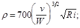
при 0,4 < W < 2 мм/с
, (2)
где W - гидравлическая крупность частиц среднего диаметра, принимаемая по таблице;
v - скорость течения воды в канале, м/с;
R - гидравлический радиус канала, м;
i - уклон дна канала.
Величину незаиляющей скорости vs м/с, необходимо вычислять по формуле
vs = 0,3 R0,25, (3)
где R - гидравлический радиус канала, м.
|
d, мм |
W, мм/с |
d, мм |
W, мм/с |
d, мм |
W, мм/с |
|
0,005 |
0,0175 |
0,06 |
2,49 |
0,150 |
15,60 |
|
0,01 |
0,0692 |
0,07 |
3,39 |
0,175 |
18,90 |
|
0,02 |
0,277 |
0,08 |
4,43 |
0,20 |
21,60 |
|
0,03 |
0,623 |
0,09 |
5,61 |
0,225 |
24,30 |
|
0,04 |
1,11 |
0,10 |
6,92 |
0,25 |
27,00 |
|
0,05 |
1,73 |
0,125 |
10,81 |
0,275 |
29,90 |
Допускается определять незаиляющую скорость по формуле
vs = AQ0,2, (4)
где A - эмпирический коэффициент;
А = 0,33 для < 1,5;
А = 0,44 для = 1,5,..., 3,5
А = 0,55 для > 3,5;
- средневзвешенная гидравлическая крупность наносов, мм/с;
Q - расчетный расход, м3/с.
Рекомендуемое
Расчет фильтрационных потерь из каналов непрерывного действия в земляном русле при установившейся свободной фильтрации следует выполнять по следующим зависимостям:
а) для каналов полигональной и параболической формы
Qf = 0,0116 kf (B + 2dc); (1)
б) для каналов трапецеидальной формы при 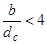
Qf = 0,0116 kf m(B + 2dc); (2)
при 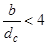
где Qf - расход фильтрационных потерь, м3/с, на 1 км длины канала;
kf - коэффициент фильтрации грунтов ложа канала, м/сут;
В - ширина канала по урезу воды, м;
b - ширина канала по дну, м;
dс - глубина воды в канале, м;
m и А - коэффициенты, определяемые по табл. 1.
Таблица 1
|
b dc |
m = 1 |
m = 1,5 |
m = 2 |
|||
|
A |
m |
A |
m |
A |
m |
|
|
2 |
- |
0,98 |
- |
0,78 |
- |
0,62 |
|
3 |
- |
1,00 |
- |
0,98 |
- |
0,82 |
|
4 |
- |
1,14 |
- |
1,04 |
- |
0,94 |
|
5 |
3,0 |
- |
2,5 |
- |
2,1 |
- |
|
6 |
3,2 |
- |
2,7 |
- |
2,3 |
- |
|
7 |
3,4 |
- |
3,0 |
- |
2,7 |
- |
|
10 |
3,7 |
- |
3,2 |
- |
2,9 |
- |
|
15 |
4,0 |
- |
3,6 |
- |
3,3 |
- |
|
20 |
4,2 |
- |
3,9 |
- |
3,6 |
- |
При многослойном основании коэффициент фильтрации следует определять по формуле
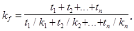
где t1, ..., tn - мощность слоя грунта, м;
k1, ..., kn - коэффициент фильтрации этого слоя грунта, м/сут.
Расчет фильтрационных потерь из облицованного канала, м3/с на 1 км, при облицовке одинаковой толщины на дне и откосах при установившейся свободной фильтрации рекомендуется выполнять по формуле
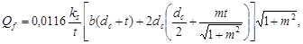
где ks - коэффициент фильтрации экрана, м/сут;
t - толщина облицовки, м;
b - ширина канала по дну, м;
dc - глубина наполнения канала при расчетном расходе м;
m - коэффициент заложения откосов.
Поправка. БСТ 9-86.
Усредненные коэффициенты фильтрации противофильтрационных покрытий каналов (с учетом фильтрации через швы) следует принимать по табл. 2.
Потери при подпорной фильтрации следует определять по зависимости
QfL = Qf a, (6)
где Qf - фильтрационные потери при свободной фильтрации, м3/с;
a - коэффициент, характеризующий влияние подпора грунтовых вод на величину потерь (a < 1) в зависимости от превышения канала над зеркалом грунтовых вод и определяемый по табл. 3.
|
Противофильтрационное покрытие |
Усредненный коэффициент фильтрации, м/сут |
|
Бетонные монолитные облицовки, качество швов удовлетворительное |
0,0007 - 0,0003 |
|
Бетонные монолитные облицовки со швами, герметизированными профильными прокладками типа "констоп" |
0,0002 |
|
Железобетонные сборные облицовки, швы герметизированы пороизолом и битумно-полимерными мастиками |
0,0007 - 0,0003 |
|
Железобетонные сборные облицовки, швы герметизированы тиоколовыми мастиками |
0,0004 - 0,00025 |
|
Сборные бетонопленочные облицовки |
0,0003 - 0,00025 |
|
Монолитные бетонопленочные облицовки |
0,0003 - 0,00025 |
|
Асфальтобетонные облицовки |
0,0004 - 0,0002 |
|
Грунтово-пленочные экраны, поверхностные экраны из полимерных пленок |
0,00035 - 0,00025 |
|
Расход воды в канале, м3/с |
Глубина залегания грунтовых вод, м |
|||||||
|
до 3 |
3 |
5 |
7,5 |
10 |
15 |
20 |
25 |
|
|
1 |
0,63 |
0,79 |
- |
- |
- |
- |
- |
- |
|
3 |
0,50 |
0,63 |
0,82 |
- |
- |
- |
- |
- |
|
10 |
0,41 |
0,50 |
0,66 |
0,79 |
0,91 |
- |
- |
- |
|
20 |
0,36 |
0,45 |
0,57 |
0,71 |
0,82 |
- |
- |
- |
|
30 |
0,35 |
0,42 |
0,54 |
0,66 |
0,77 |
0,94 |
- |
- |
|
50 |
0,32 |
0,37 |
0,49 |
0,60 |
0,69 |
0,84 |
0,97 |
- |
|
100 |
0,28 |
0,33 |
0,42 |
0,52 |
0,58 |
0,73 |
0,84 |
0,94 |
Рекомендуемое
|
Параметры |
Тип засоления |
||||||
|
хлоридный |
сульфатно-хлоридый |
хлоридно-сульатный |
сульфатный |
хлоридно-содовый и содово-хлоридный |
сульфатно-содовый и содово-сульфатный |
сульфатно-хлоридно-гидрокарбонатный |
|
|
Общее содержание солей (плотный остаток) |
0,15 |
0,20 |
0,4(0,6) |
0,6(1,2) |
0,20 |
0,25 |
0,40 |
|
Сумма токсичных солей |
0,10 |
0,12 |
0,25 |
0,30 |
0,15 |
0,25 |
0,30 |
|
Токсичный сульфат-ион |
0,02 |
0,04 |
0,11 |
0,14 |
¾ |
0,07 |
0,10 |
|
Хлор-ион |
0,03 |
0,03 |
0,03 |
0,03 |
0,02 |
- |
0,03 |
|
Подвижный натрий-ион |
0,046 |
0,046 |
0,046 |
0,046 |
0,046 |
0,046 |
0,046 |
|
Гидрокарбонат-ион |
0,08 |
0,08 |
0,08 |
0,08 |
0,10 |
0,10 |
0,10 |
|
рН в суспензии 1:2,5 |
8,3 |
8,3 |
8,3 |
8,3 |
8,5 |
8,5 |
8,5 |
|
Поглощенный натрий |
В высокогумусных и малогумусных почвах верхний предел не должен превышать соответственно 10 % и 5 % суммы катионов |
||||||
|
Примечания: 1. Цифры без скобок соответствуют содержанию гипса в почвах не более 0,5 %, в скобках - более 0,5 %. 2. Содержание солей не должно превышать величин любого из приведенных показателей. |
|||||||
Рекомендуемое
При обосновании параметров закрытой и открытой регулирующей осушительной сети, как правило, необходимо использовать материалы фактических наблюдений на объектах-аналогах, а также апробированные в данном регионе методы, основанные на фильтрационных расчетах или учете генетических особенностей почв.
1. Фильтрационные расчеты горизонтального дренажа в однородных грунтах при атмосферном и грунтовом водном питании следует проводить по формулам:
для случая 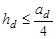
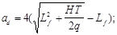
для случая 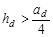
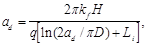
где hd - расстояние от оси дрены до водоупора, м;
ad - расстояние между дренами, м;
Lf - общие фильтрационные сопротивления по степени и характеру вскрытия пласта, м;
Н - расчетный напор, м;
Т - проводимость пласта, м2/сут;
q - интенсивность инфильтрационного питания (средний за расчетный период приток к закрытым дренам, каналам), м/сут;
kf - коэффициент фильтрации грунта, м/сут:
Li - фильтрационные сопротивления по характеру вскрытия пласта, м;
D - наружный диаметр дрены, м.
Общие фильтрационные сопротивления определяются по формуле
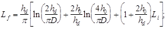
где h0 = 0,5 Н.
Расчетный напор следует определять по формуле
Н = dd - 0,6 Jnd, (5)
где Jnd - норма осушения, м;
dd - глубина до оси дрены, м.
Т = kf (h0 + hd). (6)
Интенсивность инфильтрационного питания определяется на основании региональных данных или находится по формуле
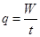
где W - количество (слой) воды, подлежащей отводу, м;
t - время понижения уровня грунтовых вод до нормы осушения, сут.
Количество (слой) воды, подлежащей отводу
W = hs + Jnd m + P - Et, (8)
где hs - слой воды, оставшийся на поверхности после схода весенних или ливневых вод. С учетом мероприятий по организации поверхностного стока hs следует принимать 0,01 м;
m - коэффициент водоотдачи, определяемый при изысканиях;
Р - осадки, выпавшие за расчетный период, м, принимаются для пашни и пастбищ 10 %-ной и сенокосов 25 %-ной обеспеченности;
E - суточный слой испарения за расчетный период в год 10%-ной обеспеченности для пашни и пастбищ и 25 %-ной для сенокосов.
Фильтрационные сопротивления по характеру вскрытия пласта Li в зависимости от конструкции дрен следует принимать:
керамические трубы без фильтра . . . . . . . . . . . . . . . . . . . 8
то же, с оберткой стыков рулонными
защитно-фильтрующими материалами . . . . . . . . . . . . . . 3
то же, со сплошной оберткой . . . . . . . . . . . . . . . . . . . . . . 1
гофрированные пластмассовые трубы без фильтра . . . . 4
то же, с оберткой рулонными
защитно-фильтрующими материалами . . . . . . . . . . . . . . 0,5
при устройстве объемных фильтров
толщиной 20 см и более . . . . . . . . . . . . . . . . . . . . . . . . . . . 0,0
Для расчета расстояний между открытыми каналами следует принимать D = 0,63c, где c - смоченный периметр канала, Li = 0, величины H, dd, hd необходимо отсчитывать от уровня воды в канале.
2. Расстояние между дренами при совместном атмосферном и грунтово-напорном водном питании для случая определяется по формуле
(9)
где (10)
(11)
(12)
(13)
где DН - превышение пьезометрического напора над осью дрены, м;
(14)
(15)
- градиент восходящего тока.
Остальные условные обозначения приведены выше.
3. Расчет расстояний между дренами при подпочвенном увлажнении следует определять по формуле (1). При этом
(16)
H = H0 - 0,4h1 - 0,6h2; (17)
h = Н0 - 0,5H, (18)
где Н0 - напор воды в дрене, м;
h1 - расстояние от оси дрены до уровня грунтовых вод перед увлажнением в середине между дренами, м;
h2 - то же, после увлажнения;
t - время увлажнения, сут.;
m - коэффициент водоотдачи, определяемый при изысканиях;
Е - суточный слой испарения за расчетный период в год расчетной обеспеченности, м/сут;
P - среднесуточное количество осадков за расчетный период в год расчетной обеспеченности, м /сут.
4. Расстояния между открытыми каналами при их расчете на отвод поверхностного стока следует определять по формуле
(19)
где t - время отвода поверхностных вод, ч;
n - шероховатость поверхности (принимается по опытным данным), а при их отсутствии равная: для борозд вдоль уклона на вспаханной поверхности - 0,05; для ровной укатанной поверхности - 0,08; для вспаханной поперек уклона поверхности без борозд - 0,12; для поверхности с высоким травостоем - 2,3;
s - коэффициент поверхностного стока; при отсутствии данных принимается по таблице;
i - уклон поверхности;
h - слой осадков, мм, выпавших за время ta, ч.
|
Водопроницаемость грунтов |
Коэффициенты поверхностного стока при |
|||
|
коэффициенте |
уклоне водосбросной площади |
|||
|
фильтрации, м/сут |
слабом (менее 0,1) |
среднем (0,01-0,05) |
большом (св. 0,05) |
|
|
Хорошая |
2,0 |
0,1-0,2 |
0,15-0,25 |
0,2-0,3 |
|
Средняя |
1,0 |
0,15-0,25 |
0,2-0,3 |
0,25-0,4 |
|
Ниже средней |
0,5 |
0,2-0,3 |
0,25-0,45 |
0,35-0,6 |
|
Слабая |
0,1 |
0,25-0,4 |
0,3-0,6 |
0,5-0,75 |
|
Мерзлый грунт |
- |
0,3-0,6 |
0,4-0,75 |
0,8-0,95 |
СОДЕРЖАНИЕ